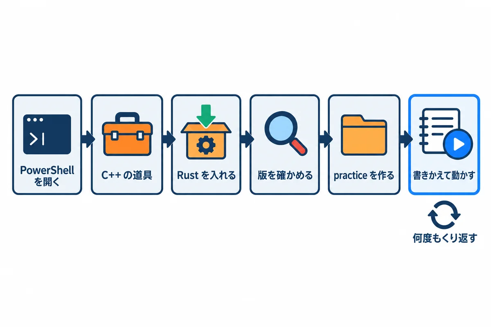
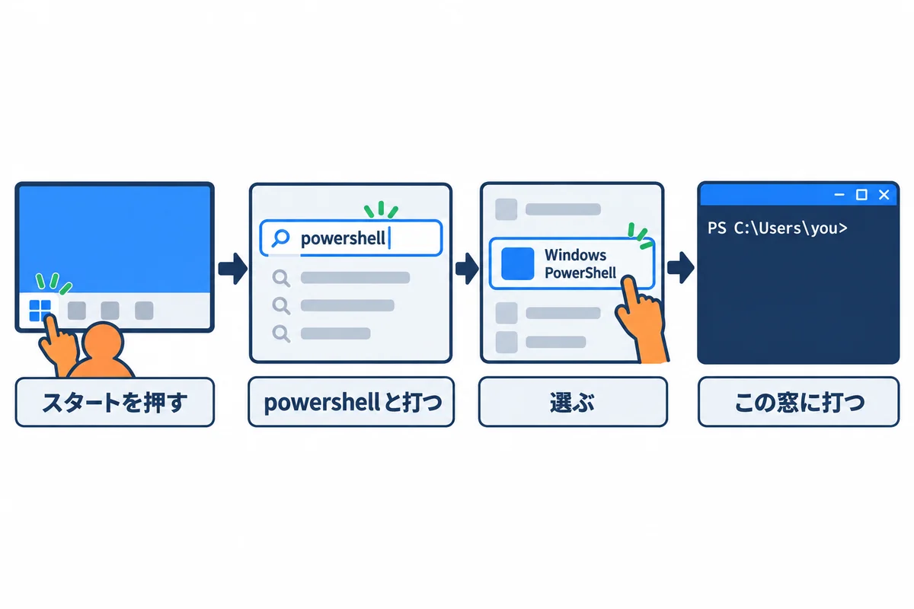
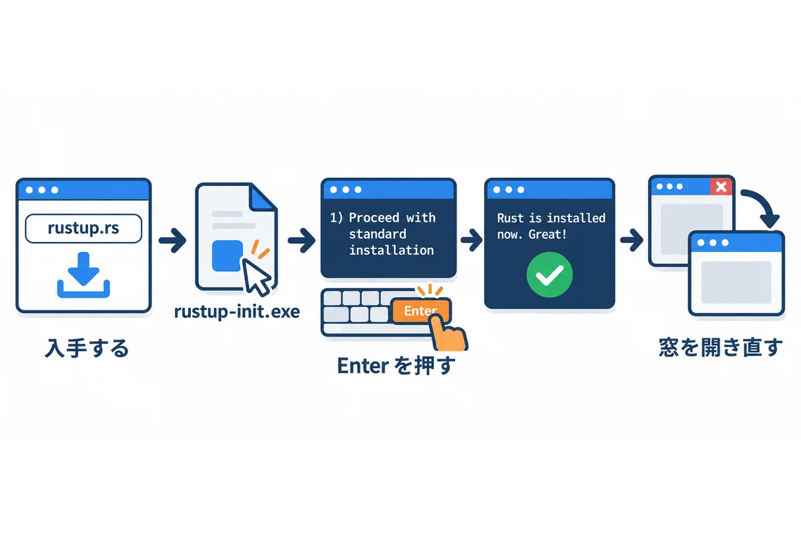
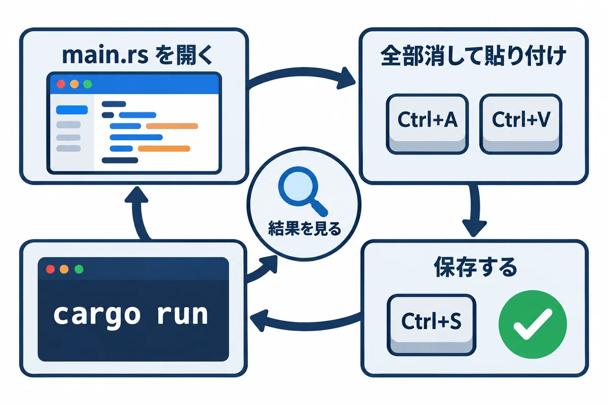
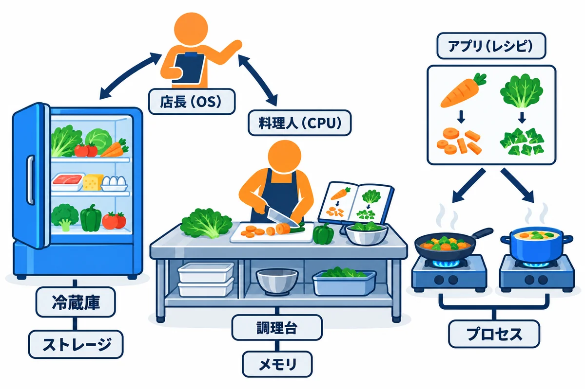
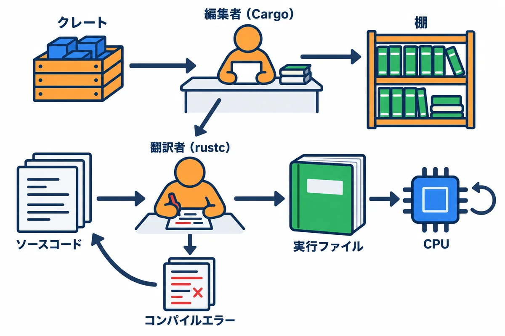
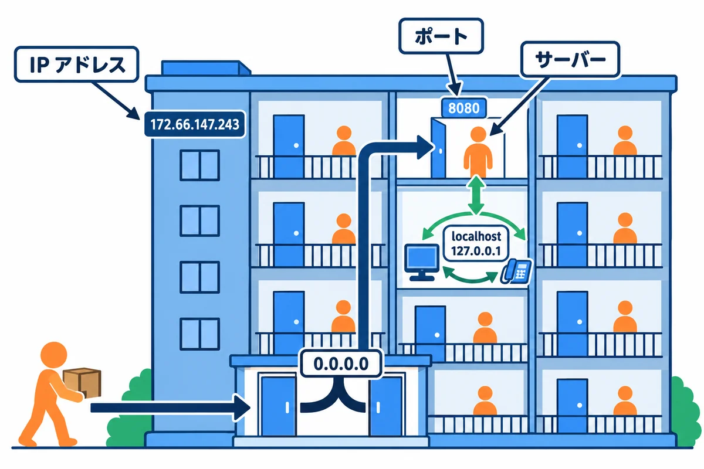
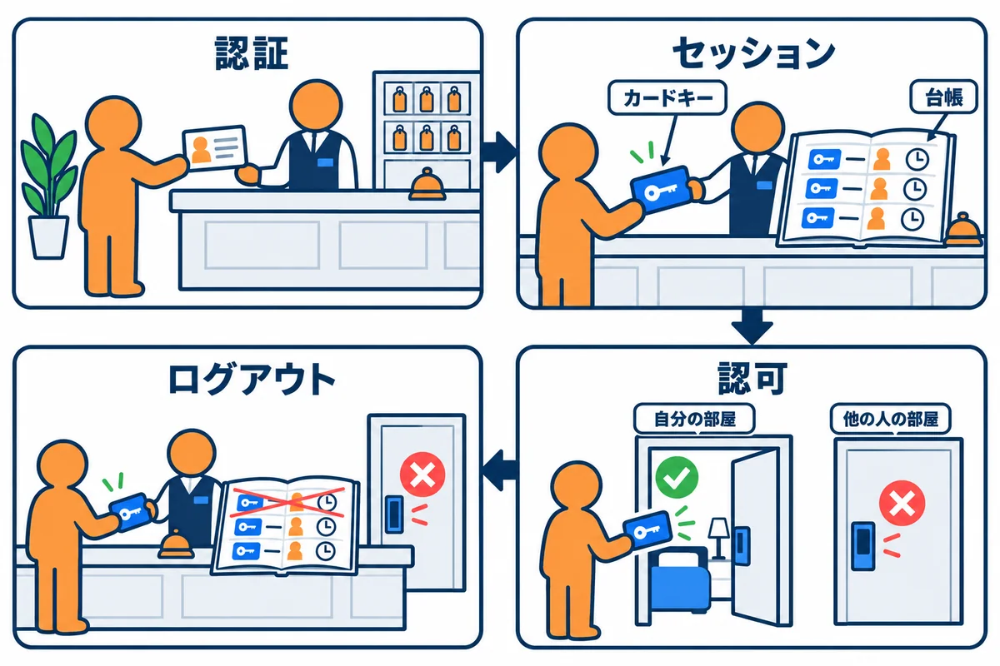
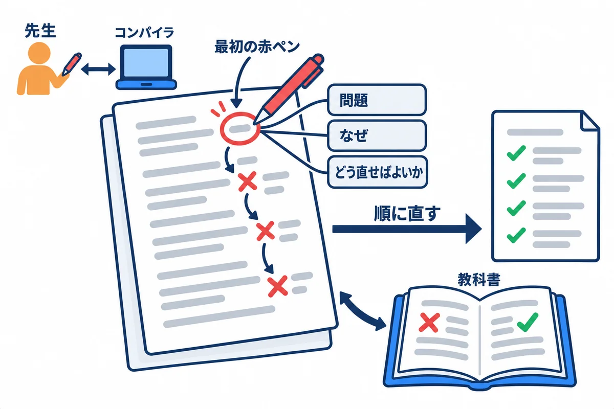

VOLUME 00 / RUST BACKEND MASTERY
学習ガイド — コンピュータとWebから完成像まで
プログラミング未経験から、Rust で作る Web アプリ「RustNote」の全体像と、全14巻の歩き方をつかむ
色の付いた枠のコードの、右上の「コピー」ボタンを押してください。コピーしたら、ブラウザーの「戻る」で PDF に戻れます。
この巻は、全14巻からなる「Rust バックエンド教材」の入口です。プログラミングをしたことがない人を想定して、「コンピュータの中で何が起きているのか」「Web アプリはどうやって動いているのか」を、たとえ話と図で1つずつ説明します。そのうえで、このシリーズを通して作るメモアプリ RustNote（ラストノート） の完成像と、14巻をどの順番で読めばよいかを示します。
難しい文法はまだ覚えなくて大丈夫です。この巻のコードは「動かして、出力を見て、何が起きたかを言葉で説明する」ためのものです。
この巻を読み終えると、次のことができるようになります。
このシリーズでは、最終的に RustNote という「ログインして使うメモ帳」の Web アプリを作り、インターネットに公開します。最初に完成した姿を見ておくと、各巻で学ぶことが「全体のどこの部品なのか」が分かりやすくなります。
RustNote でできることは次のとおりです。
用語: Web アプリ（ウェブアプリ） … ブラウザ（Chrome や Edge など）で開いて使うアプリのことです。スマホのアプリのようにインストールしなくても、URL を開くだけで使えます。
次の2枚は、RustNote の完成画面のイメージです（実際の色や配置は第9巻・第10巻で一緒に作りながら決めます）。
画面の部品と、そのとき裏でブラウザが送るリクエスト（お願い）の対応は次のとおりです。今は「部品ごとに決まった URL がある」とだけ分かれば十分です。URL やメソッド（GET・POST）は UNIT 05 で説明します。
| 画面の部品 | ブラウザが送るリクエスト | サーバーがすること |
|---|---|---|
| 一覧を開く・検索・ページ送り | GET /notes（?q=買い物 で検索） |
ログイン中の人のノートだけを探して HTML で返す |
| 「作成」ボタン | POST /notes |
タイトルを検査して保存し、一覧へ移動させる（303） |
| タイトルをクリック | GET /notes/{id} |
そのノートの詳細を返す（他人のなら 404） |
| 「編集」 | GET /notes/{id}/edit → POST /notes/{id}/edit |
編集フォームを返す → 変更を保存する |
| チェックボックス | POST /notes/{id}/toggle |
済み／未済みを切り替える |
| 「削除」 | POST /notes/{id}/delete |
ノートを削除する |
| 「ログアウト」 | POST /logout |
ログイン状態を終わらせる |
RustNote は、次の3つの登場人物でできています。
| 登場人物 | 役割 | たとえると | 主に学ぶ巻 |
|---|---|---|---|
| ブラウザ | URL を開き、サーバーから届いた HTML を画面に描く | お店に来たお客さん | 第0巻・第6巻 |
| RustNote サーバー | リクエストを受け取り、ログインの確認・ノートの処理をして HTML を返す。Rust で書き、Web アプリ用の部品集 Topcoat（トップコート） を使う | お店の店員 | 第2〜6巻・第8〜10巻 |
| Turso（ターソ） | ユーザー・ノート・ログイン状態を、消えないように保存しておくデータベース | お店の帳簿・倉庫 | 第7巻 |
| Fly.io（フライアイオー） | サーバーのプログラムを、インターネットから届く場所で動かしてくれるクラウドサービス | お店を出す貸しテナント | 第12巻 |
用語: フレームワーク … アプリを作るときに毎回必要になる「よくある仕組み」（URL ごとに処理を振り分ける、フォームの値を受け取る、など）をまとめて用意してくれる部品集です。Topcoat は Rust 用の Web フレームワークの1つで、このシリーズでは 0.10 系を使います。まだ若いフレームワークなので、版が変わると書き方が変わることがあります（第1巻・第6巻で詳しく扱います）。
14巻は、大きく4つのまとまりに分かれています。上から順に読むのが基本です。
| 巻 | テーマ | 読み終えるとできること |
|---|---|---|
| 第0巻 | 学習ガイド（この巻） | コンピュータと Web の基本が分かり、全体の地図を持てる |
| 第1巻 | 環境構築 | PowerShell・Git・VS Code・Rust・Topcoat・Turso・Fly.io の道具を自分の PC にそろえられる |
| 第2巻 | Rust 基礎 | 変数・型・関数・条件分岐・くり返し・構造体などで、小さなプログラムを書ける |
| 第3巻 | 所有権・借用・ライフタイム | Rust 独特の「値の持ち主」のルールを理解し、コンパイラと仲良くなれる |
| 第4巻 | 型・trait・エラー・テスト | 大きめのプログラムを、型とエラー処理とテストで安全に組み立てられる |
| 第5巻 | async・並行処理 | たくさんのリクエストを同時にさばくための非同期処理が分かる |
| 第6巻 | HTTP と Topcoat 0.11 | Topcoat で Web ページを返し、フォームを受け取れる |
| 第7巻 | Turso・SQL | テーブルを設計し、SQL でデータを保存・検索できる |
| 第8巻 | 認証・認可 | 安全な登録・ログイン・ログアウトと、「自分のデータだけ触れる」仕組みを作れる |
| 第9巻 | RustNote 設計・準備 | 要件と画面を決め、プロジェクトの骨組みを作れる |
| 第10巻 | RustNote 完全実装 | ノートの一覧・作成・編集・削除・検索・ページ送りを完成させられる |
| 第11巻 | 品質保証 | テスト・セキュリティ確認・ログ・性能測定で品質を確かめられる |
| 第12巻 | Fly.io 公開・運用 | Docker で包んでインターネットに公開し、障害から復旧できる |
| 第13巻 | 完全コード・演習・用語集 | 完成したコードの全体を読み通し、総合演習で力を確かめられる |
| 付録 | よく使う機能の早見表とサンプル集 | PowerShell・cargo・Git の操作と、文字列・Vec・Option・Result・イテレーター・ファイル・JSON・非同期などのよく使う書き方を、動くサンプルで引ける（どの巻を読んでいる時でも使える） |
| 付録 2 | 出てくるコードとコマンドの一覧 | この本のコードに出てくる 1,200 個あまりの部品（キーワード・マクロ・関数・メソッド・コマンドなど）を、機能ごとの表で引ける。本文でも、初めて出てくるコードのすぐ下に、同じ説明の箱（▶ ここで初めて出てくるコード）がある |
この巻の10の単元（UNIT）は、「コンピュータの基本」→「Web の基本」→「学び方」の順に並んでいます。
| 単元 | 一言でいうと | 動かすもの |
|---|---|---|
| UNIT 01 | コンピュータは「料理人・調理台・冷蔵庫・店長」 | 自分のプロセス番号を表示するプログラム |
| UNIT 02 | ファイルの場所は「住所」で表す | ファイルを書いて読み戻すプログラム |
| UNIT 03 | 文字で OS にお願いする窓 | PowerShell の基本コマンド |
| UNIT 04 | 人の言葉を機械の言葉に翻訳する | cargo new → cargo run |
| UNIT 05 | Web は「決まった形の手紙」のやりとり | curl.exe と、HTTP を手で送るプログラム |
| UNIT 06 | ポートは「部屋番号」 | Rust だけで作る小さな Web サーバー |
| UNIT 07 | 消えない場所にしまう | ファイルに保存するカウンター |
| UNIT 08 | 「誰か」と「何をしてよいか」は別の話 | ログインと持ち主チェックのミニ版 |
| UNIT 09 | エラーは「直し方つきの診断書」 | わざと間違えたコード |
| UNIT 10 | 予想→実行→観察→変更→説明 | テストで間違いを見つけて直す |
この巻は全14巻の最初に読む巻です。先に読んでおくべき巻はありません。
この巻は、読みながら、手元でコードを動かして進めます。読むだけより、手を動かした方が、理解の深さがまったく違うからです。
practice を作ります（最初に 1 回だけ）。practice の src\main.rs を書きかえて cargo run で動かします。ヒント:
cargo runは、プログラム自身が表示する文字より先に、次のような3行を表示します。
Compiling practice v0.1.0 (...)／Finished ...／Running ...これは Cargo（カーゴ）という道具の「今コンパイルしています」「終わりました」「実行します」という報告です（UNIT 04 で説明します）。この巻の実行結果では、説明に必要なとき以外はこの3行を省き、プログラム自身の出力だけを載せます。
cargo run -qと打つと、この3行を出さずに実行できます。
ヒント: この巻に出てくる
C:\Users\you\...のyouの部分は、あなたの Windows のユーザー名に読み替えてください。プロセス番号や時刻など、実行するたびに変わる値もあります。
この巻のコードと実行結果は、次の環境で実際に動かして確認しています。
| 道具 | 版 | この巻での使い道 |
|---|---|---|
| Windows 11 | ARM64 版（x64 版でも同じ手順） | すべての作業 |
| PowerShell | 5.1（Windows に最初から入っているもの） | コマンドを打つ（UNIT 03 以降） |
| Rust（rustc・cargo） | 1.99.1、edition 2024（1.99 以上なら同じ手順） | すべての Rust コード |
| curl.exe | 8.x（Windows に最初から入っているもの） | HTTP のやりとりを見る（UNIT 05・06） |
| ブラウザ | Chrome または Edge | 作ったサーバーにアクセスする（UNIT 06） |
| SQLite のコマンドラインツール | 3.50（参考） | SQL の例の確認だけに使用（UNIT 07。読者は見るだけでよい） |
注意: この巻ではまだ Topcoat・Turso・Fly.io は使いません。Rust に最初から付いてくる機能（標準ライブラリ）だけで、Web の仕組みを体験します。このシリーズで使う Topcoat 0.11 は Rust 1.99 以上が必要なので、シリーズ全体で「Rust 1.99 以上、動作確認は 1.99.1」を基準にしています。インストールは、次の「はじめに: 手を動かす準備」で行います（くわしい説明は第1巻）。
WSL（Windows の中で Linux を動かす仕組み）や macOS・Linux を使う人は、コマンドの違いを各単元の「補足」で示します。
この巻のコードを動かすための準備です。最初に 1 回だけ行います。プログラミングが初めての人も、上から順に、書いてあるとおりに進めれば大丈夫です。

| 順番 | すること | 何のため |
|---|---|---|
| P-1 | PowerShell（文字でパソコンに指示する窓）を開く | このあとのコマンドを打つ |
| P-2 | C++ の道具（Build Tools）を入れる | Rust が .exe を作るときに使う |
| P-3 | Rust を入れる（rustup-init.exe） |
Rust の道具一式（rustc・cargo）を入れる |
| P-4 | 入ったかを確かめる | 版を表示して、正しく入ったかを見る |
| P-5 | 練習用のプロジェクト practice を作る |
この巻のコードを書く場所を作る |
| P-6 | ファイルを書きかえて、動かす | この巻の例は、全部この手順で動かす |
| P-7 | うまくいかないとき | よくある 3 つの失敗と、直し方 |
ヒント: この準備のもっと詳しい説明（版の選び方・置き場所・ARM64 と x64 の違いなど）は、第1巻にあります。ここでは「この巻のコードを動かせるようになる」所までを、いちばん短い道で進みます。
powershell と打ちます。
黒（または青）の窓が開き、PS C:\Users\you> のような行が出ます（you の所は、あなたの Windows のユーザー名）。この窓に、このあとのコマンドを打ちます。1 行打ったら Enter キーを押すと、その行が実行されます。PowerShell のくわしい使い方は UNIT 03 で学びます。
Windows で Rust のプログラムを .exe にするには、Microsoft の Build Tools（C++ の道具。中の link.exe が、部品をつないで .exe にする）が要ります。
rustup-init.exe を動かしたときに、Visual Studio が見つからないと、rustup が「入れますか」と聞いて、入れ方を案内してくれます。その案内に従います。注意: Build Tools は、VS Code（エディター）とは別の物です。VS Code を入れても、Build Tools の代わりにはなりません。くわしくは第1巻 UNIT 05 にあります。
https://rustup.rs/ を開きます。rustup-init.exe を入手します（2026-10-31 に確かめたもの）。CPU の種類が分からなければ、多くの PC は「x64」です（Snapdragon などの PC は「ARM64」）。| PC の CPU | 選ぶもの | 入手先 |
|---|---|---|
| x64（Intel・AMD） | Windows 64-bit | https://win.rustup.rs/x86_64 |
| ARM64（Snapdragon など） | Windows on Arm | https://win.rustup.rs/aarch64 |
rustup-init.exe を、エクスプローラーでダブルクリックします。1) Proceed with standard installation (default - just press enter)
2) Customize installation
3) Cancel installation
>
stable-aarch64-pc-windows-msvc installed - rustc 1.99.1 (58cf8f9c3 2026-10-13)
Rust is installed now. Great!

新しく開いた PowerShell に、次の 2 行を 1 行ずつ打ちます。
rustc --version
cargo --version
▼ 実行結果
rustc 1.99.1 (58cf8f9c3 2026-10-13)
cargo 1.99.1 (5f94df478 2026-08-27)
▶ ここで初めて出てくるコード
rustc（Rust の道具）: Rust のコンパイラー（翻訳する係）。人が書いた.rsのファイルを、パソコンが直接動かせる実行ファイル（.exe）に翻訳します。ふだんは直接打たず、cargoが中で呼んでくれます。rustc --versionで版を確かめられます。cargo（Rust の道具）: Rust のプロジェクトをまとめて世話する道具。cargo new（作る）・cargo run（翻訳して動かす）・cargo build（翻訳だけ）・cargo test（テスト）・cargo add（部品を足す）のように、後ろに「何をするか」を付けて使います。cargo --versionで版を確かめられます。
確かめること: 2 行とも、1.99 以上の版が出る。rustc は Rust の翻訳係（コンパイラ）、cargo は段取り係（プロジェクトを作る・翻訳を頼む・動かす）です。この巻では、ほとんど cargo だけを使います。
practice を作るこの巻のコードは、全部 practice という 1 つのプロジェクト（プログラムをまとめておくフォルダ）で動かします。PowerShell に、次の 5 行を 1 行ずつ打ちます。
# ホームフォルダ（C:\Users\you）へ移動する
cd ~
# 練習用のフォルダ rust-study を作って、その中へ移動する
mkdir rust-study
cd rust-study
# 練習用のプロジェクト practice を作って、その中へ移動する
cargo new practice
cd practice
cargo new practice の ▼ 実行結果
Creating binary (application) `practice` package
note: see more `Cargo.toml` keys and their definitions at https://doc.rust-lang.org/cargo/reference/manifest.html
▶ ここで初めて出てくるコード
cd（PowerShell）: 「change directory（フォルダを移る）」の略。cd rust-studyで、今いるフォルダの中のrust-studyへ移ります。cd ..は 1 つ上のフォルダへ、cd ~はホームフォルダ（C:\Users\you）へ戻ります。今いる場所は、行の頭のPS C:\Users\you\rust-study>の部分に表示されます。mkdir（PowerShell）: 「make directory（フォルダを作る）」の略。mkdir rust-studyで、今いるフォルダの中にrust-studyという新しいフォルダを作ります。もう同じ名前のフォルダがあると、エラーになります。cargo new（cargo のコマンド）: 新しい Rust のプロジェクト（プログラムをまとめるフォルダ）を作ります。cargo new practiceで、practiceフォルダの中にCargo.toml（設定）とsrc\main.rs（プログラムを書くファイル）ができます。名前には英小文字・数字・-・_を使います。
# で始まる行は説明のメモ（コメント）なので、打たなくてもかまいません。cargo new が、次のフォルダとファイルを作りました。
C:\Users\you\rust-study\practice\
├─ Cargo.toml プロジェクトの名前・版・使う部品を書くファイル
├─ .gitignore Git に入れない物の一覧（第1巻で学ぶ）
├─ .git\ Git の記録（ふだんは見えないフォルダ）
└─ src\
└─ main.rs ★ プログラムを書くファイル。この巻では、これを書きかえていく
Cargo.toml の中身（cargo new が書いた物）:
[package]
name = "practice"
version = "0.1.0"
edition = "2024"
[dependencies]
src\main.rs の中身（最初から入っている、いちばん小さなプログラム）:
fn main() {
println!("Hello, world!");
}
▶ ここで初めて出てくるコード
println!（画面に出す）: かっこの中の文字を画面に出して、最後に改行するマクロ。println!("Hello, world!");はHello, world!と表示します。{}を書くと、後ろに並べた値がそこに入ります（例:println!("{}点", 80);→80点）。名前の最後の!は「マクロ」（コードを作り出す特別な仕組み）の印で、ふつうの関数と見分けるために付いています。fn（関数）: 関数（ひとまとまりの処理に名前を付けた物）を作る書き方。fn main() { … }のmainは、プログラムを動かすと最初に動く特別な関数です。fn add(a: i32, b: i32) -> i32 { a + b }は「整数を 2 つ受け取って、整数を返す関数add」。{ }の中が中身で、最後の;の無い式が戻り値になります。
この巻の例には、どれもコードの前に「▶ 書く所と動かし方」があります。そこに書いてあるとおり、次の 4 つの手順で動かします。

手順1: src\main.rs を開く。 次のどちらかで開きます。
practice のフォルダにいる状態で code . と打つと、VS Code がこのフォルダを開きます。左の一覧から src → main.rs を押します。notepad src\main.rs と打つと、メモ帳で開きます。手順2: 中身を全部消して、例のコードを貼り付ける。 Ctrl キーを押したまま A を押す（全部選ぶ）→ Delete キー（消す）→ この本のコードの枠の中を、1 行目から最後の行までなぞって選んでコピーし、Ctrl ＋ V で貼り付けます。
コードのコピーのしかた（いちばん確かな方法）: PDF のコードの枠の右上にある青い「コピー」を押します。同じ内容の HTML 版（Rust\html フォルダ）の、そのコードの所が、ブラウザーで開きます（オレンジの枠で囲まれています）。そこで、枠の右上の「コピー」ボタンを押すと、字下げや空の行も含めて、原稿のとおりに 1 回でコピーできます（ボタンが「コピーしました」に変わります）。コピーしたら、ブラウザーの「戻る」（Alt ＋ ←）で PDF に戻ります。

Rust\html\index.html をダブルクリックすると、巻の一覧が開きます（中身は PDF と同じで、どのコードにも「コピー」ボタンがあります）。cargo fmt と打つと、字下げが自動で直ります）。手順3: 保存する。 Ctrl ＋ S を押します。保存を忘れると、前のコードのまま動きます。
手順4: 動かす。 PowerShell に戻って、cargo run と打ちます。
まだ何も書きかえずに、最初からある main.rs のまま動かしてみます。
cargo run
▼ 実行結果（1 回目）
Compiling practice v0.1.0 (C:\Users\you\rust-study\practice)
Finished `dev` profile [unoptimized + debuginfo] target(s) in 1.18s
Running `target\debug\practice.exe`
Hello, world!
▶ ここで初めて出てくるコード
cargo run（cargo のコマンド）: プログラムを翻訳（コンパイル）して、すぐ動かします。Cargo.tomlがあるフォルダで打ちます。プログラムが変わっていなければ翻訳を省くので、2 回目からは速くなります。cargo run -- 値のように--の後ろに書いた値は、プログラムへの引数（外から渡す値）になります。
▼ 実行結果（すぐにもう一度 cargo run した 2 回目）
Finished `dev` profile [unoptimized + debuginfo] target(s) in 0.01s
Running `target\debug\practice.exe`
Hello, world!
Compiling（翻訳しています）→ Finished（終わりました）→ Running（動かします）のあとに、プログラムが表示した Hello, world! が出ます。main.rs を変えていないので翻訳を省き、すぐに動きます。Compiling・Finished・Running の 3 行は省き、プログラムが表示した行だけを載せます（UNIT 04 でくわしく学びます）。確かめること: 最後に Hello, world! と出る。これで準備は終わりです。UNIT 01 から、例が出てくるたびに、この P-6 の手順で動かしてください。
cargo : 用語 'cargo' は、…として認識されません と出る
cargo : 用語 'cargo' は、コマンドレット、関数、スクリプト ファイル、または操作可能なプログラムの名前として認識されません。名前が正しく記述されていることを確認し、パスが含まれている場合はそのパスが正しいことを確認してから
、再試行してください。
error: could not find Cargo.toml と出る
error: could not find `Cargo.toml` in `C:\Users\you\rust-study` or any parent directory
practice のフォルダの外で cargo run を打った（上の例では、1 つ上の rust-study にいる）。cd ~\rust-study\practice で practice の中に移動してから、cargo run を打ちます。今いる場所は、行の頭の PS C:\Users\you\rust-study\practice> で分かります。linker ... not found や link.exe が出てくる
第1巻 UNIT 05 で、わざと同じ状態を作って確かめた文の一部です。
note: the msvc targets depend on the msvc linker but `link.exe` was not found
note: please ensure that Visual Studio 2017 or later, or Build Tools for Visual Studio were installed with the Visual C++ option
note: VS Code is a different product, and is not sufficient

コンピュータの中は、レストランの厨房（ちゅうぼう）にとてもよく似ています。
用語: CPU … Central Processing Unit（中央処理装置）の略。計算と命令の実行を担当する部品です。
用語: プロセス … 実行中のプログラムのことです。ファイルとして保存されている「プログラム」は動いていない状態、OS が読み込んで動かし始めたものが「プロセス」です。
次の図は、コンピュータを層（レイヤー）で見たものです。いちばん下に機械（ハードウェア）があり、その上に OS、さらにその上でたくさんのプロセスが動いています。プロセスは機械を直接さわらず、必ず OS にお願いしてメモリやファイルやネットワークを使います。
最初のプログラムでは、「自分は OS の上で動く1つのプロセスである」ということを、プログラム自身に確かめさせます。
▼ このコードがやること（先に日本語で）: このプログラムが動いている OS の種類と CPU の種類、そして OS がこのプロセスに付けた番号（プロセス ID）を表示します。最後に CPU に1から100までの足し算をさせ、その結果も表示します。
▶ 書く所と動かし方: 練習用のプロジェクト practice の src\main.rs を開き、中身を全部消してから下のコードを貼り付けて保存します。PowerShell で practice のフォルダにいることを確かめて、cargo run を実行します（やり方は「はじめに」の P-6）。
use std::env;
use std::process;
fn main() {
// このプログラムが動いている OS の種類（windows / linux / macos など）
let os = env::consts::OS;
// CPU の種類（x86_64 / aarch64 など）
let arch = env::consts::ARCH;
// OS がこのプロセスに付けた番号（プロセス ID）
let pid = process::id();
println!("OS の種類: {os}");
println!("CPU の種類: {arch}");
println!("プロセス ID: {pid}");
// CPU に足し算を 100 回してもらい、途中の値はメモリ上の total に置く
let mut total = 0;
for n in 1..=100 {
total += n;
}
println!("1 から 100 までの合計: {total}");
}
▶ ここで初めて出てくるコード
use（モジュール）: ほかの場所にある道具に、短い名前で呼べるようにする宣言。use std::env;と書くと、std::env::args()をenv::args()と短く書けます。stdは Rust に最初から付いている道具箱（標準ライブラリ）です。let（変数）: 値に名前を付けて覚えておく（変数を作る）書き方。let age = 20;で、ageという名前で 20 を覚えます。最初は「変えられない」変数です。あとで変えたい時はlet mut age = 20;のようにmutを付けます。mut（変数）: 「あとで変えてよい」という印。let mut total = 0;と書くと、total += 10;のように値を変えられます。付けないと変えられません（変えようとすると、コンパイルのエラーで教えてくれます）。for（くり返し）: 並びや範囲から 1 つずつ取り出して、くり返す書き方。for n in 1..=100 { … }は、nに 1, 2, …, 100 を順に入れて、中を 100 回動かします。for x in &vで、Vecの中身を借りて回せます。in（くり返し）:for 名前 in 並びの一部で、「この並びの中から」という意味です。process::id()（プロセス）: OS に、今動いているこのプログラム（プロセス）の番号を問い合わせる関数。use std::process;と書いてから使います。番号は動かすたびに変わります。OS（標準ライブラリ）:std::env::consts::OSは、プログラムが動いている OS の種類を表す決まった値（定数）。Windows なら"windows"、Linux なら"linux"という文字列が入っています。ARCH（標準ライブラリ）:std::env::consts::ARCHは、CPU の種類を表す決まった値（定数）。多くの Windows のパソコンでは"x86_64"、Arm の CPU なら"aarch64"です。..=（範囲）: 「〜から〜まで（最後も含む）」の範囲。1..=100は 1, 2, …, 100。..だけだと最後を含みません（1..100は 1〜99）。for n in 1..=100 { … }のように、くり返しでよく使います。
練習用プロジェクトの src\main.rs をこの内容に置き換えて保存し、実行します。
cargo run
▼ 実行結果（2回実行した結果です）
OS の種類: windows
CPU の種類: aarch64
プロセス ID: 24076
1 から 100 までの合計: 5050
OS の種類: windows
CPU の種類: aarch64
プロセス ID: 49372
1 から 100 までの合計: 5050
同じプログラムなのに、プロセス ID だけが毎回変わっていることに注目してください。プログラムを起動するたびに、OS が新しいプロセスを作り、新しい番号を付けているからです。aarch64（エーアーチ64）は ARM 系の CPU の名前です。一般的な Intel や AMD の CPU の PC なら x86_64 と表示されます。
use）use std::env;
use std::process;
std（エスティーディー、standard の略）は、Rust に最初から付いてくる道具箱で、標準ライブラリと呼びます。use std::env; は「std の中の env（環境に関する道具）を、短く env と書いて使えるようにする」という宣言です。process（プロセスに関する道具）も使えるようにしています。用語: ライブラリ … 誰かが作ってくれた便利な部品（関数など）の集まりです。自分で一から作らなくても、取り出して使えます。
mainfn main() {
// ...
}
fn は function（関数）の略で、「ここから処理のまとまりを書きます」という印です。main（メイン）という名前の関数は特別で、プログラムを起動すると最初にここが実行されます。{ から } までが、この関数の中身です。let os = env::consts::OS;
let pid = process::id();
println!("OS の種類: {os}");
let（レット）は「値に名前を付けて、メモリに置いておく」という意味です。この名前付きの入れ物を 変数 と呼びます。env::consts::OS は、Rust が教えてくれる「この OS の種類」という文字です。process::id() は、OS にこのプロセスの番号を問い合わせる関数です。() は「関数を呼び出す」印です。println!（プリントライン）は、文字を画面に1行表示します。"..." の中の {os} の部分に、変数 os の中身が埋め込まれます。let mut total = 0;
for n in 1..=100 {
total += n;
}
let mut の mut（ミュート、mutable の略）は「あとで中身を書き換えてよい」という印です。Rust の変数は、mut を付けないと書き換えられません（UNIT 09 で、付け忘れたときのエラーを見ます）。for n in 1..=100 は「n を 1, 2, 3, …, 100 と変えながら、{ } の中を100回くり返す」という意味です。1..=100 は「1以上100以下」を表します。total += n; は「total に n を足して、total を書き換える」という意味です。total の値を置いているのがメモリです。プロセスは、外の世界に結果を伝える出口を3つ持っています。
▼ このコードがやること（先に日本語で）: 起動するときに名前を1つ受け取り、「こんにちは、○○ さん」と表示します。名前が渡されなかったときは、エラーのメッセージを「エラー用の出口」に書き、失敗の合図として終了コード 2 を OS に返して終わります。
▶ 書く所と動かし方: 練習用のプロジェクト practiceの src\main.rs を開き、中身を全部消してから下のコードを貼り付けて保存します。PowerShell で practice のフォルダにいることを確かめて、cargo run を実行します（やり方は「はじめに」の P-6）。
use std::env;
use std::process;
fn main() {
// コマンドラインで渡された 1 つ目の値を取り出す（無ければ None）
let name = env::args().nth(1);
match name {
Some(name) => {
// 標準出力へ書く（ふつうの結果）
println!("こんにちは、{name} さん");
}
None => {
// 標準エラー出力へ書く（エラーの知らせ）
eprintln!("エラー: 名前を 1 つ渡してください（例: cargo run -- Hanako）");
// 終了コード 2 でプロセスを終える（0 以外は「失敗」の合図）
process::exit(2);
}
}
}
▶ ここで初めて出てくるコード
eprintln!（画面に出す）:println!のエラー版。「標準エラー出力」というエラー用の出口に書きます。画面ではふつうの出力と同じに見えますが、> ファイルで結果をファイルに書き出した時も、エラーは画面に残ります。失敗の知らせを出す時に使います。match（場合分け）: 値の形に合わせて、処理を分ける書き方。match 値 { 形1 => 処理1, 形2 => 処理2 }と書き、上から順に合う物を探します。全部の場合を書かないとコンパイルが通らないので、書き忘れを防げます。_ =>は「それ以外全部」です。.nth()（イテレーター）: 並びの中から「n 番目」を 1 つ取り出すメソッド。番号は 0 から数えます。env::args().nth(1)は、コマンドの引数の 1 番目（0 番目はプログラム自身の場所）。無いかもしれないので、結果はSome(値)かNone（Option）で返ります。env::args()（プロセス）: プログラムを動かした時に渡された引数（cargo run -- 花子の花子など）を、1 つずつ取り出せる形で返す関数。0 番目はプログラム自身の場所なので、渡した値は 1 番目から。env::args().nth(1)で 1 つ目、env::args().skip(1).collect::<Vec<_>>()で全部をVecにできます。process::exit()（プロセス）: プログラムを、その場で終わらせる関数。process::exit(2)は、終了コード 2 を OS に知らせて終わります。終了コードは「0 なら成功、0 以外なら失敗」の決まりで、PowerShell では$LASTEXITCODEで見られます。Some（Option）:Option（値が「ある」か「無い」か）の、「ある」の方。Some(値)の形で中身を包みます。matchでSome(name) => { … }と書くと、中身をnameという名前で取り出して使えます。「無い」の方はNoneです。None（Option）:Optionの「値が無い」側。Some(値)（値がある）かNone（無い）のどちらかになります。Rust には「null」が無い代わりに、無いかもしれない値は必ずOptionで表し、matchなどで両方の場合を書きます。=>（場合分け）:matchの中で「この形なら、→ この処理」をつなぐ矢印。Some(name) => println!("{name}"),は「値があったら、その名前を表示」という意味です。
cargo build でコンパイルだけ行い、できあがった実行ファイル practice.exe を PowerShell から直接動かします。$LASTEXITCODE は「直前に動かしたプログラムの終了コード」を表示する PowerShell の変数です。
cargo build
.\target\debug\practice.exe Hanako
$LASTEXITCODE
.\target\debug\practice.exe
$LASTEXITCODE
▼ 実行結果
こんにちは、Hanako さん
0
エラー: 名前を 1 つ渡してください（例: cargo run -- Hanako）
2
▶ ここで初めて出てくるコード
cargo build（cargo のコマンド）: プログラムを翻訳（コンパイル）して実行ファイルを作るだけで、動かしはしません。でき上がった物はtarget\debug\に入ります。cargo build --releaseだと、速く動く本番用の物がtarget\release\にできます。.\target\debug\practice.exe（PowerShell）:cargo buildが作った実行ファイルを、直接動かす書き方。PowerShell では、今いるフォルダのプログラムを動かす時、頭に.\（「ここの」という意味）を付ける決まりです。
さらに、> を使って「標準出力だけをファイルへ送る」と、2つの出口が別物であることがはっきり分かります。
.\target\debug\practice.exe > out.txt
Get-Content out.txt
▼ 実行結果
エラー: 名前を 1 つ渡してください（例: cargo run -- Hanako）
▶ ここで初めて出てくるコード
Get-Content（PowerShell）: ファイルの中身を画面に出すコマンド（短い呼び名はcat）。Get-Content memo.txtで中身を表示します。日本語のファイルは-Encoding utf8を付けると文字化けしません。-Tail 10で最後の 10 行だけを出せます。
エラーのメッセージは画面に出ますが、out.txt の中身は空っぽです（Get-Content は何も表示しません）。> が横取りしたのは①の標準出力だけで、②の標準エラー出力はそのまま画面に流れたからです。
let name = env::args().nth(1);
env::args() は、プログラムを起動したときに渡された値（コマンドライン引数）の並びです。0番目にはプログラム自身の名前が入り、1番目から先が渡した値です。.nth(1) は「1番目を取り出す」という意味です。Some(値)）」か「ない（None）」のどちらかになります。この「あるかもしれないし、ないかもしれない」を表す型を Option（オプション）と呼びます（第2巻で詳しく学びます）。matchmatch name {
Some(name) => { /* 値があったとき */ }
None => { /* 値がなかったとき */ }
}
match（マッチ）は、値の形に応じて処理を分ける構文です。Some(name) の場合は、中身を name という名前で取り出して使えます。Some と None の両方の場合を必ず書かないとコンパイルが通りません。「値がなかったとき」を書き忘れる事故を、コンパイラが防いでくれるわけです。eprintln!("エラー: 名前を 1 つ渡してください（例: cargo run -- Hanako）");
process::exit(2);
eprintln!（イープリントライン）は println! のエラー版で、標準エラー出力に書きます。process::exit(2) は、終了コード 2 を OS に渡して、その場でプロセスを終わらせます。| 終了コード | よくある意味 |
|---|---|
0 |
成功 |
1 |
一般的な失敗（Rust で main がエラーを返したときもこれ） |
2 |
使い方の間違い（引数が足りない など）によく使われる |
101 |
Rust のプログラムがパニック（次の節で説明）して止まった |
ヒント:
cargo run -- Hanakoのように、--の後ろに書いた値がプログラムへの引数になります。--より前は Cargo への指示、後ろはプログラムへの値、という区切りです。
存在しない場所のデータを読もうとすると、Rust のプログラムはパニックして止まります。
fn main() {
// 3 人分の点数をメモリに並べる
let scores = vec![80, 95, 70];
// 11 人目（番号 10）を取り出そうとする
let index = 10;
println!("{}", scores[index]);
}
▼ 実行結果（cargo run の出力をそのまま載せています）
Compiling practice v0.1.0 (C:\Users\you\rust-study\practice)
Finished `dev` profile [unoptimized + debuginfo] target(s) in 0.28s
Running `target\debug\practice.exe`
thread 'main' (50284) panicked at src\main.rs:6:26:
index out of bounds: the len is 3 but the index is 10
note: run with `RUST_BACKTRACE=1` environment variable to display a backtrace
error: process didn't exit successfully: `target\debug\practice.exe` (exit code: 101)
▶ ここで初めて出てくるコード
vec!（Vec（並び））:Vec（ベクタ：同じ種類の値を、順番に並べて持つ入れ物）を、中身を書いて作るマクロ。vec![80, 95, 70]は、80・95・70 の 3 つが入った並びです。scores[0]で最初の 80 を取り出せます（番号は 0 から数えるので、3 つなら使える番号は 0・1・2）。範囲の外の番号（scores[10]など）を使うと、プログラムは止まります（パニック）。あとからpushで足したり、len()で数を数えたりできます（第2巻 UNIT 06）。
何が起きたか: 1行ずつ読むと、次のことが書いてあります。
| 出力の部分 | 意味 |
|---|---|
thread 'main' (50284) panicked |
メインの処理（スレッド）がパニックした。括弧の数字はスレッドの番号 |
at src\main.rs:6:26 |
場所は src\main.rs の 6行目・26文字目 |
index out of bounds: the len is 3 but the index is 10 |
「範囲外の番号。長さは 3 なのに、番号 10 を指定した」 |
note: run with RUST_BACKTRACE=1 ... |
「もっと詳しい経路を見たければ、この設定で実行して」という補足 |
(exit code: 101) |
Cargo からの報告。プロセスは終了コード 101（パニック）で終わった |
直し方: 番号は 0 から数えるので、3人分なら使える番号は 0・1・2 だけです。let index = 2; のように範囲内の番号にすれば動きます。
つまずきポイント: パニックはコンパイルは通ったのに、動かしてみて初めて起きる失敗です（UNIT 04 で「コンパイル時の失敗」と「実行時の失敗」を区別します）。Rust は、範囲外の場所をこっそり読んでデタラメな値を返す代わりに、その場で止めて場所を教えてくれます。止まるのは不親切に見えますが、間違った値のまま処理が進むより、ずっと安全です。
practice.exe がすぐ終わるのに対して、サーバーは止めるまでずっと動き続けることです。fly logs というコマンドで見られるようにしてくれます（第12巻）。問題1（予想してから実行）: 最小コードの for n in 1..=100 を for n in 1..=10 に変えると、最後の行には何と表示されるでしょうか。実行する前に予想してから、確かめてください。
問題2: 「もう一歩」のコードで、名前が無いときの終了コードを 2 から 7 に変えてください。PowerShell で $LASTEXITCODE を表示して、7 になることを確かめましょう。
問題3: 次の a〜d は、厨房のたとえでいうと「料理人（CPU）」「調理台（メモリ）」「冷蔵庫（ストレージ）」のどれに当たるでしょうか。
cargo build で作られた practice.exe というファイル問題1の解答: 1 から 100 までの合計: 55 と表示されます（文の「100」は println! の中の文字なので変わりません）。くり返しが1〜10になるので、1+2+…+10 = 55 です。文字の部分も直すなら、次のようにします。
fn main() {
let mut total = 0;
for n in 1..=10 {
total += n;
}
println!("1 から 10 までの合計: {total}");
}
▼ 実行結果
1 から 10 までの合計: 55
問題2の解答: process::exit(2); を process::exit(7); に書き換えて、cargo build してから実行します。
cargo build
.\target\debug\practice.exe
$LASTEXITCODE
▼ 実行結果
エラー: 名前を 1 つ渡してください（例: cargo run -- Hanako）
7
ポイントは、cargo build をし直すことです。ソースコードを書き換えても、コンパイルし直さなければ practice.exe は古いままです（UNIT 04 で詳しく見ます）。
問題3の解答:
ファイルの場所を表すパスは、住所とそっくりです。
C:\Users\you\rust-study\practice\Cargo.toml のように、ドライブ名 C: から書き始めます。src\main.rs は「今いるフォルダの中の src フォルダの中の main.rs」という意味で、どこに立っているかで行き先が変わります。用語: ファイル … ストレージに保存された、名前の付いたデータのかたまり。文章、画像、プログラムなど、中身は何でもかまいません。
用語: フォルダ（ディレクトリ） … ファイルや別のフォルダを入れておく入れ物。Windows では「フォルダ」、コマンドの世界では「ディレクトリ」と呼ぶことが多いですが、同じものです。
用語: 拡張子（かくちょうし） … ファイル名の最後の
.から後ろの部分（main.rsのrs、Cargo.tomlのtoml）。中身の種類の目印です。.rsは Rust のソースコードを表します。
同じ main.rs を、絶対パスと相対パスでどう書くかを比べます。今いるフォルダが practice のとき、次の図の3つの書き方はどれも同じファイルを指します。
ヒント: Windows ではパスの区切りに
\（円記号またはバックスラッシュ）を使い、Linux や macOS では/（スラッシュ）を使います。Rust のプログラムの中では、Windows でも/で書いたパスがたいてい通じます。日本語キーボードでは\が¥と表示されることがありますが、同じ文字です。
▼ このコードがやること（先に日本語で）: 今いるフォルダの場所を表示してから、
memoというフォルダを作り、その中にtoday.txtというファイルを書き込みます。書いたファイルをすぐに読み戻して、相対パス・絶対パス・中身を表示します。
▶ 書く所と動かし方: 練習用のプロジェクト practiceの src\main.rs を開き、中身を全部消してから下のコードを貼り付けて保存します。PowerShell で practice のフォルダにいることを確かめて、cargo run を実行します（やり方は「はじめに」の P-6）。
use std::env;
use std::fs;
use std::path::Path;
fn main() -> std::io::Result<()> {
// 今いるフォルダ（カレントディレクトリ）を調べて表示する
let here = env::current_dir()?;
println!("今いるフォルダ: {}", here.display());
// memo フォルダを作る（すでにあっても OK）
fs::create_dir_all("memo")?;
// 「memo フォルダの中の today.txt」という相対パスを組み立てる
let relative = Path::new("memo").join("today.txt");
// ファイルに文字を書き込む（無ければ作り、あれば上書き）
fs::write(&relative, "Rust の勉強を始めた\n")?;
// 同じファイルを読み戻す
let text = fs::read_to_string(&relative)?;
println!("相対パス: {}", relative.display());
println!("絶対パス: {}", here.join(&relative).display());
print!("中身: {text}");
Ok(())
}
▶ ここで初めて出てくるコード
print!（画面に出す）:println!と同じく画面に出すマクロですが、最後に改行しません。続けて出したい時（例:print!("入力してください: ");のあとに入力を待つ）に使います。.display()（ファイルとフォルダ）: ファイルやフォルダの場所（Path・PathBuf）を、println!で表示できる形にするメソッド。場所は、そのままでは{}で出せないので、path.display()を通して出します。.join()（ファイルとフォルダ）: 場所（パス）に、フォルダやファイルの名前をつなげた新しい場所を作るメソッド。dir.join("notes.txt")は、dirの中のnotes.txtを表します。区切りの\は自動で入ります。（文字列の配列に使う.join(", ")は、「区切り文字でつなげて 1 つの文字列にする」別の意味です。）env::current_dir()（プロセス）: プログラムを動かした時の、今いるフォルダ（カレントディレクトリ）を返す関数。PowerShell のGet-Locationと同じ場所です。取れないこともあるので、結果はResultで返り、?やunwrap()で中身を取り出します。fs::create_dir_all()（ファイルとフォルダ）: フォルダを作る関数。fs::create_dir_all("data/notes")のように、途中のフォルダもまとめて作ります。もうあってもエラーになりません。Path::new()（ファイルとフォルダ）: 文字列から、ファイルやフォルダの場所（Path）を作る関数。Path::new("memo").join("today.txt")のように、場所をつなげたり、名前や拡張子を取り出したりできるようになります。fs::write()（ファイルとフォルダ）: ファイルに文字を書く関数。fs::write("memo.txt", "こんにちは")で、ファイルが無ければ作り、あれば中身を全部置きかえます。失敗することもあるのでResultが返ります。fs::read_to_string()（ファイルとフォルダ）: ファイルの中身を全部読んで、1 つの文字列（String）にする関数。ファイルが無い時などはErr（エラー）が返ります。Path（ファイルとフォルダ）: ファイルやフォルダの場所を表す型（借りている形）。.join()・.file_name()・.extension()・.exists()などで扱います。自分の物として持つ形はPathBufです。Result（エラー処理）: 「うまくいった（Ok(値)）」か「失敗した（Err(エラー)）」かのどちらかを入れる型。失敗するかもしれない関数は、Resultを返します。fn main() -> std::io::Result<()>は「mainも、入出力の失敗を返すことがある」という意味で、こう書くと中で?を使えます。受け取った側はmatch・?・.unwrap()などで中身を取り出します（くわしくは第2巻・第4巻）。Ok（エラー処理）:Resultの「うまくいった」の方。Ok(値)の形で結果を包みます。Ok(())は「うまくいった。返す値は特に無い（()は空っぽの値）」という意味で、Result<()>を返す関数の最後によく書きます。?（エラー処理）:ResultやOptionの後ろに付ける記号。「成功なら中身を取り出して先へ進む。失敗なら、その場で関数を終えて、エラーを呼び出し元へ返す」という意味です。let text = fs::read_to_string("a.txt")?;のように使います。?を使える関数は、戻り値がResult（またはOption）の関数だけです。
cargo run
▼ 実行結果
今いるフォルダ: C:\Users\you\rust-study\practice
相対パス: memo\today.txt
絶対パス: C:\Users\you\rust-study\practice\memo\today.txt
中身: Rust の勉強を始めた
実行したあと、エクスプローラーで practice フォルダを開くと、memo フォルダと today.txt ができているはずです。
?fn main() -> std::io::Result<()> {
let here = env::current_dir()?;
// ...
Ok(())
}
-> std::io::Result<()> は「この main は、成功（Ok）か失敗（Err）のどちらかを返します」という宣言です。?（はてな）は、「失敗だったら、ここで止めて失敗を報告する。成功なら中身を取り出して先へ進む」という意味の記号です。Ok(()) は「最後まで来たので成功です」という報告です。? は失敗したらそこで止まる印」と覚えておけば十分です。let here = env::current_dir()?;
println!("今いるフォルダ: {}", here.display());
env::current_dir() は、このプロセスのカレントディレクトリを OS に問い合わせます。cargo run で起動したプログラムは、cargo run を打ったときに PowerShell がいたフォルダをカレントディレクトリとして受け継ぎます。.display() は、パスを画面に表示できる形にする道具です。let relative = Path::new("memo").join("today.txt");
Path::new("memo") は「memo というパス」を作ります。.join("today.txt") は、その後ろに区切り文字をはさんで today.txt をつなぎます。memo\today.txt、Linux なら memo/today.txt と、OS に合った区切り文字を自動で使ってくれるのが利点です。"memo\\today.txt" のように書くより、join を使うほうが安全です。fs::create_dir_all("memo")?;
fs::write(&relative, "Rust の勉強を始めた\n")?;
let text = fs::read_to_string(&relative)?;
fs（ファイルシステム）は、ファイルやフォルダを扱う道具箱です。create_dir_all はフォルダを作ります。途中のフォルダが無ければそれも作り、すでにあっても失敗しません。write はファイルに書き込みます（上書きなので、前の中身は消えます）。read_to_string はファイル全体を文字列として読み込みます。&relative の & は「パスを貸すだけで、手放さない」という印です（第3巻で詳しく学びます）。"\n" は改行を表す特別な書き方です。▼ このコードがやること（先に日本語で）:
src/main.rsというパスを「ファイル名」「拡張子」「親フォルダ」に分解して表示します。続いて、いくつかの相対パスについて「今いるフォルダから見て存在するか」を調べ、最後に今いるフォルダの中身を一覧表示します。
▶ 書く所と動かし方: 練習用のプロジェクト practice の src\main.rs を開き、中身を全部消してから下のコードを貼り付けて保存します。PowerShell で practice のフォルダにいることを確かめて、cargo run を実行します（やり方は「はじめに」の P-6）。
use std::fs;
use std::path::Path;
fn main() -> std::io::Result<()> {
// 1 つのパスを部品に分けてみる
let path = Path::new("src/main.rs");
println!("パス全体 : {}", path.display());
println!("ファイル名: {:?}", path.file_name());
println!("拡張子 : {:?}", path.extension());
println!("親フォルダ: {:?}", path.parent());
println!();
// いろいろな相対パスが「今いるフォルダから見て」存在するか調べる
let candidates = [
"Cargo.toml",
"src/main.rs",
"main.rs",
"./src/../Cargo.toml",
];
for candidate in candidates {
let exists = Path::new(candidate).exists();
println!("{candidate:<22} -> 存在する? {exists}");
}
println!();
// 今いるフォルダの中身を一覧表示する
println!("今いるフォルダの中身:");
for entry in fs::read_dir(".")? {
let entry = entry?;
let kind = if entry.path().is_dir() {
"フォルダ"
} else {
"ファイル"
};
println!(" [{kind}] {}", entry.file_name().display());
}
Ok(())
}
▼ 実行結果（practice フォルダで cargo run した場合）
パス全体 : src/main.rs
ファイル名: Some("main.rs")
拡張子 : Some("rs")
親フォルダ: Some("src")
Cargo.toml -> 存在する? true
src/main.rs -> 存在する? true
main.rs -> 存在する? false
./src/../Cargo.toml -> 存在する? true
今いるフォルダの中身:
[フォルダ] .git
[ファイル] .gitignore
[ファイル] Cargo.lock
[ファイル] Cargo.toml
[フォルダ] memo
[フォルダ] src
[フォルダ] target
▶ ここで初めて出てくるコード
if（条件）: 条件によって処理を分ける書き方。if 条件 { 合う時 } else { 合わない時 }。条件はtrue・falseになる式（age >= 20など）で、( )で囲む必要はありませんが、{ }は必ず要ります。else（条件）:ifの条件が合わなかった時の処理を書く所。else if 条件 { … }で、条件をいくつも続けられます。.file_name()（ファイルとフォルダ）: 場所（パス）から、最後の部分（ファイル名やフォルダ名）だけを取り出すメソッド。C:\data\memo.txtならmemo.txt。無いこともあるのでOptionで返ります。.extension()（ファイルとフォルダ）: ファイル名の拡張子（.txtのtxtの部分）を取り出すメソッド。拡張子が無い時はNoneが返ります。.parent()（ファイルとフォルダ）: 場所（パス）の、1 つ上のフォルダを取り出すメソッド。C:\data\memo.txtならC:\data。.exists()（ファイルとフォルダ）: その場所に、ファイルかフォルダがあればtrueを返すメソッド。Path::new("memo.txt").exists()。.path()（ファイルとフォルダ）:fs::read_dirで 1 つずつ取り出したフォルダの中身（DirEntry）から、その場所（PathBuf）を取り出すメソッド。entry.path().is_dir()でフォルダかどうか、entry.path().display()で表示用の文字にできます。.is_dir()（ファイルとフォルダ）: その場所がフォルダならtrue、ファイルならfalseを返すメソッド。ファイルかどうかは.is_file()で調べます。fs::read_dir()（ファイルとフォルダ）: フォルダの中の一覧（ファイルとフォルダ）を、1 つずつ取り出せる形で返す関数。順番は決まっていないので、並べたい時はVecに集めてsortします。
println!("ファイル名: {:?}", path.file_name());
println!("拡張子 : {:?}", path.extension());
println!("親フォルダ: {:?}", path.parent());
file_name() は最後の部品（main.rs）、extension() は拡張子（rs）、parent() は1つ上（src）を返します。Some(...) が付いているのは、「部品が無い場合もある」からです（例えば C:\ には親がありません）。UNIT 01 で見た Option と同じ考え方です。{:?} は「プログラマー向けの形で表示する」という指定で、Some(...) や " もそのまま見せてくれます。let exists = Path::new(candidate).exists();
exists() は、そのパスにファイルかフォルダが本当にあるかを OS に確かめます。main.rs が false なのは、main.rs が practice の直下ではなく src の中にあるからです。./src/../Cargo.toml は「ここ（.）→ src に入る → 1つ上（..）に戻る → Cargo.toml」という遠回りの道順で、結局 Cargo.toml を指すので true です。for entry in fs::read_dir(".")? {
let entry = entry?;
// ...
}
fs::read_dir(".") は、今いるフォルダ（.）の中身を1つずつ取り出します。.git や .gitignore のように . で始まる名前は、Git というツールが使う設定です。エクスプローラーでは隠れていることがあります（第1巻で説明します）。target フォルダは、Cargo がコンパイルした結果を置く場所です（UNIT 04）。▼ このコードがやること（先に日本語で）: 今いるフォルダにある
config.txtを読み込んで表示しようとします。ただし、このファイルはまだ作っていません。
▶ 書く所と動かし方: 練習用のプロジェクト practiceの src\main.rs を開き、中身を全部消してから下のコードを貼り付けて保存します。PowerShell で practice のフォルダにいることを確かめて、cargo run を実行します（やり方は「はじめに」の P-6）。
use std::fs;
fn main() -> std::io::Result<()> {
// config.txt を読む（今いるフォルダに無ければ失敗する）
let text = fs::read_to_string("config.txt")?;
println!("設定: {text}");
Ok(())
}
▼ 実行結果
Error: Os { code: 2, kind: NotFound, message: "指定されたファイルが見つかりません。" }
error: process didn't exit successfully: `target\debug\practice.exe` (exit code: 1)
何が起きたか:
? で止まった main が失敗を返したので、Rust がその中身を表示しました。Os { code: 2, ... } … OS が返してきたエラーで、Windows のエラー番号は 2kind: NotFound … 種類は「見つからない」message: "..." … OS が用意した説明文（日本語版 Windows なので日本語）直し方: 「ファイルが本当にあるか」と「今いるフォルダはどこか」の2つを確かめます。config.txt を作るか、ファイルのある場所で実行するか、パスを正しく書き直します。
最小コード（memo\today.txt を書くプログラム）を、今度は target\debug フォルダに移動してから直接実行してみます。
cd target\debug
.\practice.exe
▼ 実行結果
今いるフォルダ: C:\Users\you\rust-study\practice\target\debug
相対パス: memo\today.txt
絶対パス: C:\Users\you\rust-study\practice\target\debug\memo\today.txt
中身: Rust の勉強を始めた
▶ ここで初めて出てくるコード
.\practice.exe（PowerShell）: 今いるフォルダにあるpractice.exeを動かす書き方。PowerShell では、安全のため、今いるフォルダのプログラムにも.\（「ここの」という意味）を付けて呼ぶ決まりです。
エラーにはなりませんが、memo フォルダが予想と違う場所（target\debug の中）にできてしまいました。プログラムは同じでも、カレントディレクトリが変わると相対パスの行き先が変わるからです。
つまずきポイント: 「さっきは動いたのに、今は
NotFoundになる」「保存したはずのファイルが見当たらない」というトラブルの多くは、カレントディレクトリの取り違えが原因です。困ったら、まず PowerShell のPS C:\...>の部分（今いるフォルダ）を確認しましょう。プログラム側でenv::current_dir()を表示するのも有効です。
Cargo.toml・src フォルダ（Rust のコード）・migrations フォルダ（データベースの表を作る SQL）・tests フォルダ（テスト）などの決まった形のフォルダ構成を持ちます。詳しい中身は第9巻で作ります。cargo run したか」によって別のファイルを見てしまうことがあります。RustNote では、場所を設定（環境変数）で決めるようにして、この事故を防ぎます（第9巻）。問題1: memo フォルダの中に today.txt と tomorrow.txt の2つのファイルを書き込み、memo フォルダの中身を一覧表示するプログラムを書いてください。
問題2: 次のパスは、絶対パスと相対パスのどちらでしょうか。
C:\Users\you\rust-studysrc\main.rs..\hello/home/you/rust-study（Linux のパス）.\Cargo.toml問題3（予想してから実行）: practice フォルダの中で cd target\debug してから cargo run すると、Cargo はプロジェクトを見つけられるでしょうか。見つけられるなら、最小コードの memo フォルダはどこにできるでしょうか。
問題1の解答:
use std::fs;
use std::path::Path;
fn main() -> std::io::Result<()> {
fs::create_dir_all("memo")?;
// 2 つのファイルを書く
fs::write(Path::new("memo").join("today.txt"), "今日の予定\n")?;
fs::write(Path::new("memo").join("tomorrow.txt"), "明日の予定\n")?;
// memo フォルダの中身を一覧表示する
for entry in fs::read_dir("memo")? {
let entry = entry?;
println!("{}", entry.path().display());
}
Ok(())
}
▼ 実行結果
memo\today.txt
memo\tomorrow.txt
fs::read_dir("memo") に渡したのが相対パスなので、表示されるパスも memo\... という相対パスになります。
問題2の解答: a は絶対（ドライブ名 C: から始まる）、b は相対、c は相対（.. は今いる場所が出発点）、d は絶対（Linux では / から始まるパスが絶対パス）、e は相対（. は今いる場所）。
問題3の解答: Cargo は、今いるフォルダに Cargo.toml が無ければ親フォルダを順にさかのぼって探すので、プロジェクトを見つけて実行できます。ただし、プログラムのカレントディレクトリは target\debug のままなので、memo は target\debug の中にできます。
Running `.\practice.exe`
今いるフォルダ: C:\Users\you\rust-study\practice\target\debug
相対パス: memo\today.txt
絶対パス: C:\Users\you\rust-study\practice\target\debug\memo\today.txt
中身: Rust の勉強を始めた
「Cargo がプロジェクトを探す場所」と「プログラムが相対パスを解決する場所」は別物だ、という点がポイントです。
C:\ を根元とする木（ツリー）になっています。. は「ここ」、.. は「1つ上」。コマンドを打つ作業は、役所の窓口でお願いをすることに似ています。
cargo という担当に回しますね」と、OS に頼んでプログラムを起動します。Windows の PowerShell、Linux や macOS の bash（バッシュ） や zsh（ズィーシェル） がシェルです。マウスでアイコンをクリックする代わりに文字でお願いするのは、最初は不便に感じるかもしれません。しかし文字のお願いは、そのままコピーして人に渡せる、同じ手順を何度でも正確にくり返せる、記録が残るという大きな利点があります。開発の仕事でコマンドを使うのは、このためです。
用語: CLI（シーエルアイ） … Command Line Interface の略。文字のコマンドで操作するやり方のことです。マウスで操作する画面は GUI（ジーユーアイ） と呼びます。
実際の PowerShell の画面は次のようになります。PS C:\Users\you> の部分をプロンプトと呼び、「今いるフォルダはここで、お願いを待っています」という意味です。
コマンドは、決まった順番の部品でできています。
この単元の「最小コード」は、Rust ではなく PowerShell のコマンドです。Windows のスタートメニューで「ターミナル」または「PowerShell」と検索して開き、1行ずつ打って Enter キーを押してください。
▼ このコマンドがやること（先に日本語で）: 今いるフォルダを確かめてから、練習用のフォルダ
shell-practiceを作って中に入ります。メモのファイルを作り、一覧で確かめ、中身を表示し、コピーして、コピーを消し、最後に元のフォルダへ戻ります。
# 今いるフォルダを表示する
Get-Location
# shell-practice フォルダを作る
mkdir shell-practice
# その中へ移動する
cd shell-practice
# memo.txt に1行書き込む（文字コードは UTF-8）
Set-Content memo.txt "はじめての PowerShell" -Encoding utf8
# フォルダの中身を一覧する
ls
# ファイルの中身を表示する
cat memo.txt
# コピーを作って、一覧で確かめる
Copy-Item memo.txt memo-backup.txt
ls
# コピーを消す
Remove-Item memo-backup.txt
# 1つ上のフォルダへ戻る
cd ..
# Rust の道具の版を確かめる
cargo --version
rustc --version
▼ 実行結果（プロンプトとコマンドも含めて、画面に出たとおりに載せています）
PS C:\Users\you> Get-Location
Path
----
C:\Users\you
PS C:\Users\you> mkdir shell-practice
ディレクトリ: C:\Users\you
Mode LastWriteTime Length Name
---- ------------- ------ ----
d----- 2026/10/17 11:30 shell-practice
PS C:\Users\you> cd shell-practice
PS C:\Users\you\shell-practice> Set-Content memo.txt "はじめての PowerShell" -Encoding utf8
PS C:\Users\you\shell-practice> ls
ディレクトリ: C:\Users\you\shell-practice
Mode LastWriteTime Length Name
---- ------------- ------ ----
-a---- 2026/10/17 11:30 31 memo.txt
PS C:\Users\you\shell-practice> cat memo.txt
はじめての PowerShell
PS C:\Users\you\shell-practice> Copy-Item memo.txt memo-backup.txt
PS C:\Users\you\shell-practice> ls
ディレクトリ: C:\Users\you\shell-practice
Mode LastWriteTime Length Name
---- ------------- ------ ----
-a---- 2026/10/17 11:30 31 memo-backup.txt
-a---- 2026/10/17 11:30 31 memo.txt
PS C:\Users\you\shell-practice> Remove-Item memo-backup.txt
PS C:\Users\you\shell-practice> cd ..
PS C:\Users\you> cargo --version
cargo 1.99.1 (5f94df478 2026-08-27)
PS C:\Users\you> rustc --version
rustc 1.99.1 (58cf8f9c3 2026-10-13)
▶ ここで初めて出てくるコード
Get-Location（PowerShell）: 今いるフォルダ（カレントディレクトリ）を表示するコマンド。短い呼び名はpwdです。Set-Content（PowerShell）: ファイルに文字を書くコマンド。Set-Content memo.txt "1 行目"で、ファイルを作るか、中身を置きかえます。後ろに書き足す時はAdd-Contentを使います。Set-Content -Encoding（PowerShell）:-Encoding utf8で、ファイルを UTF-8 という文字コードで書きます。Windows PowerShell 5.1 は、指定しないと古い文字コード（Shift_JIS）で書くので、日本語を書く時は付けておくと安心です。ls（PowerShell）: フォルダの中の一覧を見るコマンド（正式な名前はGet-ChildItem）。Modeの列のdはフォルダ、aはファイルです。cat（PowerShell）: ファイルの中身を表示するコマンド（正式な名前はGet-Content）。Copy-Item（PowerShell）: ファイルやフォルダをコピーするコマンド（短い呼び名はcp）。Copy-Item 元 先。フォルダを中身ごとコピーする時は-Recurseを付けます。Remove-Item（PowerShell）: ファイルやフォルダを消すコマンド（短い呼び名はrm）。ごみ箱に入らず、すぐ消えます。 フォルダを中身ごと消す時は-Recurseを付けます。消す前に、名前をよく確かめます。
cargo --version と rustc --version は、Rust をインストールしていれば版が表示されます。まだの人は、この2行だけエラーになります（下の「よくあるエラー」を見てください）。
Get-Location
cd shell-practice
cd ..
Get-Location（ゲット・ロケーション）は「今いるフォルダ」を表示します。プロンプトにも同じものが出ていますが、長くて省略されるときに便利です。短く pwd と打っても同じです。cd（change directory）は移動です。cd shell-practice は相対パス（UNIT 02）なので、「今いるフォルダの中の shell-practice へ」という意味です。cd .. は「1つ上のフォルダへ」です。mkdir shell-practice
Set-Content memo.txt "はじめての PowerShell" -Encoding utf8
ls
cat memo.txt
mkdir（make directory）はフォルダを作ります。Set-Content（セット・コンテント）はファイルに文字を書き込みます。-Encoding utf8 は「文字を UTF-8 という方式で保存して」というオプションです。付けないとどうなるかは「よくあるエラー」で見ます。ls（list）はフォルダの中身の一覧です。Mode 列の d はフォルダ（directory）、a は普通のファイルの印です。Length はファイルの大きさ（バイト数）です。cat（キャット）はファイルの中身を表示します。Copy-Item memo.txt memo-backup.txt
Remove-Item memo-backup.txt
Copy-Item 元 先 でコピーします。Remove-Item で消します。ごみ箱には入らず、すぐ消えます。消すものを確かめてから打ちましょう。ヒント: コマンドを途中まで打って Tab キーを押すと、ファイル名やコマンド名を補完してくれます（
memoまで打って Tab →memo.txt）。また ↑キーで、前に打ったコマンドを呼び戻せます。打ち間違いが減るので、早めに慣れておきましょう。
PowerShell のコマンドには Get-Location のような正式名と、pwd・ls・cat のような短い別名（エイリアス）があります。短い別名は bash に似せてあるので、WSL や macOS で bash を使うときにも役立ちます。
| やりたいこと | PowerShell（正式名） | PowerShell（別名） | bash（WSL・macOS・Linux） |
|---|---|---|---|
| 今いるフォルダを表示 | Get-Location |
pwd |
pwd |
| 移動 | Set-Location フォルダ |
cd フォルダ |
cd フォルダ |
| 一覧 | Get-ChildItem |
ls・dir |
ls |
| フォルダを作る | New-Item -ItemType Directory 名前 |
mkdir 名前 |
mkdir 名前 |
| 中身を表示 | Get-Content ファイル |
cat ファイル |
cat ファイル |
| コピー | Copy-Item 元 先 |
cp 元 先 |
cp 元 先 |
| 削除 | Remove-Item ファイル |
rm ファイル |
rm ファイル |
| 環境変数を設定 | $env:名前 = "値" |
― | export 名前=値 |
| 直前の終了コード | $LASTEXITCODE |
― | $? |
コマンドからプログラムに値を渡す方法は、主に2つあります。
cargo run -- Rust）。そのとき限りの値を渡すのに使います。用語: 環境変数 … OS やシェルが持っている「名前＝値」のメモ。たとえば
PATHという環境変数には「コマンドのプログラムを探しに行くフォルダの一覧」が入っています。cargoと打つだけで動くのは、PATHにC:\Users\you\.cargo\binが入っているからです。
▼ このコードがやること（先に日本語で）: 起動するときに渡された値（引数）を、番号つきで全部表示します。そのあと、環境変数
GREETINGの値を読み、設定されていなければ「こんにちは」を使って表示します。
▶ 書く所と動かし方: 練習用のプロジェクト practiceの src\main.rs を開き、中身を全部消してから下のコードを貼り付けて保存します。PowerShell で practice のフォルダにいることを確かめて、cargo run を実行します（やり方は「はじめに」の P-6）。
use std::env;
fn main() {
// コマンドラインから渡された値を順番に表示する（0 番目はプログラム自身）
for (i, arg) in env::args().enumerate() {
println!("引数 {i}: {arg}");
}
// 環境変数 GREETING を読む（設定されていなければ「こんにちは」を使う）
let greeting = env::var("GREETING").unwrap_or(String::from("こんにちは"));
println!("あいさつ: {greeting}");
}
▶ ここで初めて出てくるコード
.enumerate()（イテレーター）: 並びを 1 つずつ取り出す時に、「何番目か」の番号を一緒に付けるメソッド。for (i, x) in list.iter().enumerate()で、iに 0, 1, 2…、xに中身が入ります。.unwrap_or()（エラー処理）:OptionやResultから中身を取り出し、無い（失敗した）時は、代わりに決めた値を使うメソッド。name.unwrap_or("名無し".to_string())のように使います。止まらない安全な取り出し方です。env::var()（プロセス）: 環境変数（プログラムの外から渡す設定の値）を読む関数。env::var("GREETING")。設定されていないこともあるので、Resultで返ります。unwrap_or_else(|_| "既定値".to_string())で、無い時の値を決めるのがふつうです。String::from()（文字列）:"…"（&str）から、自分の物の文字列（String）を作る関数。String::from("こんにちは")。"こんにちは".to_string()と同じです。String（文字列）: 自分の物として持つ、変えられる文字列の型。後ろに足す（push_str）・書きかえる、ができます。"…"と書いた文字列は&str（借りている読むだけの文字列）で、関数の引数は&strにしておくと、どちらも渡せます（第2巻 UNIT 05）。
PowerShell で、次の順に実行します。
cargo run -q -- Rust "Web アプリ"
$env:GREETING = "おはよう"
cargo run -q
.\target\debug\practice.exe 1 2 3
Remove-Item Env:GREETING
cargo run -q
▼ 実行結果
PS C:\Users\you\rust-study\practice> cargo run -q -- Rust "Web アプリ"
引数 0: target\debug\practice.exe
引数 1: Rust
引数 2: Web アプリ
あいさつ: こんにちは
PS C:\Users\you\rust-study\practice> $env:GREETING = "おはよう"
PS C:\Users\you\rust-study\practice> cargo run -q
引数 0: target\debug\practice.exe
あいさつ: おはよう
PS C:\Users\you\rust-study\practice> .\target\debug\practice.exe 1 2 3
引数 0: C:\Users\you\rust-study\practice\target\debug\practice.exe
引数 1: 1
引数 2: 2
引数 3: 3
あいさつ: おはよう
PS C:\Users\you\rust-study\practice> Remove-Item Env:GREETING
PS C:\Users\you\rust-study\practice> cargo run -q
引数 0: target\debug\practice.exe
あいさつ: こんにちは
for (i, arg) in env::args().enumerate() {
println!("引数 {i}: {arg}");
}
env::args() は引数の並びです（UNIT 01 でも使いました）。.enumerate() は、並びの1つずつに 0, 1, 2, … の番号を付けてくれます。(i, arg) で「番号」と「値」を同時に受け取っています。cargo run 経由だと target\debug\practice.exe、直接起動すると絶対パスになっています。どう起動されたかによって変わる、ということです。"Web アプリ" のように空白を含む値は " で囲むと、1つの引数として渡せます。囲まないと Web と アプリ の2つに分かれます。let greeting = env::var("GREETING").unwrap_or(String::from("こんにちは"));
env::var("GREETING") は環境変数 GREETING を読みます。設定されていないこともあるので、結果は成功か失敗のどちらかです。.unwrap_or(既定値) は「失敗だったら既定値を使う」という意味です。$env:GREETING = "おはよう" と設定すると、その PowerShell の窓から起動したプログラムにだけ見えます。窓を閉じると消え、他の窓には影響しません。Remove-Item Env:GREETING で設定を消せます。補足（bash の場合）: WSL や macOS の bash では、
GREETING=おはよう cargo run -q -- Rustのように、コマンドの前に名前=値を書くと「そのコマンドにだけ」環境変数を渡せます。ずっと設定しておくならexport GREETING=おはようです。
PS C:\Users\you> carg run
carg : 用語 'carg' は、コマンドレット、関数、スクリプト ファイル、または操作可能なプログラムの名前として認識されません。名前が正しく記述されていることを確認し、パスが含まれている場合は
そのパスが正しいことを確認してから、再試行してください。
発生場所 行:1 文字:1
+ carg run
+ ~~~~
+ CategoryInfo : ObjectNotFound: (carg:String) [], CommandNotFoundException
+ FullyQualifiedErrorId : CommandNotFoundException
何が起きたか: シェル（係員）が carg という担当を探しましたが、見つかりませんでした。発生場所 行:1 文字:1 と ~~~~ の印が、「1行目の1文字目からの carg の部分がおかしい」と指しています。
直し方: 綴りを直して cargo run と打ちます。綴りが正しいのに同じエラーになる場合は、そのプログラムがインストールされていないか、PATH にフォルダが入っていません。Rust をインストールした直後なら、PowerShell の窓を開き直すと直ることがよくあります（PATH の変更は、新しく開いた窓から有効になるためです）。
PS C:\Users\you> export GREETING=hello
export : 用語 'export' は、コマンドレット、関数、スクリプト ファイル、または操作可能なプログラムの名前として認識されません。名前が正しく記述されていることを確認し、パスが含まれてい
る場合はそのパスが正しいことを確認してから、再試行してください。
発生場所 行:1 文字:1
+ export GREETING=hello
+ ~~~~~~
+ CategoryInfo : ObjectNotFound: (export:String) [], CommandNotFoundException
+ FullyQualifiedErrorId : CommandNotFoundException
何が起きたか: export は bash の言葉なので、PowerShell の係員には通じません。インターネットの記事をコピーして貼ったときによく起きます。
直し方: PowerShell では $env:GREETING = "hello" と書きます。記事のコマンドを使うときは、それが PowerShell 向けか bash 向けかを最初に確かめましょう。この教材では、PowerShell 向けのコードブロックには powershell、bash 向けには bash の印を付けています。
curl が思った動きをしないWeb のやりとりを見る道具 curl（カール）は UNIT 05 で使いますが、Windows PowerShell 5.1 には落とし穴があります。
PS C:\Users\you> Get-Command curl
CommandType Name Version Source
----------- ---- ------- ------
Alias curl -> Invoke-WebRequest
PS C:\Users\you> Get-Command curl.exe
CommandType Name Version Source
----------- ---- ------- ------
Application curl.exe 8.21.0.0 C:\Windows\system32\curl.exe
何が起きたか: PowerShell 5.1 では、curl は Invoke-WebRequest という別のコマンドの別名になっています。そのため、インターネットの記事どおりに curl -I ... などと打っても、オプションの意味が違って、エラーになったり入力待ちで止まったりします。
直し方: 本物の curl を使うときは、curl.exe と拡張子まで書きます。この教材ではいつも curl.exe と書きます。
-Encoding utf8 を付けずに Set-Content で作ったファイルを、Rust で読んでみます。
use std::fs;
fn main() -> std::io::Result<()> {
// memo.txt を UTF-8 の文字列として読み込む
let text = fs::read_to_string("memo.txt")?;
println!("memo.txt の中身: {}", text.trim_end());
Ok(())
}
▶ ここで初めて出てくるコード
.trim_end()（文字列）: 文字列の後ろ（右側）の空白や改行を取り除くメソッド。キーボードから読んだ 1 行の最後に付いている改行を取る時によく使います。前後両方を取る時は.trim()です。
Set-Content memo.txt "はじめての PowerShell"
cargo run
▼ 実行結果
Error: Error { kind: InvalidData, message: "stream did not contain valid UTF-8" }
error: process didn't exit successfully: `target\debug\practice.exe` (exit code: 1)
何が起きたか: 文字をファイルに保存するときの「文字と数値の対応表」を文字コードと呼びます。Windows PowerShell 5.1 の Set-Content は、何も指定しないと日本語を Shift_JIS（シフトジス） という古い文字コードで保存します。一方 Rust の read_to_string は UTF-8（ユーティーエフエイト） しか受け付けないので、「中身が正しい UTF-8 ではない（InvalidData）」と失敗しました。
直し方: Set-Content に -Encoding utf8 を付けるか、ファイルは VS Code などのエディタ（既定で UTF-8）で作ります。
注意: PowerShell 5.1 の
-Encoding utf8は、ファイルの先頭に BOM（ボム） という目に見えない印を付けます。Rust で読むと、その印が文字列の先頭に1文字ぶん残ります。画面上は見えませんが、「先頭の文字を比べたら一致しない」といった不思議な不具合の原因になることがあります。迷ったら、ファイルはエディタで UTF-8（BOM なし）として作るのがいちばん確実です。
cargo（ビルド・実行・テスト）、git（変更の記録）、turso（データベースの操作）、fly（公開）といったコマンドを使います。どれも「コマンド名・サブコマンド・オプション・引数」の形です（第1巻でインストールします）。HOST と PORT で待ち受ける場所を決めます。手元では何も設定せずに 127.0.0.1:3000、Fly.io の上では HOST=0.0.0.0・PORT=8080 を設定します（UNIT 06・第12巻）。問題1: practice フォルダにいるとき、src フォルダの中身を一覧するコマンドは何でしょうか。また、今いるフォルダを確かめるコマンドを2通り答えてください。
問題2: 「もう一歩」のプログラムで「あいさつ: おはよう」と表示させる手順を、PowerShell と bash の両方で書いてください。
問題3: 引数が何個渡されたか（プログラム自身は数えない）を表示するプログラムを書いてください。cargo run -q -- a "b c" d で「渡された値は 3 個です」と表示されれば正解です。
問題1の解答: 一覧は ls src（正式名なら Get-ChildItem src）です。今いるフォルダの確認は Get-Location と pwd の2通りです。
PS C:\Users\you\rust-study\practice> ls src
ディレクトリ: C:\Users\you\rust-study\practice\src
Mode LastWriteTime Length Name
---- ------------- ------ ----
-a---- 2026/10/15 20:47 689 main.rs
問題2の解答:
# PowerShell
$env:GREETING = "おはよう"
cargo run -q
# bash（WSL・macOS・Linux）
GREETING=おはよう cargo run -q
bash で実行した結果です（引数に Rust も渡しています）。
引数 0: target\debug\practice.exe
引数 1: Rust
あいさつ: おはよう
問題3の解答:
use std::env;
fn main() {
// 0 番目（プログラム自身）を skip(1) で飛ばしてから数える
let count = env::args().skip(1).count();
println!("渡された値は {count} 個です");
}
▶ ここで初めて出てくるコード
.skip()（イテレーター）: 並びの先頭から、決めた数だけ飛ばすメソッド。env::args().skip(1)は、0 番目（プログラム自身）を飛ばします。.count()（イテレーター）: イテレーター（1 つずつ取り出せる物）の中身を最後まで数えて、その数を返すメソッド。env::args().skip(1).count()は「渡された引数の数」、s.chars().count()は「文字の数」です。
cargo run -q -- a "b c" d
▼ 実行結果
渡された値は 3 個です
"b c" は " で囲んでいるので1個として数えられます。skip(1) は「先頭から1個飛ばす」、count() は「残りの個数を数える」という意味です。
curl.exe と書き、ファイルは UTF-8 で作りましょう。rustc（コンパイラ）と cargo（プロジェクト管理の道具）の役割の違いが分かるcargo new・cargo run・cargo build・cargo check・--release を使い分けられる
プログラムが動くまでの流れは、本の翻訳と出版にたとえられます。
用語: コンパイル … ソースコードを、CPU が実行できる形（機械語）に翻訳すること。翻訳する道具を コンパイラ と呼びます。Rust のコンパイラの名前は
rustc（ラストシー）です。用語: クレート（crate） … Rust のプログラムや部品のひとまとまり。「木箱」という意味です。他の人が作ったクレートは crates.io というサイトで公開されていて、Cargo が自動で取り寄せてくれます（Topcoat もクレートの1つです）。
Cargo のプロジェクトは、次のような決まった形のフォルダになっています。
cargo new でプロジェクトを作り、cargo run で動かす▼ このコマンドがやること（先に日本語で）:
helloという名前の Rust プロジェクトを作り、中に入って、最初から用意されているプログラムをコンパイルして実行します。もう一度実行して、2回目は翻訳（コンパイル）が省かれることも確かめます。
UNIT 03 で作った rust-study フォルダの中で、次のコマンドを打ちます。
cargo new hello
cd hello
cat Cargo.toml
cat src\main.rs
cargo run
cargo run
▼ 実行結果
PS C:\Users\you\rust-study> cargo new hello
Creating binary (application) `hello` package
note: see more `Cargo.toml` keys and their definitions at https://doc.rust-lang.org/cargo/reference/manifest.html
PS C:\Users\you\rust-study> cd hello
PS C:\Users\you\rust-study\hello> cat Cargo.toml
[package]
name = "hello"
version = "0.1.0"
edition = "2024"
[dependencies]
PS C:\Users\you\rust-study\hello> cat src\main.rs
fn main() {
println!("Hello, world!");
}
PS C:\Users\you\rust-study\hello> cargo run
Compiling hello v0.1.0 (C:\Users\you\rust-study\hello)
Finished `dev` profile [unoptimized + debuginfo] target(s) in 0.30s
Running `target\debug\hello.exe`
Hello, world!
PS C:\Users\you\rust-study\hello> cargo run
Finished `dev` profile [unoptimized + debuginfo] target(s) in 0.01s
Running `target\debug\hello.exe`
Hello, world!
cargo new が作ったもの Creating binary (application) `hello` package
hello という名前の、実行できるアプリ（binary）のパッケージを作りました」という報告です。note: は「Cargo.toml に書ける設定の一覧はこのページにあります」という案内で、エラーではありません。Cargo.toml・src\main.rs・.gitignore（Git 用の設定）と、隠しフォルダの .git です。Cargo.toml はプロジェクトの「表紙」[package]
name = "hello"
version = "0.1.0"
edition = "2024"
[dependencies]
[package] の下はこのプロジェクト自身の情報です。name は名前、version はこのプログラムの版です。edition = "2024" は「Rust 2024 年版の文法で書いています」という宣言です。Rust は数年ごとに書き方の細かい決まりを見直していて、このシリーズは最新の 2024 年版を使います。[dependencies]（依存関係）の下には、使いたいクレートを書きます。今は空です。第6巻では、ここに Topcoat が加わります。用語: TOML（トムル） … 設定ファイルの書き方の1つ。
名前 = 値を並べ、[見出し]でまとまりを作ります。
cargo run の3行の報告 Compiling hello v0.1.0 (C:\Users\you\rust-study\hello)
Finished `dev` profile [unoptimized + debuginfo] target(s) in 0.30s
Running `target\debug\hello.exe`
Compiling … 「hello の 0.1.0 版をコンパイルしています」。Finished … 「終わりました」。dev プロファイルは開発用の設定で、unoptimized（最適化なし）・debuginfo（調査用の情報つき）という意味です。かかった時間は 0.30 秒でした。Running … 「できた target\debug\hello.exe を実行します」。この後の Hello, world! が、プログラム自身の出力です。Compiling の行がありません。ソースコードが変わっていないので、Cargo が「翻訳し直す必要なし」と判断し、前回の .exe をそのまま使ったからです。cargo run の後に一覧を見ると、target フォルダと Cargo.lock が増えています。
PS C:\Users\you\rust-study\hello> ls
ディレクトリ: C:\Users\you\rust-study\hello
Mode LastWriteTime Length Name
---- ------------- ------ ----
d----- 2026/10/17 11:30 src
d----- 2026/10/17 11:30 target
-a---- 2026/10/17 11:30 8 .gitignore
-a---- 2026/10/17 11:30 149 Cargo.lock
-a---- 2026/10/17 11:30 76 Cargo.toml
PS C:\Users\you\rust-study\hello> .\target\debug\hello.exe
Hello, world!
target\debug\hello.exe が翻訳済みの本です。Cargo を通さずに直接実行しても動きます。target フォルダは何度でも作り直せるので、Git での記録の対象外です（.gitignore にそう書かれています）。▼ このコードがやること（先に日本語で）: 1 から 2 億までの数について「7 で割った余り」を足し合わせ、かかった時間を表示します。同じコードを、開発用の設定と本番用の設定でコンパイルして、速さを比べます。
▶ 書く所と動かし方: 練習用のプロジェクト practiceの src\main.rs を開き、中身を全部消してから下のコードを貼り付けて保存します。PowerShell で practice のフォルダにいることを確かめて、cargo run を実行します（やり方は「はじめに」の P-6）。
use std::hint::black_box;
use std::time::Instant;
fn main() {
// 計算を始めた時刻を覚えておく
let start = Instant::now();
// 2 億回のくり返しで、1 から順に「7 で割った余り」を足していく
let mut total: u64 = 0;
for n in 1..=200_000_000u64 {
// black_box は「この計算を省略しないで」とコンパイラに伝えるための道具
total += black_box(n) % 7;
}
// かかった時間を表示する
println!("合計: {total}");
println!("かかった時間: {:?}", start.elapsed());
}
▶ ここで初めて出てくるコード
.elapsed()（時間）:Instant::now()で覚えた時から、どれだけたったかをDurationで返すメソッド。start.elapsed()。Instant::now()（時間）: 「今この瞬間」を覚えておく関数（use std::time::Instant;）。あとで.elapsed()を呼ぶと、そこからたった時間が分かります。時刻（何時何分）ではなく、時間を計るための物です。Instant（時間）: 「ある瞬間」を表す型。let start = Instant::now();で今を覚えておき、start.elapsed()で「そこから何秒たったか」を測れます。処理の速さを測る時に使います。
cargo run
cargo run --release
▼ 実行結果（Compiling などの行も載せています）
Compiling practice v0.1.0 (C:\Users\you\rust-study\practice)
Finished `dev` profile [unoptimized + debuginfo] target(s) in 0.35s
Running `target\debug\practice.exe`
合計: 599999998
かかった時間: 1.3268229s
Compiling practice v0.1.0 (C:\Users\you\rust-study\practice)
Finished `release` profile [optimized] target(s) in 0.71s
Running `target\release\practice.exe`
合計: 599999998
かかった時間: 545.5482ms
答えは同じですが、--release 付きは2倍以上速くなりました（時間は PC や、そのとき他に動いているアプリによって変わります）。
let start = Instant::now();
// ...
println!("かかった時間: {:?}", start.elapsed());
Instant::now() は「今この瞬間」を記録します。start.elapsed() は「start から何秒たったか」です。{:?} で表示すると、1.3268229s（秒）や 545.5482ms（ミリ秒＝1000分の1秒）のように単位つきで出ます。let mut total: u64 = 0;
for n in 1..=200_000_000u64 {
u64 は「0 以上の整数で、とても大きな数まで入る型」です。合計が約 6 億になるので、大きめの型を選んでいます。型は第2巻で学びます。200_000_000 の _ は読みやすくするための区切りで、200000000 と同じです。cargo build（debug） |
cargo build --release |
|
|---|---|---|
| 置き場所 | target\debug\ |
target\release\ |
| コンパイルの速さ | 速い | 遅め（最適化に時間をかける） |
| 実行の速さ | 遅め | 速い |
| 使う場面 | 開発中、何度も直して試すとき | 本番に出すとき、速さを測るとき |
black_box は、計算を丸ごと省略される（最適化されすぎる）のを防ぐための道具です。速さ比べの実験でだけ使います。rustcCargo は裏で rustc を呼んでいます。1ファイルだけなら、rustc を直接使うこともできます。
fn main() {
println!("rustc だけでコンパイルしました");
}
この内容で main.rs を作ったフォルダで、次を実行します。
rustc main.rs
ls
.\main.exe
▼ 実行結果
PS C:\Users\you\rust-study\rustc-only> rustc main.rs
PS C:\Users\you\rust-study\rustc-only> ls
ディレクトリ: C:\Users\you\rust-study\rustc-only
Mode LastWriteTime Length Name
---- ------------- ------ ----
-a---- 2026/10/17 11:30 131072 main.exe
-a---- 2026/10/17 11:30 1396736 main.pdb
-a---- 2026/10/15 20:38 74 main.rs
PS C:\Users\you\rust-study\rustc-only> .\main.exe
rustc だけでコンパイルしました
▶ ここで初めて出てくるコード
.\main.exe（PowerShell）: 今いるフォルダのmain.exeを動かす書き方。rustc main.rsで翻訳すると、同じフォルダにmain.exeができます。
rustc は何も表示せずに終わり、main.exe ができました。成功したときに黙っているのは、多くのコマンドに共通する習慣です。main.pdb は、問題を調べるときに使う補助のファイルです。実際の開発では、クレートの取り寄せや設定の管理をしてくれる Cargo を使います。
| コマンド | すること | いつ使うか |
|---|---|---|
cargo new 名前 |
新しいプロジェクトを作る | 始めるとき |
cargo run |
コンパイルして実行する | 動かして確かめるとき |
cargo build |
コンパイルだけする | 実行ファイルだけ欲しいとき |
cargo check |
校閲（エラー探し）だけして、.exe は作らない |
書きながら何度も確かめるとき（いちばん速い） |
cargo test |
テストを実行する | 直したら毎回（UNIT 10） |
cargo fmt |
コードの見た目（字下げなど）を整える | 保存する前 |
cargo clippy |
「もっと良い書き方」を助言してもらう | 区切りのいいところで |
cargo run したPS C:\Users\you\rust-study> cargo run
error: could not find `Cargo.toml` in `C:\Users\you\rust-study` or any parent directory
何が起きたか: 「C:\Users\you\rust-study にも、その親のフォルダにも Cargo.toml が見つからない」というエラーです。Cargo は Cargo.toml のある場所をプロジェクトとみなすので、プロジェクトの外にいると何をコンパイルすればよいか分かりません。
直し方: cd hello のように、Cargo.toml のあるフォルダへ移動してから実行します。プロンプトで今いる場所を確かめましょう（UNIT 02・03）。
▼ このコードがやること（先に日本語で）: 文字の
"42"と"4x2"を、それぞれ数値に変換しようとします。1つ目は成功しますが、2つ目は数値ではないので、実行中に失敗します。
▶ 書く所と動かし方: 練習用のプロジェクト practiceの src\main.rs を開き、中身を全部消してから下のコードを貼り付けて保存します。PowerShell で practice のフォルダにいることを確かめて、cargo run を実行します（やり方は「はじめに」の P-6）。
fn main() {
// 文字列を数値に変換する。どちらもコンパイルは通る
let ok: i32 = "42".parse().unwrap();
println!("1 つ目: {ok}");
// "4x2" は数値ではないので、実行してみて初めて失敗が分かる
let ng: i32 = "4x2".parse().unwrap();
println!("2 つ目: {ng}");
}
▼ 実行結果
1 つ目: 42
thread 'main' (53536) panicked at src\main.rs:7:33:
called `Result::unwrap()` on an `Err` value: ParseIntError { kind: InvalidDigit }
note: run with `RUST_BACKTRACE=1` environment variable to display a backtrace
error: process didn't exit successfully: `target\debug\practice.exe` (exit code: 101)
▶ ここで初めて出てくるコード
.parse()（文字列）: 文字列を、数などの別の型に変えるメソッド。"42".parse::<i32>()や、let n: i32 = "42".parse().unwrap();のように、何に変えるかを型で伝えます。変えられない文字（"abc"など）もあるので、結果はResultです。.unwrap()（エラー処理）:OptionやResultから中身を取り出すメソッド。中身が無い（失敗した）時は、その場でプログラムが止まります（パニック）。練習や「絶対に失敗しない」と分かっている所だけで使い、本番のコードでは?やunwrap_orを使います。
何が起きたか:
println! までは実行されました（1 つ目: 42）。"4x2" を数値にしようとして失敗しました。.parse() は「成功（Ok）か失敗（Err）」を返し、.unwrap() は「成功なら中身を取り出す、失敗ならパニックする」という道具です。ParseIntError { kind: InvalidDigit } は「整数への変換エラー、種類は『数字でない文字がある』」という意味です。直し方: 「失敗するかもしれない」と分かっている処理では、unwrap() を使わず、成功と失敗の両方の場合を書きます（練習問題3）。フォームに入力された値などは、利用者が何を打つか分からないので、必ずこの書き方をします。
つまずきポイント: 「コンパイルが通った ＝ 正しく動く」ではありません。コンパイラが見つけるのは書き方の矛盾（型が合わない、変数が無い など）で、実行してみないと分からない値の問題（ファイルが無い、入力が数字でない など）は、実行時の失敗になります。Rust はコンパイル時に見つけられる問題を最大限見つけてくれるので、実行時の失敗はかなり少なくなります。
cargo run で RustNote のサーバーを起動し、ブラウザで http://127.0.0.1:3000 を開いて確かめます。Topcoat には、ファイルを保存するたびに自動でビルドし直してくれる topcoat dev というコマンドもあります（第6巻）。Cargo.toml の [dependencies] に、Topcoat・データベース用のクレート・パスワード処理用のクレートなどを書きます。どのクレートのどの版を使うかは第9巻で決めます。cargo build --release で本番用の実行ファイルを作り、Docker という箱に入れて Fly.io に送ります（第12巻）。問題1: cargo new greet を実行すると、どんなファイルとフォルダが作られるでしょうか。また、cargo run の後に増えるものは何でしょうか。
問題2: 次の場面では、cargo build・cargo run・cargo check のどれを使うのがよいでしょうか。
問題3: 「よくあるエラー」の "4x2" の例を、パニックせずに「変換できません」と表示して最後まで動くように書き直してください。
問題1の解答: greet フォルダの中に Cargo.toml・src\main.rs・.gitignore（と隠しフォルダ .git）が作られます。cargo run の後には、コンパイル結果の入った target フォルダと、使ったクレートの版を記録する Cargo.lock が増えます。
問題2の解答: a は cargo check（.exe を作らないぶん最も速い）、b は cargo run、c は cargo build（本番用なら cargo build --release）。
問題3の解答:
fn main() {
for text in ["42", "4x2"] {
// parse の結果は「成功(Ok)」か「失敗(Err)」のどちらか
match text.parse::<i32>() {
Ok(n) => println!("{text} -> 数値 {n}"),
Err(e) => println!("{text} -> 変換できません（{e}）"),
}
}
}
▼ 実行結果
42 -> 数値 42
4x2 -> 変換できません（invalid digit found in string）
▶ ここで初めて出てくるコード
Err（エラー処理）:Resultの「失敗した」の方。Err(エラー)の形で、何が起きたかを包みます。matchでErr(e) => …と書くと、エラーをeで受け取れます。?を付けると、Errの時はその場で呼び出し元へ返します。
match で Ok と Err の両方の場合を書いたので、失敗しても止まらずに最後まで進みます。{e} には、エラーの説明文「invalid digit found in string（文字列の中に数字でない文字があった）」が入ります。parse::<i32>() の ::<i32> は「i32（整数）に変換して」という指定です。
cargo run は「必要ならコンパイル → 実行」、cargo check は校閲だけ、--release は速い本番用です。.exe が作られない）と実行時（パニックなど、動かして初めて分かる）の2種類があります。curl.exe を使って、ブラウザの裏で行われているやりとりを自分の目で見られるWeb のしくみは、決まった書式の注文書を郵送して、返事をもらうことにそっくりです。
example.com のような会社名を、郵便で実際に使う番地（IP アドレス、例 172.66.147.243）に引き直してくれます。GET /notes ＝ ノートの一覧を見せて）」、続けて添え状（ヘッダー）、必要なら中身（本文）を書きます。書式が決まっているので、世界中のどのサーバーにも通じます。200 OK ＝ 成功、404 Not Found ＝ 見つからない）、続けて添え状、最後に中身（多くは HTML）が入っています。用語: HTTP（エイチティーティーピー） … HyperText Transfer Protocol の略。ブラウザとサーバーがやりとりするときの「注文書と返事の書き方の決まり（プロトコル）」です。HTTPS は、そのやりとりを暗号化して、途中で盗み見や書き換えをされないようにしたものです。
用語: HTML（エイチティーエムエル） … Web ページの中身を書く言葉。
<h1>見出し</h1>のように、タグで文章の役割を示します。
HTTP のリクエストとレスポンスは、どちらも「1行目・ヘッダー・空行・本文」という同じ形をしています。
メソッドは「何をしてほしいか」を表す動詞です。RustNote で使うのは主に次の2つです。
| メソッド | 意味 | 例 |
|---|---|---|
GET |
見せて（データを変えない） | GET /notes ノート一覧を見せて |
POST |
送るので処理して（データが変わる） | POST /notes このノートを作って |
ステータスコードは返事の結果を表す3桁の数字で、最初の桁でおおまかな意味が分かります。
| コード | 名前 | 意味 | RustNote での例 |
|---|---|---|---|
200 |
OK | 成功 | 一覧ページを返した |
303 |
See Other | 「処理したので、こちらの URL を見に行って」 | ノート作成後に一覧へ移動させる |
400 |
Bad Request | リクエストの形がおかしい | 送られてきた値が読めない |
401 / 403 |
Unauthorized / Forbidden | ログインが必要／権限がない | （UNIT 08 で説明） |
404 |
Not Found | 見つからない | 存在しない、または他人のノート |
500 |
Internal Server Error | サーバー側の失敗 | プログラムの不具合 |
2xx は成功、3xx は「別の場所へ」、4xx は頼んだ側の問題、5xx はサーバー側の問題、と覚えておくと便利です。
curl.exe でブラウザの裏側をのぞくcurl（カール） は、ブラウザの代わりに HTTP のリクエストを送り、返ってきたものをそのまま文字で見せてくれる道具です。Windows 10 以降には最初から入っています（UNIT 03 で見たとおり、PowerShell では必ず curl.exe と書きます）。
▼ このコマンドがやること（先に日本語で）: 説明用に用意されている公式のサイト
example.comに HTTP のリクエストを送り、送った注文書（リクエスト）と、返ってきた返事（レスポンス）のヘッダーを表示します。本文の HTML は表示せずに捨てます。
curl.exe -4 -sv http://example.com/ -o NUL
▼ 実行結果（あなたの PC のアドレスの部分は伏せています）
* Host example.com:80 was resolved.
* IPv6: (none)
* IPv4: 172.66.147.243, 104.20.23.154
* Trying 172.66.147.243:80...
* Established connection to example.com (172.66.147.243 port 80) from 192.168.x.x port 56035
* using HTTP/1.x
> GET / HTTP/1.1
> Host: example.com
> User-Agent: curl/8.21.0
> Accept: */*
>
* Request completely sent off
< HTTP/1.1 200 OK
< Date: Thu, 15 Oct 2026 11:38:59 GMT
< Content-Type: text/html; charset=utf-8
< Transfer-Encoding: chunked
< Connection: keep-alive
< Age: 9
< Server: cloudflare
< Last-Modified: Tue, 13 Oct 2026 22:05:48 GMT
< Allow: GET, HEAD
< Accept-Ranges: bytes
< cf-cache-status: HIT
< CF-RAY: a4ae8a66ff859649-KIX
< alt-svc: h3=":443"; ma=86400
<
{ [589 bytes data]
* Connection #0 to host example.com:80 left intact
▶ ここで初めて出てくるコード
curl.exe（コマンド）: URL にアクセスして、返ってきた中身を表示するコマンド（Windows に最初から入っています）。curl.exe http://127.0.0.1:8080/のように使います。PowerShell ではcurlだけだと別の命令（Invoke-WebRequest）になるので、.exeまで付けて打ちます。-iで返事の見出し（ヘッダー）も表示します。
curl.exe -4 -sv http://example.com/ -o NUL
-v（verbose: 詳しく）は、やりとりの中身を表示するオプションです。-s（silent）は進み具合の表示を消します。2つまとめて -sv と書けます。-4 は「IPv4 という形式のアドレスで接続して」という指定です。表示を短くするために付けています。-o NUL は「本文は NUL（何も残らない特別な場所）に捨てて」という意味です。bash では -o /dev/null と書きます。* の行 — 名前を引いて接続する（図5-2 の①②）* Host example.com:80 was resolved.
* IPv4: 172.66.147.243, 104.20.23.154
* Established connection to example.com (172.66.147.243 port 80) from 192.168.x.x port 56035
* の行は curl 自身の報告です。was resolved は「DNS で名前を引けた」という意味で、example.com の IP アドレスが2つ見つかりました。Established connection は「接続できた」。port 80 は、http の URL でポートを省略したときに使われる番号です（https なら 443）。> の行 — 送った注文書（図5-2 の③）> GET / HTTP/1.1
> Host: example.com
> User-Agent: curl/8.21.0
> Accept: */*
>
> の行は、curl がサーバーへ送ったリクエストそのものです。GET / HTTP/1.1 は「HTTP/1.1 の決まりで、パス /（トップページ）を GET（見せて）」。Host: はどのサイト宛てか、User-Agent: は送り主のソフトの名前、Accept: */* は「どんな種類の中身でも受け取ります」というヘッダーです。> だけの行が空行で、「ヘッダーはここまで」の合図です。GET なので本文はありません。< の行 — 返ってきた返事（図5-2 の⑤）< HTTP/1.1 200 OK
< Content-Type: text/html; charset=utf-8
< Server: cloudflare
<
{ [589 bytes data]
< の行は、サーバーから返ってきたレスポンスです。200 OK が結果のスタンプで、「成功」です。Content-Type: text/html; charset=utf-8 は「本文は HTML で、文字コードは UTF-8 です」という添え状です。ブラウザはこれを見て、本文を HTML として描きます。{ [589 bytes data] は、「本文を 589 バイト受け取った（が -o NUL で捨てた）」という報告です。-v の代わりに -i を付けると、ヘッダーと本文の HTML をそのまま表示できます。▼ このコードがやること（先に日本語で）: 図5-1 の URL を、文字の区切り（
://・/・?・&・=）を手がかりにして、スキーム・ホスト・パス・クエリに分けて表示します。URL が「決まった区切りを持つ、ただの文字」であることを確かめます。
▶ 書く所と動かし方: 練習用のプロジェクト practiceの src\main.rs を開き、中身を全部消してから下のコードを貼り付けて保存します。PowerShell で practice のフォルダにいることを確かめて、cargo run を実行します（やり方は「はじめに」の P-6）。
fn main() {
let url = "https://your-app.fly.dev/notes?q=rust&page=2";
println!("URL 全体: {url}");
// 「://」の前がスキーム（通信のやり方）
let (scheme, rest) = url.split_once("://").unwrap();
println!("スキーム: {scheme}");
// 最初の「/」の前がホスト（どのコンピュータか）
let (host, path_and_query) = match rest.find('/') {
Some(i) => (&rest[..i], &rest[i..]),
None => (rest, "/"),
};
println!("ホスト : {host}");
// 「?」の前がパス（どのページか）、後ろがクエリ（追加の条件）
let (path, query) = path_and_query
.split_once('?')
.unwrap_or((path_and_query, ""));
println!("パス : {path}");
// クエリは「名前=値」が & でつながっている
for pair in query.split('&') {
if let Some((name, value)) = pair.split_once('=') {
println!("クエリ : {name} = {value}");
}
}
}
▼ 実行結果
URL 全体: https://your-app.fly.dev/notes?q=rust&page=2
スキーム: https
ホスト : your-app.fly.dev
パス : /notes
クエリ : q = rust
クエリ : page = 2
▶ ここで初めて出てくるコード
.split_once()（文字列）: 文字列を、最初に見つかった区切りの所で 2 つに分けるメソッド。"title=買い物".split_once('=')はSome(("title", "買い物"))。区切りが無い時はNoneです。.find()（文字列）: 文字列の中から、文字や文字列を探して、見つかった位置（何バイト目か）をOptionで返すメソッド。"a/b".find('/')はSome(1)、無ければNone。イテレーターに使うと、条件に合う最初の 1 つを返します。.split()（文字列）: 文字列を、区切り文字のたびに分けるメソッド。"a,b,c".split(',')はa・b・cの 3 つ。結果は 1 つずつ取り出せる形（イテレーター）なので、Vecにしたい時は.collect()を付けます。
split_oncelet (scheme, rest) = url.split_once("://").unwrap();
split_once("://") は、文字列を最初に見つかった :// の前後の2つに分けます。結果は ("https", "your-app.fly.dev/notes?q=rust&page=2") です。Option で、.unwrap() で中身を取り出しています（見つからなければパニックします。練習用の割り切りです）。let (scheme, rest) = ... は、2つ組の値を2つの変数に一度に受け取る書き方です。let (host, path_and_query) = match rest.find('/') {
Some(i) => (&rest[..i], &rest[i..]),
None => (rest, "/"),
};
rest.find('/') は、最初の / が何文字目（何バイト目）にあるかを探します。&rest[..i] は「先頭から i の手前まで」、&rest[i..] は「i から最後まで」の切り出しです。/ が無い URL（https://example.com など）のときは、パスを / とみなしています。for pair in query.split('&') {
if let Some((name, value)) = pair.split_once('=') {
println!("クエリ : {name} = {value}");
}
}
query.split('&') は & で区切った部品を1つずつ取り出します（q=rust、page=2）。if let Some(...) = ... は「区切りが見つかったときだけ中を実行する」という書き方です。注意: 本物の URL には、日本語や記号を
%E7%89%9Bのような形に置き換える決まり（URL エンコード）などもあります。実際のアプリでは、こうした細かい決まりまで正しく扱ってくれる部品（Topcoat など）に任せます。ここでは「URL は区切りの決まった文字列だ」と分かれば十分です。
ブラウザや curl がしていることは、結局「決まった形の文字を送って、文字を受け取る」だけです。それを Rust で直接やってみます。
▼ このコードがやること（先に日本語で）:
example.comの 80 番ポートに接続し、HTTP のリクエストを文字として組み立てて送ります。返ってきた文字を全部受け取り、空行を境にヘッダーと本文に分けて表示します。
▶ 書く所と動かし方: 練習用のプロジェクト practiceの src\main.rs を開き、中身を全部消してから下のコードを貼り付けて保存します。PowerShell で practice のフォルダにいることを確かめて、cargo run を実行します（やり方は「はじめに」の P-6）。
use std::io::{Read, Write};
use std::net::TcpStream;
fn main() -> std::io::Result<()> {
// example.com の 80 番ポート（http の窓口）に接続する
let mut stream = TcpStream::connect("example.com:80")?;
// HTTP リクエストは「決まった形の文字」。1 行ずつ \r\n で区切り、空行で終わる
let request = "GET / HTTP/1.1\r\n\
Host: example.com\r\n\
User-Agent: rust-study\r\n\
Connection: close\r\n\
\r\n";
stream.write_all(request.as_bytes())?;
// サーバーからの返事（レスポンス）を最後まで受け取る
let mut response = String::new();
stream.read_to_string(&mut response)?;
// 空行（\r\n\r\n）の前がヘッダー、後ろが本文
let (head, body) = response.split_once("\r\n\r\n").unwrap_or((&response, ""));
println!("----- ヘッダー部分 -----");
println!("{head}");
println!("----- 本文の先頭 60 文字 -----");
let preview: String = body.chars().take(60).collect();
println!("{preview}");
Ok(())
}
▼ 実行結果
----- ヘッダー部分 -----
HTTP/1.1 200 OK
Date: Sat, 17 Oct 2026 02:30:02 GMT
Content-Type: text/html; charset=utf-8
Transfer-Encoding: chunked
Connection: close
Server: cloudflare
Last-Modified: Tue, 13 Oct 2026 20:08:28 GMT
Allow: GET, HEAD
Accept-Ranges: bytes
Age: 11679
cf-cache-status: HIT
CF-RAY: a4bbe10c7ef7440f-KIX
alt-svc: h3=":443"; ma=86400
----- 本文の先頭 60 文字 -----
241
<!doctype html><html lang=en><head><meta charset=utf-8>
▶ ここで初めて出てくるコード
.write_all()（入出力）: 用意した中身を、全部まとめて書き込むメソッド。ネットの接続（TcpStream）やファイルに、バイト（&[u8]）を書きます。途中で失敗することもあるのでResultが返ります。.as_bytes()（文字列）: 文字列を、中のバイト（コンピューターが持っている 0〜255 の数の並び）として見るメソッド。ネットやファイルに書く関数がバイトを求める時に使います。.read_to_string()（入出力）: 接続やファイルから、残りを全部読んで文字列に入れるメソッド。stream.read_to_string(&mut text)の&mut textは「この変数に書き込んでよい」と貸す書き方です。使うにはuse std::io::Read;が要ります。.chars()（文字列）: 文字列を、1 文字ずつ（char）取り出せる形にするメソッド。s.chars().count()で文字の数、s.chars().take(60).collect::<String>()で先頭の 60 文字。日本語も 1 文字ずつ正しく扱えます（len()はバイト数）。.take()（イテレーター）: イテレーターの先頭から、決めた数だけを取り出すメソッド。body.chars().take(60)は先頭の 60 文字。.collect::<String>()で文字列に戻せます。.collect()（イテレーター）: 1 つずつ取り出せる形（イテレーター）の中身を、VecやStringなどの入れ物に集めるメソッド。何に集めるかを、let v: Vec<&str> = ….collect();のように変数の型で教えます。TcpStream::connect()（ネットワーク）: 相手（"example.com:80"のように「名前:ポート番号」）に TCP でつなぐ関数。つながるとTcpStreamが返り、それに書く・読むことで、相手とやり取りします。つながらないこともあるので、結果はResultです。String::new()（文字列）: 空のStringを作る関数。あとで中身を足していく時（read_line(&mut s)で 1 行読み込む など）に使います。Read（入出力）: 「読める物」が持っている機能（トレイト）。read_to_stringなどの読むメソッドを使うには、use std::io::Read;で、この機能を使えるようにしておく必要があります。Write（入出力）: 「書ける物」が持っている機能（トレイト）。write_allやwriteln!を使うには、use std::io::Write;で、この機能を使えるようにしておく必要があります。TcpStream（ネットワーク）: ネットワークの 1 本の接続を表す型。TcpStream::connect("127.0.0.1:8080")でつなぎ、write_allで送り、read_to_stringで受け取ります。HTTP などの通信は、この接続の上で文字をやり取りしています。Connection（ネットワーク）: ここでは Rust の型ではなく、HTTP の見出し（ヘッダー）の名前です。Connection: closeは「答えを送り終えたら、接続を閉じて」という頼みです。同じ行のUser-Agent:も見出しの名前で、「どんなプログラムからの頼みか」を伝えます。（第5巻からは、データベースとの接続を表すlibsql::Connectionという型も出てきます。）&mut（所有権と借用）: 「書きかえてよい」という約束で値を貸す書き方。read_to_string(&mut text)は、関数にtextを貸して、中身を書き込んでもらいます。貸す元の変数はlet mut textのようにmutが付いている必要があります（第3巻）。
TcpStream::connectlet mut stream = TcpStream::connect("example.com:80")?;
connect("example.com:80") は、名前を引いて（DNS）、80 番ポートに接続します。図5-2 の①②を1行でやっています。stream に書けば相手に届き、stream から読めば相手からの文字が受け取れます。let request = "GET / HTTP/1.1\r\n\
Host: example.com\r\n\
User-Agent: rust-study\r\n\
Connection: close\r\n\
\r\n";
\r\n（CR LF：復帰と改行の2文字）です。\r\n だけの行が空行で、「ヘッダーはここまで」の合図です。これを忘れると、サーバーは続きを待ち続けます。\ は「ソースコード上の改行と、次の行の先頭の空白を無視して1つの文字列につなげて」という Rust の書き方です。Connection: close は「返事を送ったら接続を切ってください」というお願いです。これで read_to_string が「最後まで読んだ」と分かります。stream.read_to_string(&mut response)?;
let (head, body) = response.split_once("\r\n\r\n").unwrap_or((&response, ""));
read_to_string で、接続が切れるまでの全部を response に読み込みます。\r\n\r\n）でヘッダーと本文を分けています。241 は HTML ではありません。ヘッダーに Transfer-Encoding: chunked とあるとおり、このサーバーは本文を「塊（chunk）」に分けて送っていて、241 は「次の塊は 16 進数で 241（＝577）バイト」という目印です。ブラウザや curl は、こうした細かい決まりも自動で処理してくれています。PS C:\Users\you> curl.exe -sS http://exampel-typo.invalid/
curl: (6) Could not resolve host: exampel-typo.invalid
何が起きたか: 図5-2 の①で失敗しています。DNS（電話帳）に exampel-typo.invalid という名前が載っていませんでした。(6) は curl のエラー番号です。
直し方: URL の綴りを確かめます。綴りが正しいなら、インターネットにつながっているかを確かめます。
PS C:\Users\you> curl.exe -sS http://127.0.0.1:8080/
curl: (7) Failed to connect to 127.0.0.1:8080 after 2030 ms: Could not connect to server
何が起きたか: 図5-2 の②で失敗しています。名前は分かった（ここでは 127.0.0.1 を直接指定）けれど、その番地の 8080 番の窓口で誰も待っていなかったのです。サーバーを起動し忘れている、ポート番号を間違えている、のどちらかがほとんどです（UNIT 06 で、このポートで待つサーバーを作ります）。
直し方: サーバーが起動しているか、ポート番号が合っているかを確かめます。
PS C:\Users\you> curl.exe -s -i http://example.com/notes-not-here
HTTP/1.1 404 Not Found
Date: Thu, 15 Oct 2026 11:39:00 GMT
Content-Type: text/html; charset=utf-8
Transfer-Encoding: chunked
Connection: keep-alive
Server: cloudflare
Age: 9487
cf-cache-status: HIT
（本文の HTML は省略しています）
何が起きたか: これは通信としては成功しています。サーバーまで届き、サーバーが「そのパスのページはありません（404）」と返事をくれました。①〜⑤のうち④の結果です。
直し方: パスの綴りを確かめます。自分のサーバーなら、そのパスを受け付ける処理（ルート）を作ったかを確かめます。
つまずきポイント: 「ページが表示されない」とひとことで言っても、①名前が引けない、②接続できない、④サーバーが 404 や 500 を返した、⑥ HTML の書き方がおかしい、では原因も直し方もまったく違います。
curl.exe -vでどこまで進んだかを確かめるのが、Web の不具合を調べる第一歩です。
GET /notes、作成は POST /notes、検索は GET /notes?q=買い物 です。GET /notes を見に行って」と返します。こうしておくと、ブラウザの再読み込みボタンで同じノートが二重に作られる事故を防げます。この作法を PRG（Post/Redirect/Get） と呼びます（第6巻・第10巻）。問題1: 次の URL を、スキーム・ホスト・ポート・パス・クエリに分けてください。
http://127.0.0.1:8080/notes/42/edit?from=list
問題2: URL を分けるプログラムを改造して、ホストとポートを分けて表示してください。ポートが書かれていない URL のときは、http なら 80、https なら 443 と表示します。
問題3: 次の場面で返すステータスコードとして、最もふさわしいものを選んでください（200・303・404・500）。
/notes/9999 が開かれたが、そんな番号のノートは無い問題1の解答: スキームは http、ホストは 127.0.0.1、ポートは 8080、パスは /notes/42/edit、クエリは from=list です。ホストに IP アドレスを直接書くこともできます。
問題2の解答:
fn main() {
let url = "http://127.0.0.1:8080/notes/42/edit?from=list";
let (scheme, rest) = url.split_once("://").unwrap();
let (host_and_port, path_and_query) = match rest.find('/') {
Some(i) => (&rest[..i], &rest[i..]),
None => (rest, "/"),
};
// 「ホスト:ポート」を「:」で分ける。ポートが書かれていなければ既定値を使う
let (host, port) = match host_and_port.split_once(':') {
Some((host, port)) => (host, port),
None if scheme == "https" => (host_and_port, "443"),
None => (host_and_port, "80"),
};
let (path, query) = path_and_query
.split_once('?')
.unwrap_or((path_and_query, ""));
println!("スキーム: {scheme}");
println!("ホスト : {host}");
println!("ポート : {port}");
println!("パス : {path}");
println!("クエリ : {query}");
}
▼ 実行結果
スキーム: http
ホスト : 127.0.0.1
ポート : 8080
パス : /notes/42/edit
クエリ : from=list
None if scheme == "https" => は「None で、しかも条件が成り立つとき」という書き方です。match は上から順に調べるので、https でなければ最後の None => に進みます。
問題3の解答: a は 200、b は 303、c は 404、d は 500。4xx は「頼み方（URL）の問題」、5xx は「サーバー側の問題」です。
curl.exe -v で、名前解決・接続・返事のどこまで進んだかを確かめます。curl.exe とブラウザからアクセスできる
ネットワークの住所は、大きなマンションで考えると分かりやすくなります。
172.66.147.243）。用語: サーバー … 頼まれごと（リクエスト）を待ち受けて、返事（レスポンス）を返す側のプログラム、またはそれが動いているコンピュータ。頼む側（ブラウザなど）は クライアント と呼びます。
用語: IP アドレス … ネットワーク上のコンピュータの住所。
127.0.0.1のような4つの数字の形（IPv4）と、::1のような長い形（IPv6）があります。
つまずきポイント:
0.0.0.0は「どの入口でも待つ」という待ち受け側の指定で、ブラウザに打つ宛先ではありません。開発中のサーバーにアクセスするときはhttp://127.0.0.1:3000やhttp://localhost:3000を使います。
▼ このコードがやること（先に日本語で）: 自分の PC（127.0.0.1）の 8080 番ポートで来客を待ちます。リクエストが来るたびに、その1行目を画面に記録し、「Hello from Rust!」という見出しの HTML を HTTP の決まった形で返します。止めるまでずっと待ち続けます。
▶ 書く所と動かし方: 練習用のプロジェクト practiceの src\main.rs を開き、中身を全部消してから下のコードを貼り付けて保存します。PowerShell で practice のフォルダにいることを確かめて、cargo run を実行します（やり方は「はじめに」の P-6）。
use std::io::{BufRead, BufReader, Write};
use std::net::TcpListener;
fn main() -> std::io::Result<()> {
// 自分の PC（127.0.0.1）の 8080 番ポートで待ち受けを始める
let listener = TcpListener::bind("127.0.0.1:8080")?;
println!("http://127.0.0.1:8080 で待っています（止めるには Ctrl+C）");
// 接続が来るたびに、1 つずつ順番に処理する
for stream in listener.incoming() {
let mut stream = stream?;
let mut reader = BufReader::new(&stream);
// リクエストの 1 行目（例: GET / HTTP/1.1）を読む
let mut first_line = String::new();
reader.read_line(&mut first_line)?;
println!("受け取った: {}", first_line.trim_end());
// 残りのヘッダー行を、空行が来るまで読み飛ばす
loop {
let mut line = String::new();
let n = reader.read_line(&mut line)?;
if n == 0 || line == "\r\n" {
break;
}
}
// 返事（レスポンス）を HTTP の決まった形で組み立てて送る
let body = "<h1>Hello from Rust!</h1>\n";
let response = format!(
"HTTP/1.1 200 OK\r\nContent-Type: text/html; charset=utf-8\r\nContent-Length: {}\r\n\r\n{}",
body.len(),
body
);
stream.write_all(response.as_bytes())?;
}
Ok(())
}
▶ ここで初めて出てくるコード
format!（文字列）:println!と同じ書き方で、画面に出さずに文字列（String）を作るマクロ。let msg = format!("{}さん", name);のように、値を埋め込んだ文を作る時に使います。loop（くり返し）: 終わりのないくり返し。loop { … }の中でbreakを書いた所で抜けます。サーバーが「次の接続を待つ」のをずっと続ける時などに使います。break（くり返し）:loop・while・forのくり返しを、途中で抜ける命令。.incoming()（ネットワーク）: サーバーが、やって来る接続を 1 つずつ受け取れる形にするメソッド。for stream in listener.incoming() { … }で、接続が来るたびに中が 1 回動きます。.read_line()（入出力）: 1 行だけ読んで、文字列に書き足すメソッド。読んだ行の最後には改行が付いたままなので、.trim_end()などで取ってから使います。.len()（Vec（並び））: 中身の数（長さ）を返すメソッド。Vecなら入っている個数、String・&strならバイト数です。日本語は 1 文字が 3 バイトなので、文字の数を数える時は.chars().count()を使います。TcpListener::bind()（ネットワーク）: 決まったポート番号で、接続を待ち受け始める関数。TcpListener::bind("127.0.0.1:8080")は「このパソコンの 8080 番で待つ」。もうほかのプログラムが使っている番号だと、エラーになります。BufReader::new()（入出力）: 読む物（接続やファイル）を包んで、1 行ずつ読めるようにした物を作る関数。BufRead（入出力）: 「1 行ずつ読める物」が持っている機能（トレイト）。read_lineやlinesを使うには、use std::io::BufRead;が要ります。BufReader（入出力）: 読む物（接続やファイル）を包んで、少しずつまとめて読む（バッファーする）ことで速くし、1 行ずつ読めるようにする型。BufReader::new(&stream)のように使います。TcpListener（ネットワーク）: 決まったポート番号で接続を待つ、サーバー側の型。TcpListener::bind(…)で作り、.incoming()で来た接続を受け取ります。|x|（クロージャ）（関数）: その場で作る小さな関数（クロージャ）。|x| x * 2は「xを受け取って 2 倍を返す関数」です。| |の間が引数です。並べかえの基準やエラーの時の処理などを、ほかの関数に渡す時によく使います（第2巻）。
PowerShell の窓を2つ開きます。1つ目の窓でサーバーを起動します。
cargo run
サーバーは止まらずに待ち続けます。2つ目の窓（「はじめに」の P-1 と同じ手順で、もう1つ開く。curl はどのフォルダからでも打てる）から、curl でアクセスします。
curl.exe -s -i http://127.0.0.1:8080/
curl.exe -s http://localhost:8080/hello
▼ 実行結果（2つ目の窓・curl 側）
HTTP/1.1 200 OK
Content-Type: text/html; charset=utf-8
Content-Length: 26
<h1>Hello from Rust!</h1>
<h1>Hello from Rust!</h1>
▼ 実行結果（1つ目の窓・サーバー側の記録）
http://127.0.0.1:8080 で待っています（止めるには Ctrl+C）
受け取った: GET / HTTP/1.1
受け取った: GET /hello HTTP/1.1
ブラウザで http://127.0.0.1:8080/ を開いても、同じ見出しが表示されます。止めるときは、サーバーの窓で Ctrl キーを押しながら C を押します。
let listener = TcpListener::bind("127.0.0.1:8080")?;
TcpListener::bind は、OS に「127.0.0.1 の 8080 番で待たせてください」と届け出ます。listener（待ち受け係）が手に入ります。他のプロセスがすでに 8080 番を使っていると、ここで失敗します（「よくあるエラー」で見ます）。for stream in listener.incoming() {
let mut stream = stream?;
// ...
}
listener.incoming() は「来客（接続）の列」です。for で1人ずつ取り出し、来客がいないときは次の来客まで待ちます。だからこのプログラムは終わりません。stream は UNIT 05 の TcpStream と同じで、読めば相手からの文字、書けば相手への文字になります。今回はサーバー側なので、まず読んでから書きます。let mut first_line = String::new();
reader.read_line(&mut first_line)?;
// ...
loop {
let mut line = String::new();
let n = reader.read_line(&mut line)?;
if n == 0 || line == "\r\n" {
break;
}
}
BufReader は、届いた文字を1行ずつ読みやすくする道具です。GET / HTTP/1.1）を読んで記録したあと、空行（"\r\n"）が来るまでヘッダーを読み飛ばします。n == 0 は「相手が何も送らずに接続を閉じた」場合です。let response = format!(
"HTTP/1.1 200 OK\r\nContent-Type: text/html; charset=utf-8\r\nContent-Length: {}\r\n\r\n{}",
body.len(),
body
);
stream.write_all(response.as_bytes())?;
format! は、{} の場所に値を埋め込んだ文字列を作ります（println! の「表示せずに文字列を作る」版）。Content-Length は本文のバイト数です。body.len() はバイト数を返すので、ここに使えます（文字数とバイト数の違いは UNIT 10 で見ます）。write_all で相手に送ります。stream の処理が終わると接続は自動で閉じられます。本物の Web アプリは、URL のパスによって返す内容を変えます。この振り分けを ルーティング と呼びます。
▼ このコードがやること（先に日本語で）: リクエストの1行目からメソッドとパスを取り出し、
GET /ならトップページ、GET /healthならok、それ以外なら「404 ページが見つかりません」を返します。どのリクエストに何を返したかを、サーバーの画面に記録します。
▶ 書く所と動かし方: 練習用のプロジェクト practiceの src\main.rs を開き、中身を全部消してから下のコードを貼り付けて保存します。PowerShell で practice のフォルダにいることを確かめて、cargo run を実行します（やり方は「はじめに」の P-6）。
use std::io::{BufRead, BufReader, Write};
use std::net::{TcpListener, TcpStream};
fn main() -> std::io::Result<()> {
let listener = TcpListener::bind("127.0.0.1:8080")?;
println!("http://127.0.0.1:8080 で待っています（止めるには Ctrl+C）");
for stream in listener.incoming() {
handle(stream?)?;
}
Ok(())
}
// 1 つの接続（1 回のリクエスト）を処理する
fn handle(mut stream: TcpStream) -> std::io::Result<()> {
let mut reader = BufReader::new(&stream);
// 1 行目「GET /health HTTP/1.1」を、空白で 3 つに分ける
let mut first_line = String::new();
reader.read_line(&mut first_line)?;
let mut parts = first_line.split_whitespace();
let method = parts.next().unwrap_or("");
let path = parts.next().unwrap_or("");
// 残りのヘッダー行は空行まで読み飛ばす
loop {
let mut line = String::new();
let n = reader.read_line(&mut line)?;
if n == 0 || line == "\r\n" {
break;
}
}
// メソッドとパスの組み合わせで、返す内容を決める（ルーティング）
let (status, body) = match (method, path) {
("GET", "/") => ("200 OK", "<h1>トップページ</h1>\n"),
("GET", "/health") => ("200 OK", "ok\n"),
_ => ("404 Not Found", "<h1>ページが見つかりません</h1>\n"),
};
println!("{method} {path} -> {status}");
let response = format!(
"HTTP/1.1 {status}\r\nContent-Type: text/html; charset=utf-8\r\nContent-Length: {}\r\n\r\n{body}",
body.len()
);
stream.write_all(response.as_bytes())?;
Ok(())
}
▶ ここで初めて出てくるコード
.split_whitespace()（文字列）: 文字列を、空白（スペース・タブ・改行）の所で分けるメソッド。空白がいくつ続いても 1 つの区切りとして扱います。"GET / HTTP/1.1".split_whitespace()はGET・/・HTTP/1.1。.next()（イテレーター）: イテレーター（1 つずつ取り出せる物）から、次の 1 つを取り出すメソッド。無くなるとNoneを返すので、結果はOptionです。
サーバーを起動したまま、別の窓から curl で3回アクセスし、最後にブラウザで http://127.0.0.1:8080/ を開きます。
curl.exe -s http://127.0.0.1:8080/health
curl.exe -s -i http://127.0.0.1:8080/notes
curl.exe -s -i -X POST http://127.0.0.1:8080/health
▼ 実行結果（curl 側）
ok
HTTP/1.1 404 Not Found
Content-Type: text/html; charset=utf-8
Content-Length: 43
<h1>ページが見つかりません</h1>
HTTP/1.1 404 Not Found
Content-Type: text/html; charset=utf-8
Content-Length: 43
<h1>ページが見つかりません</h1>
▼ 実行結果（サーバー側の記録）
http://127.0.0.1:8080 で待っています（止めるには Ctrl+C）
GET /health -> 200 OK
GET /notes -> 404 Not Found
POST /health -> 404 Not Found
GET / -> 200 OK
GET /favicon.ico -> 404 Not Found
-> 404 Not Found
for stream in listener.incoming() {
handle(stream?)?;
}
handle という関数に切り出しました。main は「待って、来たら handle に任せる」だけになり、読みやすくなります。fn handle(mut stream: TcpStream) -> std::io::Result<()> は、「TcpStream を1つ受け取り、成功か失敗を返す関数」という意味です。let mut parts = first_line.split_whitespace();
let method = parts.next().unwrap_or("");
let path = parts.next().unwrap_or("");
split_whitespace() は空白で区切って、部品を1つずつ取り出せるようにします。GET /health HTTP/1.1 なら GET、/health、HTTP/1.1 の順です。.next() で次の部品を1つ取り出します。無ければ unwrap_or("") で空文字にします。match で振り分けるlet (status, body) = match (method, path) {
("GET", "/") => ("200 OK", "<h1>トップページ</h1>\n"),
("GET", "/health") => ("200 OK", "ok\n"),
_ => ("404 Not Found", "<h1>ページが見つかりません</h1>\n"),
};
(method, path) の組を、上から順に比べます。_ は「それ以外ぜんぶ」です。POST /health が 404 になったのは、("GET", "/health") とメソッドが違うからです。同じパスでもメソッドが違えば別の注文として扱われます。GET /favicon.ico は、ブラウザがタブに表示する小さなアイコン（ファビコン）を自動で取りに来たものです。-> 404 Not Found（メソッドもパスも空）は、ブラウザが「次に使うかもしれない」と先回りして開いた予備の接続が、何も送らずに閉じられたものです（解説3 の n == 0 の場合）。サーバーを動かしたまま、同じプログラムをもう1つ起動すると、次のエラーになります。
Error: Os { code: 10048, kind: AddrInUse, message: "通常、各ソケット アドレスに対してプロトコル、ネットワーク アドレス、またはポートのどれか 1 つのみを使用できます。" }
何が起きたか: bind で 8080 番を借りようとしましたが、すでに別のプロセスが住んでいました。AddrInUse（アドレス使用中）、Windows のエラー番号は 10048 です。
直し方: 先に動いているサーバーを止めます（その窓で Ctrl+C）。どのプロセスが使っているか分からないときは、次のコマンドで調べられます。
Get-NetTCPConnection -LocalPort 8080 -State Listen | Select-Object LocalAddress, LocalPort, State, OwningProcess
Get-Process -Id (Get-NetTCPConnection -LocalPort 8080 -State Listen).OwningProcess
netstat -ano | findstr :8080
▼ 実行結果
LocalAddress LocalPort State OwningProcess
------------ --------- ----- -------------
127.0.0.1 8080 Listen 54588
Handles NPM(K) PM(K) WS(K) CPU(s) Id SI ProcessName
------- ------ ----- ----- ------ -- -- -----------
67 6 864 6396 0.00 54588 1 practice
TCP 127.0.0.1:8080 0.0.0.0:0 LISTENING 54588
▶ ここで初めて出てくるコード
Get-NetTCPConnection（PowerShell）: パソコンのネットワークの接続や、待ち受けているポート番号を一覧にするコマンド。「8080 番をだれが使っているか」を調べる時に使います。Get-NetTCPConnection -LocalPort（PowerShell）:-LocalPort 8080で、このパソコン側のポート番号が 8080 の物だけに絞ります。Get-NetTCPConnection -State（PowerShell）:-State Listenで、「待ち受けている」状態の物だけに絞ります（ほかにEstablished＝つながっている、など）。Select-Object（PowerShell）: 結果のうち、見たい列だけを選ぶコマンド。… | Select-Object Name, Lengthのように、|（パイプ）で前のコマンドの結果を受け取って使います。-First 5で最初の 5 つだけにもできます。Get-Process（PowerShell）: 動いているプログラム（プロセス）の一覧を出すコマンド。Get-Process -Id 1234で、番号 1234 のプロセスの名前などが分かります。Get-Process -Id（PowerShell）:-Id 番号で、プロセスの番号（PID）を指定して 1 つだけ見ます。netstat（コマンド）: ネットワークの接続の一覧を出す、昔からあるコマンド。netstat -anoで、ポート番号と、使っているプロセスの番号（PID）が分かります。findstr（コマンド）: 文字を含む行だけを取り出すコマンド（Windows に最初から入っています）。netstat -ano | findstr :8080は、:8080を含む行だけを表示します。PowerShell のSelect-Stringに近い働きです。
Listen）接続」を探し、持ち主のプロセス番号（OwningProcess）を表示します。ProcessName が practice なので、さっき起動した自分のサーバーだと分かります。netstat は昔からあるコマンドで、最後の数字が同じプロセス番号です。自分のサーバーなら、Stop-Process -Id 54588 で止めることもできます。
cargo build した Compiling practice v0.1.0 (C:\Users\you\rust-study\practice)
error: failed to remove file `C:\Users\you\rust-study\practice\target\debug\practice.exe`
Caused by:
アクセスが拒否されました。 (os error 5)
何が起きたか: Cargo は新しい practice.exe を作る前に古いファイルを消そうとしますが、Windows では実行中のプログラムのファイルは消せません。そのため「アクセスが拒否されました（OS のエラー 5）」になりました。Caused by:（原因は）の下に、OS からの本当の理由が書かれています。
直し方: サーバーを Ctrl+C で止めてから、もう一度 cargo build（または cargo run）します。サーバーを作っているときは「直す → 止める → 起動し直す」の順番を習慣にしましょう。
topcoat::start でサーバーを起動します。待ち受ける場所は環境変数 HOST と PORT で決まり、何も設定しなければ 127.0.0.1:3000 です。開発中はブラウザで http://127.0.0.1:3000 を開きます。この巻の練習サーバーが 8080 番なのは、RustNote とぶつからないようにするためです。HOST=0.0.0.0・PORT=8080 を設定して起動します。0.0.0.0 にしないと、Fly.io の受付からの取り次ぎを受けられません（第12巻）。ok と返すだけの GET /health を作ります。Fly.io はこの URL に定期的にアクセスして、「サーバーが生きているか」を確かめます（ヘルスチェック、第9巻・第12巻）。問題1: 「もう一歩」のサーバーに、GET /about で「このサーバーについて」という見出しを返すルートを追加し、curl で確かめてください。
問題2: 次の説明のうち正しいものをすべて選んでください。
127.0.0.1:8080 で待っているサーバーには、同じ Wi-Fi の別の PC からアクセスできるlocalhost と 127.0.0.1 は、どちらも自分の PC を指すhttp://0.0.0.0:3000 を開くのが、Fly.io にアクセスする正しい方法である問題3: cargo run したら AddrInUse のエラーが出ました。調べて解決する手順を書いてください。
問題1の解答: match に1行追加します（他の部分は「もう一歩」のコードと同じです）。
let (status, body) = match (method, path) {
("GET", "/") => ("200 OK", "<h1>トップページ</h1>\n"),
("GET", "/health") => ("200 OK", "ok\n"),
("GET", "/about") => ("200 OK", "<h1>このサーバーについて</h1>\n"),
_ => ("404 Not Found", "<h1>ページが見つかりません</h1>\n"),
};
curl.exe -s -i http://127.0.0.1:8080/about
▼ 実行結果
HTTP/1.1 200 OK
Content-Type: text/html; charset=utf-8
Content-Length: 40
<h1>このサーバーについて</h1>
サーバー側には GET /about -> 200 OK と記録されます。追加する場所は _ => の行より上です。_ は「それ以外ぜんぶ」なので、その下に書いた行には決して届きません。
問題2の解答: 正しいのは b と c です。a は誤りで、127.0.0.1 は自分の PC の中だけです。d も誤りで、0.0.0.0 は待ち受け側の指定です。Fly.io のアプリには https://アプリ名.fly.dev の URL でアクセスします。
問題3の解答:
Get-NetTCPConnection -LocalPort ポート番号 -State Listen で、そのポートを使っているプロセスの番号（OwningProcess）を調べるGet-Process -Id 番号 で、それが何のプログラムかを確かめるStop-Process -Id 番号 で止める。別の大事なアプリなら、自分のサーバーのポート番号のほうを変える127.0.0.1（localhost）は自分の PC の中だけ、0.0.0.0 で待つと外からも受け付けます。RustNote は手元で 127.0.0.1:3000、Fly.io で 0.0.0.0:8080 です。データの置き場所を、会社の事務所にたとえます。
用語: 永続化（えいぞくか） … プログラムが終わっても、PC を再起動しても、データが残るように保存すること。
用語: データベース（DB） … データを整理して保存し、探したり書き換えたりする仕事を引き受ける専用のプログラム（とそのデータ）。RustNote は Turso（ターソ） というサービスの libSQL（リブエスキューエル） というデータベースを使います。libSQL は、世界中で使われている SQLite（エスキューライト） の仲間です。
データベースは、データを テーブル（表） の形でしまいます。表計算ソフトのシートによく似ています。
テーブルどうしは、列の値でつながります。notes の user_id 列には「そのノートの持ち主の users.id」が入っています。
▼ このコードがやること（先に日本語で）: 2つのカウンター（数を数える仕組み）を同時に1増やします。1つはメモリの中だけ、もう1つは
count.txtというファイルに保存します。プログラムを何回か起動して、どちらが前回の続きから数えるかを比べます。
▶ 書く所と動かし方: 練習用のプロジェクト practiceの src\main.rs を開き、中身を全部消してから下のコードを貼り付けて保存します。PowerShell で practice のフォルダにいることを確かめて、cargo run を実行します（やり方は「はじめに」の P-6）。
use std::fs;
fn main() {
// (1) メモリの中だけのカウンター。プログラムが始まるたびに 0 から
let mut in_memory = 0;
in_memory += 1;
// (2) ファイルに保存するカウンター。前回の値を読み、1 足して書き戻す
// count.txt が無い（初回）ときは "0" として扱う
let saved = fs::read_to_string("count.txt").unwrap_or(String::from("0"));
let mut on_disk: u32 = saved.trim().parse().unwrap();
on_disk += 1;
fs::write("count.txt", on_disk.to_string()).unwrap();
println!("メモリのカウンター : {in_memory}");
println!("ファイルのカウンター: {on_disk}");
}
▶ ここで初めて出てくるコード
.trim()（文字列）: 文字列の前後の空白や改行を取り除いたものを返すメソッド。入力された文字の、うっかり入った空白を取る時によく使います。.to_string()（文字列）: 値を、自分の物の文字列（String）に変えるメソッド。"abc".to_string()や42.to_string()のように使います。
cargo run -q
cargo run -q
cargo run -q
cat count.txt
▼ 実行結果
メモリのカウンター : 1
ファイルのカウンター: 1
メモリのカウンター : 1
ファイルのカウンター: 2
メモリのカウンター : 1
ファイルのカウンター: 3
3
メモリのカウンターは毎回 1 に戻り、ファイルのカウンターは 1→2→3 と増えました。PC を再起動してからもう一度実行しても、ファイルのカウンターは 4 になります。
let mut in_memory = 0;
in_memory += 1;
in_memory はメモリ上にあり、プロセスが終わると OS に片付けられます。次に起動したときは、また 0 から始まります。let saved = fs::read_to_string("count.txt").unwrap_or(String::from("0"));
let mut on_disk: u32 = saved.trim().parse().unwrap();
count.txt を読みます。初回はファイルが無くて失敗するので、unwrap_or で "0" を使います。"3" なので、.parse() で数値の 3 に変換します。.trim() は前後の空白や改行を取り除きます。: u32 は「0 以上の整数として扱う」という型の指定です。これがあるので、parse は何に変換すればよいか分かります。on_disk += 1;
fs::write("count.txt", on_disk.to_string()).unwrap();
.to_string() で文字に戻して、ファイルに上書きします。ノートの一覧を、1行1件・タブ区切りのファイル（TSV）で保存してみます。データベースの表を、手作りで真似したものです。
▼ このコードがやること（先に日本語で）: 起動時にタイトルが渡されたら、
notes.tsvの最後に「id・持ち主の番号・タイトル・済みかどうか」を1行追加します。そのあと、ファイルの全行を表の形で表示します。
▶ 書く所と動かし方: 練習用のプロジェクト practiceの src\main.rs を開き、中身を全部消してから下のコードを貼り付けて保存します。PowerShell で practice のフォルダにいることを確かめて、cargo run を実行します（やり方は「はじめに」の P-6）。
use std::env;
use std::fs::{self, OpenOptions};
use std::io::Write;
fn main() -> std::io::Result<()> {
let file = "notes.tsv";
// 引数が渡されたら、それをタイトルとして 1 行（1 件）追加する
if let Some(title) = env::args().nth(1) {
// 今ある行数 + 1 を、新しい行の id にする
let existing = fs::read_to_string(file).unwrap_or_default();
let next_id = existing.lines().count() + 1;
// ファイルの末尾に追記する（無ければ作る）
let mut f = OpenOptions::new().create(true).append(true).open(file)?;
// 列の順番: id, user_id, title, done（タブ文字 \t で区切る）
writeln!(f, "{next_id}\t1\t{title}\tfalse")?;
}
// ファイルの全行を、表（テーブル）の形で表示する
let text = fs::read_to_string(file).unwrap_or_default();
println!("id | user_id | done | title");
for line in text.lines() {
let cols: Vec<&str> = line.split('\t').collect();
println!(
"{:<2} | {:<7} | {:<5} | {}",
cols[0], cols[1], cols[3], cols[2]
);
}
Ok(())
}
▶ ここで初めて出てくるコード
writeln!（入出力）:println!と同じ書き方で、画面ではなく、ファイルや接続に 1 行書くマクロ。writeln!(file, "{}", text)?;のように、最初に書き込み先を渡します。使うにはuse std::io::Write;が要ります。self（型とメソッド）: メソッドの中で「このもの自身」を表す名前。implの中のfn label(&self)の&selfは「自分を借りて読むだけ」、&mut selfは「自分を書きかえる」という意味です。useの中のself（例:use std::io::{self, Write};）は「ioそのもの」を表します。.unwrap_or_default()（エラー処理）:OptionやResultから中身を取り出し、無い（失敗した）時は、その型の「空の値」（文字列なら""、数なら 0）を使うメソッド。.lines()（文字列）: 文字列を、1 行ずつに分けて取り出せる形にするメソッド。行の終わりの改行（\nや\r\n）は含みません。text.lines().count()で行の数が分かります。.create()（ファイルとフォルダ）:OpenOptions（ファイルの開き方の設定）で、「ファイルが無ければ作る」と決めるメソッド。OpenOptions::new().create(true).append(true).open(file)は「無ければ作り、あれば後ろに書き足す」開き方です。.append()（ファイルとフォルダ）:OpenOptions::new().append(true)で、「ファイルの後ろに書き足す」ように開く設定にします（指定しないと、最初から書き直します）。.open()（ファイルとフォルダ）:OpenOptionsで決めた開き方で、ファイルを開くメソッド。開けないこともあるので、結果はResultです（?で受け取ります）。OpenOptions::new()（ファイルとフォルダ）: ファイルの開き方を決める係を作る関数。.create(true).append(true).open("memo.txt")?のように、設定をつなげて書いてから開きます。OpenOptions（ファイルとフォルダ）: ファイルをどう開くか（読む・書く・書き足す・無ければ作る）を細かく決めてから開くための型。OpenOptions::new().create(true).append(true).open("memo.txt")?のように、設定をつなげて書きます。Vec（Vec（並び））: 同じ種類の値を、順番に並べて持つ入れ物（ベクタ）。Vec<i32>は「整数の並び」、Vec<String>は「文字列の並び」です。vec![…]かVec::new()で作り、pushで足し、len()で数を数え、v[0]やv.get(0)で取り出します（第2巻 UNIT 06）。
cargo run -q -- 牛乳を買う
cargo run -q -- "Rust の本を読む"
cat notes.tsv
▼ 実行結果
id | user_id | done | title
1 | 1 | false | 牛乳を買う
id | user_id | done | title
1 | 1 | false | 牛乳を買う
2 | 1 | false | Rust の本を読む
1 1 牛乳を買う false
2 1 Rust の本を読む false
最後の2行が notes.tsv の中身そのものです。列の間の空白に見える部分は、タブ文字です。
let mut f = OpenOptions::new().create(true).append(true).open(file)?;
writeln!(f, "{next_id}\t1\t{title}\tfalse")?;
fs::write は上書きでしたが、OpenOptions で append(true)（末尾に追記）を指定すると、前の行を残したまま書き足せます。create(true) は「無ければ作る」です。writeln! は、println! の「画面の代わりにファイルへ書く」版です。\t はタブ文字です。let cols: Vec<&str> = line.split('\t').collect();
split('\t') でタブごとに区切り、.collect() で部品を並べた Vec（ベクタ：伸び縮みする並び） にまとめます。cols[0] が id、cols[2] がタイトルのように、番号で列を取り出せます。手作りの表は動きますが、本物のアプリにするには次の問題があります。
| 困りごと | 手作りファイルでは | データベースなら |
|---|---|---|
| 2人が同時に追加した | id が重なったり、行が混ざったりする | 順番に処理して、id も自動で重ならない |
| タイトルにタブが含まれていた | 列がずれて表が壊れる | 値の区切りを DB が管理するので壊れない |
| 「Hanako のノートだけ」を探す | 全行を読んで1行ずつ調べる | 条件を書くだけで、索引を使って速く探す |
| 空のタイトル、同じメールの二重登録 | 自分で全部チェックする | 制約として書いておけば DB が断る |
| 途中で電源が切れた | 書きかけの半端な行が残る | 「全部やるか、何もしないか」を保証できる（トランザクション） |
データベースには、SQL（エスキューエル） という言葉でお願いします。同じことを SQL で書くと次のようになります。ここは見るだけで大丈夫です（第7巻で、Turso の道具を使って実際に動かします）。
CREATE TABLE users (
id INTEGER PRIMARY KEY,
email TEXT NOT NULL UNIQUE
);
CREATE TABLE notes (
id INTEGER PRIMARY KEY,
user_id INTEGER NOT NULL REFERENCES users(id),
title TEXT NOT NULL CHECK (length(title) BETWEEN 1 AND 80),
done INTEGER NOT NULL DEFAULT 0
);
INSERT INTO users (email) VALUES ('hanako@example.com');
INSERT INTO users (email) VALUES ('taro@example.com');
INSERT INTO notes (user_id, title) VALUES (1, '牛乳を買う');
INSERT INTO notes (user_id, title) VALUES (1, 'Rust の本を読む');
INSERT INTO notes (user_id, title) VALUES (2, '歯医者の予約');
SELECT id, title, done FROM notes WHERE user_id = 1;
▼ 実行結果（SQLite 3.50 のコマンドラインツールで実行し、列を | で区切って表示したもの）
id | title | done
1 | 牛乳を買う | 0
2 | Rust の本を読む | 0
▶ ここで初めて出てくるコード
CREATE（SQL）:CREATE TABLE 表の名前 ( … )で、データベースに新しい表を作る SQL の命令。かっこの中に、列の名前と型を並べます。TABLE（SQL）: SQL で「表」を表す言葉。CREATE TABLE（表を作る）・DROP TABLE（表を消す）のように使います。INTEGER（SQL）: SQL の列の型の 1 つで、整数を入れる列。PRIMARY（SQL）:PRIMARY KEY（主キー）の一部。主キーは、表の中で 1 行を必ず見分けられる列で、同じ値が 2 回入りません。ふつうはid列にします。KEY（SQL）:PRIMARY KEY（主キー）・FOREIGN KEY（よその表とつなぐ列）などの「キー」。TEXT（SQL）: SQL の列の型の 1 つで、文字を入れる列。NOT（SQL）: SQL で「〜ではない」。NOT NULLは「この列は空（NULL）を許さない」という決まりです。NULL（SQL）: SQL で「値が無い」ことを表す特別な値。0 や空の文字列とは違います。UNIQUE（SQL）: 「この列の値は、表の中で重ならない」という決まり。email TEXT NOT NULL UNIQUEは、同じメールアドレスを 2 回登録できなくします。REFERENCES（SQL）: 「この列の値は、あの表の、あの列に必ずある値」という決まり（外部キー）。user_id INTEGER REFERENCES users(id)で、存在しないユーザーの番号を入れられなくなります。CHECK（SQL）: 「この列に入れてよい値の条件」を決める決まり。CHECK (length(title) BETWEEN 1 AND 80)は、題名を 1〜80 文字に限ります。合わない値を入れようとすると、データベースが断ります。BETWEEN（SQL）: 「〜から〜の間」。CHECK (score BETWEEN 0 AND 100)は「0 以上 100 以下だけ許す」という決まりです。AND（SQL）: SQL で「かつ」。WHERE a = 1 AND b = 2は両方に合う行だけ。BETWEEN 0 AND 100の一部としても使います。DEFAULT（SQL）: 列に値を入れなかった時に使う、決めておいた値（既定値）。done INTEGER NOT NULL DEFAULT 0は「指定が無ければ 0」。INSERT（SQL）:INSERT INTO 表 (列, …) VALUES (値, …)で、表に新しい行を足す SQL の命令。INTO（SQL）:INSERT INTO 表の一部で、「この表へ」入れる、という意味。VALUES（SQL）:INSERT INTO 表 (列, …) VALUES (値, …)の、入れる値を書く所。SELECT（SQL）: 表から行を取り出す SQL の命令。SELECT 列, … FROM 表 WHERE 条件 ORDER BY 列の形でよく使います。SELECT *は全部の列です。FROM（SQL）:SELECT … FROM 表の一部で、「どの表から」取り出すかを書きます。WHERE（SQL）:SELECT … FROM 表 WHERE 条件の、条件を書く所。WHERE user_id = 1は「持ち主が 1 番の行だけ」。UPDATE・DELETEでWHEREを忘れると、全部の行が変わる（消える）ので注意します。
CREATE TABLE は表を作る文です。列の名前・型（INTEGER は整数、TEXT は文字）・ルールを書きます。PRIMARY KEY は主キー、NOT NULL は「必ず値を入れる」、UNIQUE は「同じ値を2つ入れない」、CHECK (...) は「この条件を満たす値だけ入れる」、REFERENCES users(id) は「users の id のどれかを指す」というルールです。INSERT INTO ... VALUES ... は行を追加する文、SELECT ... FROM ... WHERE ... は「条件に合う行を探して見せて」という文です。WHERE user_id = 1 と書くだけで、Hanako のノートだけが返ってきます。最小コードの count.txt の中身を、手で abc に書き換えてから実行します。
Set-Content count.txt "abc"
cargo run
▼ 実行結果
thread 'main' (9276) panicked at src\main.rs:11:49:
called `Result::unwrap()` on an `Err` value: ParseIntError { kind: InvalidDigit }
note: run with `RUST_BACKTRACE=1` environment variable to display a backtrace
error: process didn't exit successfully: `target\debug\practice.exe` (exit code: 101)
何が起きたか: 11行目の parse().unwrap() で、"abc" を数値に変換できずにパニックしました（UNIT 04 と同じ ParseIntError）。保存されたデータは、いつも自分の思ったとおりの形とは限らないのです。
直し方: 今回は count.txt を消すか、数字に直せば動きます。本物のアプリでは、読み込んだデータが壊れていても止まらずにエラーとして扱う書き方をします。データベースを使うと、そもそも型や制約に合わないデータが入りにくくなります。
上の SQL の続きで、ルールに違反する記入を試します。
INSERT INTO users (email) VALUES ('hanako@example.com');
Runtime error near line 1: UNIQUE constraint failed: users.email (19)
INSERT INTO notes (user_id, title) VALUES (1, '');
Runtime error near line 1: CHECK constraint failed: length(title) BETWEEN 1 AND 80 (19)
何が起きたか:
users.email の UNIQUE 制約に失敗」。同じメールアドレスがすでに登録されているので断られました。length(title) BETWEEN 1 AND 80 に失敗」。空のタイトル（0文字）は 1〜80 文字の範囲外です。(19) は、SQLite の「制約違反」を表すエラー番号です。直し方: これは「DB がちゃんと仕事をした」結果です。アプリ側では、この失敗を受け取って「そのメールアドレスはすでに登録されています」「タイトルは1〜80文字で入力してください」のような、利用者に分かる言葉に直して画面に表示します。
つまずきポイント: 「アプリ側でチェックしているから、DB の制約はいらない」と考えがちですが、両方に書くのが基本です。アプリのチェックは利用者に親切なメッセージを出すため、DB の制約はどんな経路からでも間違ったデータを入れさせない最後の砦です。
| テーブル | 中身 | 主な列 |
|---|---|---|
users |
登録した人 | id、email（UNIQUE）、password_hash、created_at |
notes |
ノート | id、user_id（→ users.id）、title（1〜80文字）、body、done、version、created_at、updated_at |
sessions |
ログイン中の状態 | token_hash、user_id、expires_at、created_at |
schema_migrations |
表の作り変えの記録 | version、applied_at |
schema_migrations に「どこまで適用したか」を記録します（第7巻）。問題1: 最小コードを改造して、cargo run -q -- reset と実行したときは count.txt を消して「カウンターを 0 に戻しました」と表示するようにしてください。
問題2: 「本物のデータベースなら」の SQL の表に対して、次の SQL を実行すると何が返ってくるでしょうか。
SELECT title FROM notes WHERE user_id = 2;
問題3: RustNote で次のデータを保存するとき、「メモリだけでよい」か「データベースに保存すべき」かを答えてください。
問題1の解答:
use std::env;
use std::fs;
fn main() {
// 1 つ目の引数が "reset" なら、ファイルを消して 0 に戻す
if env::args().nth(1).as_deref() == Some("reset") {
// ファイルが無い場合のエラーは気にしないので、結果を捨てる
let _ = fs::remove_file("count.txt");
println!("カウンターを 0 に戻しました");
return;
}
let saved = fs::read_to_string("count.txt").unwrap_or(String::from("0"));
let mut on_disk: u32 = saved.trim().parse().unwrap();
on_disk += 1;
fs::write("count.txt", on_disk.to_string()).unwrap();
println!("ファイルのカウンター: {on_disk}");
}
▶ ここで初めて出てくるコード
return（関数）: 関数を、その場で終えて値を返す命令。return Err(…);のように、途中で抜ける時に使います。Rust では、関数の最後の;の無い式が自動で戻り値になるので、最後の行ではreturnを書かないのがふつうです。.as_deref()（文字列）:Option<String>を、中身を借りてOption<&str>に変えるメソッド。env::args().nth(1).as_deref() == Some("reset")のように、「引数がresetかどうか」を文字列と比べる時に使います。fs::remove_file()（ファイルとフォルダ）: ファイルを消す関数。ごみ箱には入りません。ファイルが無い時はエラー（Err）が返ります。
cargo run -q
cargo run -q
cargo run -q -- reset
cargo run -q
▼ 実行結果
ファイルのカウンター: 1
ファイルのカウンター: 2
カウンターを 0 に戻しました
ファイルのカウンター: 1
.as_deref() は、「Option<String>（あるかもしれない文字列）」を、"reset" と比べられる形（Option<&str>）に変える道具です。return で main を途中で終えています。let _ = ... は「結果を使わずに捨てる」という意味です。
問題2の解答: user_id が 2 の行は Taro の「歯医者の予約」だけなので、次の1行が返ってきます。
歯医者の予約
問題3の解答: a・c・d はデータベースです。サーバーが再起動しても残っていないと困るからです（d が消えると、全員がログアウトしてしまいます）。b はメモリだけでよいです。検査してデータベースに書き込んだら、その文字列はもう不要です。

ログインのしくみは、ホテルとそっくりです。
用語: 認証（にんしょう、Authentication） … 相手が誰なのかを確かめること。ログインがその代表です。
用語: 認可（にんか、Authorization） … 確かめた相手に、その操作をしてよいかを判断すること。
用語: Cookie（クッキー） … サーバーがブラウザに預けておく小さなメモ。ブラウザは、同じサイトへのリクエストのたびに自動でそれを送り返します。
本物のログイン機能は第8巻で作ります。ここでは、認証と認可の考え方だけを、メモリの中のデータで確かめます。
▼ このコードがやること（先に日本語で）: 2人のユーザー（Hanako と Taro）と、それぞれのノートを1つずつ用意します。まず Hanako としてログインを試し（間違ったパスワードと正しいパスワード）、次にログインした Hanako が「自分のノート」と「Taro のノート」を見ようとしたときの結果を表示します。
▶ 書く所と動かし方: 練習用のプロジェクト practiceの src\main.rs を開き、中身を全部消してから下のコードを貼り付けて保存します。PowerShell で practice のフォルダにいることを確かめて、cargo run を実行します（やり方は「はじめに」の P-6）。
// 登録した人（ユーザー）
struct User {
id: u32,
email: String,
// 注意: 学習用にパスワードをそのまま持っている。本物はハッシュだけを保存する
password: String,
}
// ノート（誰のものかを user_id で覚えている）
struct Note {
id: u32,
user_id: u32,
title: String,
}
// 認証: メールアドレスとパスワードが合っていれば、その人の id を返す
fn login(users: &[User], email: &str, password: &str) -> Option<u32> {
for user in users {
if user.email == email && user.password == password {
return Some(user.id);
}
}
None
}
// 認可: ログイン中の人（current_user）が持ち主であるノートだけを返す
fn find_note(notes: &[Note], current_user: u32, note_id: u32) -> Option<&Note> {
notes
.iter()
.find(|note| note.id == note_id && note.user_id == current_user)
}
fn main() {
let users = vec![
User {
id: 1,
email: String::from("hanako@example.com"),
password: String::from("correct-horse"),
},
User {
id: 2,
email: String::from("taro@example.com"),
password: String::from("battery-staple"),
},
];
let notes = vec![
Note {
id: 10,
user_id: 1,
title: String::from("牛乳を買う"),
},
Note {
id: 11,
user_id: 2,
title: String::from("歯医者の予約"),
},
];
// 1. 認証（あなたは誰？）
let wrong = login(&users, "hanako@example.com", "wrong-password");
println!("[認証] 間違ったパスワード -> {wrong:?}");
let hanako = login(&users, "hanako@example.com", "correct-horse");
println!("[認証] 正しいパスワード -> {hanako:?}");
// 2. 認可（そのノートを見てよい？）
let Some(current_user) = hanako else {
println!("ログインできなかったので、ここで終わり");
return;
};
for note_id in [10, 11] {
match find_note(¬es, current_user, note_id) {
Some(note) => println!("[認可] ノート {note_id} -> 200 OK「{}」", note.title),
None => println!("[認可] ノート {note_id} -> 404 Not Found"),
}
}
}
▼ 実行結果
[認証] 間違ったパスワード -> None
[認証] 正しいパスワード -> Some(1)
[認可] ノート 10 -> 200 OK「牛乳を買う」
[認可] ノート 11 -> 404 Not Found
▶ ここで初めて出てくるコード
struct（型とメソッド）: いくつかの値をまとめて、新しい型を作る書き方（構造体）。struct Note { id: u32, title: String }で、「番号と題名を持つノート」という型ができます。Note { id: 1, title: "買い物".to_string() }で 1 つ作ります（第2巻）。.iter()（イテレーター）: 並び（Vecなど）の中身を、借りて 1 つずつ取り出せる形（イテレーター）にするメソッド。for x in v.iter()や、v.iter().map(…)・.filter(…)のように、加工してから使う時の入り口です。Option（Option）: 「値があるかもしれないし、無いかもしれない」を表す型。中身はSome(値)かNone。Option<u32>は「整数があるかもしれない」。取り出す時はmatch・if let・unwrap_orなどを使います（第2巻 UNIT 08）。
ログインに成功した Hanako でも、Taro のノート 11 は「見つからない（404）」になりました。
structstruct Note {
id: u32,
user_id: u32,
title: String,
}
struct（ストラクト、構造体）は、関係のある値をひとまとめにした「自分だけの型」を作る書き方です。データベースのテーブルの1行と同じ形にしています。String は、あとから長さが変わってもよい文字列の型です（第2巻）。user_id が「このノートの持ち主」です。認可のかなめになる列です。loginfn login(users: &[User], email: &str, password: &str) -> Option<u32> {
for user in users {
if user.email == email && user.password == password {
return Some(user.id);
}
}
None
}
users: &[User] は「ユーザーの並びを借りて受け取る」、-> Option<u32> は「見つかれば Some(id)、見つからなければ None を返す」という意味です。&& は「かつ」です。メールアドレスとパスワードの両方が合ったときだけ、その人の id を返します。None は「全員調べても合わなかった」ときの返り値です。Rust では、最後に書いた値（; を付けない）がそのまま関数の返り値になります。注意: この例はパスワードをそのまま比べていますが、本物のアプリでは絶対にこう書きません。パスワードをそのまま保存すると、データベースが盗まれたとき、全員のパスワードがそのまま漏れてしまいます。正しいやり方は「もう一歩」と第8巻で扱います。
find_notefn find_note(notes: &[Note], current_user: u32, note_id: u32) -> Option<&Note> {
notes
.iter()
.find(|note| note.id == note_id && note.user_id == current_user)
}
.iter().find(...) は、並びの中から条件に合う最初の1つを探します。見つからなければ None です。|note| ... は クロージャ（その場で作る小さな関数）で、「1件ずつ note として受け取り、条件を満たすか」を書いています。let Some(current_user) = hanako else {
println!("ログインできなかったので、ここで終わり");
return;
};
let Some(x) = 値 else { ... }; は、「値が Some なら中身を x に取り出して先へ進む。None なら else の中を実行する」という書き方です。else の中は必ず return などで抜けなければなりません。「ログインしていないのに、ノートを探す処理へ進んでしまう」ことが、文法の上で起こりえない形になっています。パスワードの代わりに保存するハッシュの性質を、Rust の標準ライブラリにある DefaultHasher で確かめます。
▼ このコードがやること（先に日本語で）: いくつかの文字列から、それぞれの「指紋」のような数値（ハッシュ値）を作って表示します。同じ文字列なら同じ値になること、1文字違うだけでまったく違う値になることを確かめます。
▶ 書く所と動かし方: 練習用のプロジェクト practiceの src\main.rs を開き、中身を全部消してから下のコードを貼り付けて保存します。PowerShell で practice のフォルダにいることを確かめて、cargo run を実行します（やり方は「はじめに」の P-6）。
use std::collections::hash_map::DefaultHasher;
use std::hash::{Hash, Hasher};
// 文字列から「指紋」のような数値を作る（しくみを見るためのおもちゃ）
fn toy_hash(text: &str) -> u64 {
let mut hasher = DefaultHasher::new();
text.hash(&mut hasher);
hasher.finish()
}
fn main() {
let inputs = ["correct-horse", "correct-horse", "correct-horsf", "a"];
for input in inputs {
// {:016x} は「16 けたの 16 進数で表示する」という指定
println!("{input:<14} -> {:016x}", toy_hash(input));
}
}
▼ 実行結果
correct-horse -> f96723216a3e141a
correct-horse -> f96723216a3e141a
correct-horsf -> db8dd628cfe17851
a -> 719b50b9a4f0e9f3
▶ ここで初めて出てくるコード
.hash()（標準ライブラリ）: 値をハッシュ（内容から計算した、決まった長さの番号）の材料として、Hasherに流し込むメソッド（Hashトレイトのメソッド）。"abc".hash(&mut hasher)のあと、hasher.finish()で番号を受け取ります。.finish()（標準ライブラリ）:Hasherに流し込んだ材料から、ハッシュの番号（u64）を計算して返すメソッド。同じ材料なら、何度計算しても同じ番号になります。DefaultHasher::new()（標準ライブラリ）: ハッシュを計算する係を新しく作る関数。value.hash(&mut hasher)で値を入れ、hasher.finish()で結果の数を取り出します。DefaultHasher（標準ライブラリ）: 値からハッシュ（指紋のような数）を計算する、標準の道具。同じ値からは同じ数、少し違う値からはまったく違う数ができます。ここでは仕組みを見るために使います（パスワードの保存には、専用の Argon2 などを使います。第8巻）。Hash（標準ライブラリ）: 「ハッシュ（指紋のような数）を計算できる物」が持っている機能（トレイト）。value.hash(&mut hasher)を使うにはuse std::hash::Hash;が要ります。Hasher（標準ライブラリ）: ハッシュを計算する係のトレイト（決まりごと）。use std::hash::{Hash, Hasher};と書くと、.hash()・.finish()を呼べるようになります。DefaultHasherは、標準ライブラリにあるHasherの 1 つです。
（数値そのものは、Rust の版によって変わることがあります。）
let mut hasher = DefaultHasher::new();
text.hash(&mut hasher);
hasher.finish()
DefaultHasher は、データから決まった長さの数値（ハッシュ値）を作る道具です。text.hash(&mut hasher) で文字列を流し込み、finish() で結果の数値を取り出します。horse と horsf）。似ているかどうかも分かりません。注意:
DefaultHasherは、データを素早く仕分けるための道具で、パスワードの保存には絶対に使ってはいけません。速すぎるので、盗んだ人が「よくあるパスワード」を1秒に何億通りも試して、元のパスワードを当ててしまえるからです。
パスワード専用のハッシュ関数 Argon2id（アルゴンツー・アイディー） は、次の工夫で当てられにくくしてあります。
RustNote は users.password_hash 列に Argon2id の結果だけを保存し、元のパスワードはどこにも保存しません（第8巻）。
最小コードの find_note で、持ち主の条件を消してしまったとします（抜粋。他の部分は同じです）。
// 認可: ログイン中の人（current_user）が持ち主であるノートだけを返す
fn find_note(notes: &[Note], current_user: u32, note_id: u32) -> Option<&Note> {
notes.iter().find(|note| note.id == note_id)
}
▼ 実行結果（コンパイル時の警告と、実行結果）
Compiling practice v0.1.0 (C:\Users\you\rust-study\practice)
warning: unused variable: `current_user`
--> src\main.rs:27:30
|
27 | fn find_note(notes: &[Note], current_user: u32, note_id: u32) -> Option<&Note> {
| ^^^^^^^^^^^^ help: if this is intentional, prefix it with an underscore: `_current_user`
|
= note: `#[warn(unused_variables)]` (part of `#[warn(unused)]`) on by default
warning: field `user_id` is never read
--> src\main.rs:12:5
|
10 | struct Note {
| ---- field in this struct
11 | id: u32,
12 | user_id: u32,
| ^^^^^^^
|
= note: `#[warn(dead_code)]` (part of `#[warn(unused)]`) on by default
warning: `practice` (bin "practice") generated 2 warnings (run `cargo fix --bin "practice" -p practice` to apply 1 suggestion)
Finished `dev` profile [unoptimized + debuginfo] target(s) in 0.29s
Running `target\debug\practice.exe`
[認証] 間違ったパスワード -> None
[認証] 正しいパスワード -> Some(1)
[認可] ノート 10 -> 200 OK「牛乳を買う」
[認可] ノート 11 -> 200 OK「歯医者の予約」
何が起きたか:
unused variable: current_user …「引数 current_user を受け取ったのに、一度も使っていない」field user_id is never read …「Note の user_id を、どこからも読んでいない」直し方: 条件に && note.user_id == current_user を戻します。警告は「エラーではないから無視してよいもの」ではなく、バグの手がかりです。警告が出たら、必ず理由を確かめましょう。
ヒント:
help: if this is intentional, prefix it with an underscoreは「わざと使わないのなら、名前の先頭に_を付けてください（そうすれば警告を消せます）」という助言です。今回はわざとではないので、_を付けて黙らせるのは間違った直し方です。
| 状況 | 返すもの | 理由 |
|---|---|---|
ログインしていない人が /notes を開いた |
ログイン画面へ移動させる（または 401） | まず認証が必要 |
| ログインしているが、権限のない操作をした | 403 Forbidden | 認可で断った |
| ログインしているが、他人のノートを開こうとした | 404 Not Found | 「そのノートは存在する」ことすら教えないため |
他人のノートに 403 を返すと、「その番号のノートは存在する（が、あなたのではない）」と相手に分かってしまいます。404 なら、存在しないノートと区別がつきません。RustNote はこの理由で 404 を返します。
GET|POST /signup・GET|POST /login・POST /logout です。パスワードは Argon2id のハッシュにして users.password_hash に保存します。sessions テーブルにはトークンのハッシュ（token_hash）と有効期限を保存します。トークンそのものを保存しないのは、パスワードと同じく、DB が漏れても悪用されないようにするためです。Secure（https のときだけ送る）・HttpOnly（ページ内のプログラムから読めない）・SameSite=Lax（他のサイトからの送信に勝手に付かない）といった安全のための印が付きます（第8巻）。WHERE user_id = ?（ログイン中の人）を付けます。他人のノートは 404 です。問題1: 最小コードの main を書き換えて、Taro（taro@example.com・battery-staple）でログインし、ノート 10 と 11 を見ようとした結果を表示してください。
問題2: 次の a〜d は、認証と認可のどちらでしょうか。
問題3: パスワードを「そのまま」ではなく「ハッシュにして」保存する理由を、1〜2文で説明してください。
問題1の解答: main 関数の「1. 認証」から後ろを、次のように置き換えます（struct と関数、users・notes の用意は同じです）。
// Taro（taro@example.com）でログインする
let taro = login(&users, "taro@example.com", "battery-staple");
println!("[認証] Taro -> {taro:?}");
let Some(current_user) = taro else {
println!("ログインできなかったので、ここで終わり");
return;
};
for note_id in [10, 11] {
match find_note(¬es, current_user, note_id) {
Some(note) => println!("[認可] ノート {note_id} -> 200 OK「{}」", note.title),
None => println!("[認可] ノート {note_id} -> 404 Not Found"),
}
}
}
▼ 実行結果
[認証] Taro -> Some(2)
[認可] ノート 10 -> 404 Not Found
[認可] ノート 11 -> 200 OK「歯医者の予約」
Hanako のときとちょうど逆になりました。同じ find_note でも、ログイン中の人によって結果が変わるのが認可です。
問題2の解答: a は認証、b は認可、c は認証（セッションで「誰か」を確かめている）、d は認可（誰かは分かったうえで、してよいかを判断している）。
問題3の解答: データベースが盗まれたり、内部の人がのぞいたりしても、元のパスワードが分からないようにするためです。多くの人は同じパスワードを他のサービスでも使っているので、漏れると被害がそのサービスだけでは済みません。
^^^）・note:・help: の部品に分けて読めるrustc --explain で、エラー番号の詳しい説明を読めるcargo clippy の助言を活かせる
Rust のコンパイラのエラーメッセージは、とても親切な先生の添削（赤ペン）です。
rustc --explain）を開けば、例つきの長い説明が読めます。最初はエラーが出るたびに「怒られた」と感じるかもしれません。でも Rust のコンパイラは、動かしてから壊れるはずだった問題を、動かす前に見つけてくれる相棒です。エラーをたくさん見た人ほど、Rust が上手になります。
用語: エラー（error） … これを直さないとコンパイルが終わらない（実行ファイルが作られない）問題。
用語: 警告（warning） … コンパイルは終わるが、「たぶん間違いでは？」「もっと良い書き方がある」という指摘。UNIT 08 で見たとおり、バグの手がかりになることがあります。
次のエラーメッセージは「もう一歩」で実際に出すものです。部品ごとに意味があります。
エラーが出たときの進め方は、次の流れです。
この単元の最小コードは、わざと間違えたコードです。1つずつ src\main.rs に貼り付けて cargo run し、エラーを自分の目で見てから直してください。
▼ このコードがやること（先に日本語で）: 年齢を数値（
u32）の変数に入れたいのに、うっかり"20"と引用符を付けて文字として書いてしまったコードです。
▶ 書く所と動かし方: 練習用のプロジェクト practice の src\main.rs を開き、中身を全部消してから下のコードを貼り付けて保存します。PowerShell で practice のフォルダにいることを確かめて、cargo run を実行します（やり方は「はじめに」の P-6）。
fn main() {
// 年齢を数値（u32）として持ちたい
let age: u32 = "20";
println!("年齢: {age}");
}
▼ 実行結果
Compiling practice v0.1.0 (C:\Users\you\rust-study\practice)
error[E0308]: mismatched types
--> src\main.rs:3:20
|
3 | let age: u32 = "20";
| --- ^^^^ expected `u32`, found `&str`
| |
| expected due to this
For more information about this error, try `rustc --explain E0308`.
error: could not compile `practice` (bin "practice") due to 1 previous error
error[E0308]: mismatched types
error … 直さないとコンパイルが終わらない問題です。[E0308] … エラー番号です。同じ番号のエラーは同じ種類の問題なので、番号で検索すると説明が見つかります。mismatched types … 要約で、「型が食い違っている」という意味です。--> は場所 --> src\main.rs:3:20
src\main.rs ファイルの 3行目・20文字目です。VS Code では、Ctrl + G で行番号を指定して移動できます。ターミナルのこの部分を Ctrl を押しながらクリックすると、その場所が開くこともあります。^^^ と --- の印3 | let age: u32 = "20";
| --- ^^^^ expected `u32`, found `&str`
| |
| expected due to this
^^^^ は問題の箇所です。"20" の下に付いていて、「u32 を期待していたのに、&str（文字列）が見つかった」と書かれています。--- は関係する箇所です。u32 の下に付いていて、「このせいで u32 を期待した（expected due to this）」と、判断の根拠を示しています。let age: u32 = 20; とすることです。For more information about this error, try `rustc --explain E0308`.
error: could not compile `practice` (bin "practice") due to 1 previous error
rustc --explain E0308 で読めます」という案内です（「もう一歩」で使います）。practice をコンパイルできなかった」という意味です。エラーの中身はこの行ではなく、上のほうにあります。ここから先のエラーの出力では、最初の Compiling ... の行を省きます。例2・例3では、最後の2行（例1の解説4と同じ形の案内とまとめ）も省いています。
fn main() {
let message = "こんにちは";
println!("{}", mesage);
}
▼ 実行結果
error[E0425]: cannot find value `mesage` in this scope
--> src\main.rs:3:20
|
3 | println!("{}", mesage);
| ^^^^^^
|
help: a local variable with a similar name exists
|
3 | println!("{}", message);
| +
mesage という値は見つからない」というエラーです。help: で「似た名前のローカル変数があります」と、message を提案してくれています。下の + は「ここに1文字足す」という印です。help: の提案どおりに直せば動きます。fn main() {
let count = 0;
count = count + 1;
println!("count = {count}");
}
▼ 実行結果
error[E0384]: cannot assign twice to immutable variable `count`
--> src\main.rs:3:5
|
2 | let count = 0;
| ----- first assignment to `count`
3 | count = count + 1;
| ^^^^^^^^^^^^^^^^^ cannot assign twice to immutable variable
|
help: consider making this binding mutable
|
2 | let mut count = 0;
| +++
count に、2回目の代入はできない」というエラーです。--- が「最初の代入はここ（2行目）」、^^^ が「2回目の代入はここ（3行目）」を指しています。問題の行と原因の行が別であることに注意してください。help: は「この変数を書き換え可能（mutable）にしては？」と、2行目に mut を足す（+++）提案をしています。UNIT 01 で学んだ let mut です。3つとも、help: や印のとおりに直すと動きます。
年齢: 20
こんにちは
count = 1
（例1〜3を直したものを、それぞれ実行した結果です。）
note: と help: の両方が出るエラー▼ このコードがやること（先に日本語で）: 名前を受け取ってあいさつする関数
greetを作り、String型の変数を渡して呼び出そうとしたコードです。関数が受け取る型と、渡した型が少しだけ違っています。
▶ 書く所と動かし方: 練習用のプロジェクト practiceの src\main.rs を開き、中身を全部消してから下のコードを貼り付けて保存します。PowerShell で practice のフォルダにいることを確かめて、cargo run を実行します（やり方は「はじめに」の P-6）。
// name さんにあいさつする関数
fn greet(name: &str) {
println!("こんにちは、{name} さん");
}
fn main() {
let name = String::from("Hanako");
greet(name);
}
▼ 実行結果
error[E0308]: mismatched types
--> src\main.rs:8:11
|
8 | greet(name);
| ----- ^^^^ expected `&str`, found `String`
| |
| arguments to this function are incorrect
|
note: function defined here
--> src\main.rs:2:4
|
2 | fn greet(name: &str) {
| ^^^^^ ----------
help: consider borrowing here
|
8 | greet(&name);
| +
For more information about this error, try `rustc --explain E0308`.
error: could not compile `practice` (bin "practice") due to 1 previous error
^^^^ は8行目の name を指し、「&str が欲しいのに String が来た」と言っています。----- は greet を指し、「この関数への引数が正しくない（arguments to this function are incorrect）」と言っています。note: は別の場所の補足note: function defined here
--> src\main.rs:2:4
note: は「参考までに」という補足です。ここでは「その関数はここ（2行目）で定義されていて、name: &str という引数を受け取ると書いてある」と、関数の側の場所まで見せてくれています。help: は直し方の提案help: consider borrowing here
|
8 | greet(&name);
| +
name の前に & を足した形を見せてくれています。greet(&name); に直すと、こんにちは、Hanako さん と表示されます。& の意味（借用）は第3巻のテーマです。今は「help が具体的な直し方まで見せてくれる」ことが分かれば十分です。注意:
help:は多くの場合正しい提案ですが、いつもあなたの意図どおりとは限りません。UNIT 08 の「_を付けて警告を消す」提案のように、意味を考えずに従うと問題を隠してしまうこともあります。「なぜその直し方で直るのか」を一言で説明できるか、自分に聞いてから直しましょう。
fn main() {
// 在庫の数
let mut stock = HashMap::new();
stock.insert("りんご", 3);
// 値段
let mut prices = HashMap::new();
prices.insert("りんご", 120);
println!("{stock:?} {prices:?}");
}
▼ 実行結果
error[E0433]: cannot find type `HashMap` in this scope
--> src\main.rs:3:21
|
3 | let mut stock = HashMap::new();
| ^^^^^^^ use of undeclared type `HashMap`
|
help: consider importing this struct
|
1 + use std::collections::HashMap;
|
error[E0433]: cannot find type `HashMap` in this scope
--> src\main.rs:7:22
|
7 | let mut prices = HashMap::new();
| ^^^^^^^ use of undeclared type `HashMap`
|
help: consider importing this struct
|
1 + use std::collections::HashMap;
|
For more information about this error, try `rustc --explain E0433`.
error: could not compile `practice` (bin "practice") due to 2 previous errors
▶ ここで初めて出てくるコード
.insert()（HashMap（表））:HashMapに「キーと値」の組を入れるメソッド。stock.insert("りんご", 3)。同じキーがすでにあれば、値を上書きします（前の値はSome(前の値)で返ります）。Vecの.insert(位置, 値)は、決めた位置に差し込みます。HashMap::new()（HashMap（表））: 空のHashMap（名前で引ける表）を作る関数。あとでinsertで中身を入れるので、let mut map = HashMap::new();のようにmutを付けます。HashMap（HashMap（表））: 「キー → 値」の組を持つ入れ物（名前で引ける表）。map.insert("りんご", 3)で入れ、map.get("りんご")で引きます。キーが無いこともあるので、getはOptionを返します。使うにはuse std::collections::HashMap;が要ります。
HashMap を use していない」の1つだけです。help: の 1 + use std::collections::HashMap; は、「1行目にこの行を追加して」という意味です（+ は追加の印）。1行足せば、2つのエラーが同時に消えます。rustc --explain で教科書を開くrustc --explain E0384
▼ 実行結果（先頭の部分）
An immutable variable was reassigned.
Erroneous code example:
```
fn main() {
let x = 3;
x = 5; // error, reassignment of immutable variable
}
```
By default, variables in Rust are immutable. To fix this error, add the keyword
`mut` after the keyword `let` when declaring the variable. For example:
```
fn main() {
let mut x = 3;
x = 5;
}
```
cargo clippy例3を let mut count = 0; に直したコードに cargo clippy をかけると、次の助言が出ます。
cargo clippy
▼ 実行結果（助言の部分）
warning: manual implementation of an assign operation
--> src\main.rs:3:5
|
3 | count = count + 1;
| ^^^^^^^^^^^^^^^^^ help: replace it with: `count += 1`
|
= help: for further information visit https://rust-lang.github.io/rust-clippy/rust-1.99.0/index.html#assign_op_pattern
= note: `#[warn(clippy::assign_op_pattern)]` on by default
▶ ここで初めて出てくるコード
cargo clippy（cargo のコマンド）: 動くけれど直した方がよい書き方を、理由と直し方の例つきで教えてくれる道具。cargo clippyと打つと、warning:の形で知らせてくれます。
Clippy（クリッピー） は、コンパイラより一歩踏み込んで「動くけれど、こう書くほうが Rust らしい」という助言をくれる道具です。ここでは「count = count + 1 は count += 1 と書けます」と教えてくれています。エラーと同じ読み方で読めます。
fn main() {
let title = String::from("牛乳を買う");
let saved = title;
println!("保存したタイトル: {saved}");
println!("元のタイトル: {title}");
}
▼ 実行結果
error[E0382]: borrow of moved value: `title`
--> src\main.rs:5:24
|
2 | let title = String::from("牛乳を買う");
| ----- move occurs because `title` has type `String`, which does not implement the `Copy` trait
3 | let saved = title;
| ----- value moved here
4 | println!("保存したタイトル: {saved}");
5 | println!("元のタイトル: {title}");
| ^^^^^ value borrowed here after move
|
help: consider cloning the value if the performance cost is acceptable
|
3 | let saved = title.clone();
| ++++++++
何が起きたか: ラベルを上から読むと、話の筋が分かります。
title は String 型で、コピーされない（Copy ではない）型なので、渡すと移動（move）するtitle の中身が saved に移動した（value moved here）title を使おうとした（borrowed here after move）Rust では、文字列などの値には持ち主がちょうど1人いて、let saved = title; で持ち主が saved に引っ越します。引っ越した後の title は空き家なので、使えません。これが Rust の中心にある所有権というルールで、第3巻で詳しく学びます。
直し方: help: の提案どおり title.clone() で複製を作って渡すか、saved だけを使うように書き直します（練習問題2）。
ヒント: 日本語の文字が入った行では、
^^^^^の印が少しずれて見えることがあります。日本語の文字が画面上で2文字分の幅を取るためです。印の位置より、-->の行番号と列番号を信じましょう。
; を忘れたfn main() {
let price = 120
let count = 3;
println!("合計: {}", price * count);
}
▼ 実行結果
error: expected `;`, found keyword `let`
--> src\main.rs:2:20
|
2 | let price = 120
| ^ help: add `;` here
3 | let count = 3;
| --- unexpected token
error: could not compile `practice` (bin "practice") due to 1 previous error
何が起きたか: 「; があるはずの所で、let というキーワードが見つかった」というエラーです。このように、文法の間違いにはエラー番号が付かないこともあります。
直し方: help: add ; here のとおり、2行目の終わり（^ の位置）に ; を足します。コンパイラは3行目の let を見て初めて「おかしい」と気づくので、エラーの印が、本当に直すべき場所の次の行に付くことがある、と覚えておきましょう。
view! や #[page] のようなマクロ（コードを自動で書き足してくれる仕組み）を使います。マクロの中で間違えると、少し長めのエラーが出ることがありますが、読み方は同じです。まず --> の場所と最初の ^^^ を見ます。cargo check・cargo clippy・cargo test を通す習慣を付けます。第11巻では、警告が1つでもあれば失敗にする設定（-D warnings）で、品質を保つしくみも作ります。問題1: 次のコードのエラーを読み、直してください。税込み価格（120 円の 1.08 倍）を表示したいコードです。
fn main() {
let price: u32 = 120;
// 税込み価格（1.08 倍）を計算したい
let with_tax = price * 1.08;
println!("税込み: {with_tax}");
}
error[E0277]: cannot multiply `u32` by `{float}`
--> src\main.rs:4:26
|
4 | let with_tax = price * 1.08;
| ^ no implementation for `u32 * {float}`
|
= help: the trait `Mul<{float}>` is not implemented for `u32`
= help: the following other types implement trait `Mul<Rhs>`:
`&u32` implements `Mul<u32>`
`&u32` implements `Mul`
`u32` implements `Mul<&u32>`
`u32` implements `Mul<Duration>`
`u32` implements `Mul`
For more information about this error, try `rustc --explain E0277`.
error: could not compile `practice` (bin "practice") due to 1 previous error
問題2: 「よくあるエラー」の E0382 のコードを、help: の提案を使って直してください。
問題3: rustc --explain E0425 を実行して、最初の1行に書かれている要約を日本語にしてください。
問題1の解答: エラーの要約は「u32（整数）に {float}（小数）を掛けることはできない」です。Rust は、整数と小数を勝手に変換して計算しません。どちらかに型をそろえます。
fn main() {
let price: u32 = 120;
// 方法 1: 整数のまま「108 を掛けて 100 で割る」（小数点以下は切り捨て）
let with_tax = price * 108 / 100;
println!("税込み（整数で計算）: {with_tax}");
// 方法 2: f64（小数の型）に変換してから 1.08 倍する
let with_tax_f64 = f64::from(price) * 1.08;
println!("税込み（小数で計算）: {with_tax_f64}");
}
▼ 実行結果
税込み（整数で計算）: 129
税込み（小数で計算）: 129.60000000000002
▶ ここで初めて出てくるコード
f64::from()（数）: 整数などを、小数（f64）に変える関数。f64::from(price) * 1.08のように、計算の前に型をそろえます（asと違い、値が変わってしまう変換はできません）。
小数で計算すると 129.60000000000002 という半端な結果になりました。コンピュータは小数を2進数で近似して持つため、こうした小さな誤差が出ます。お金の計算は、方法1のように整数（円）で扱うのが基本です。
= help: のあとの長い一覧（Mul を持っている型の一覧）は、今は読み飛ばして大丈夫です。エラーメッセージは、分かる部分から読めばよいのです。
問題2の解答:
fn main() {
let title = String::from("牛乳を買う");
// clone() で「複製」を作って saved に渡す。title は手元に残る
let saved = title.clone();
println!("保存したタイトル: {saved}");
println!("元のタイトル: {title}");
}
▼ 実行結果
保存したタイトル: 牛乳を買う
元のタイトル: 牛乳を買う
▶ ここで初めて出てくるコード
.clone()（所有権と借用）: 値を丸ごと複製するメソッド。let b = a.clone();で、aとbの両方を使えるようになります（cloneしないと、let b = a;で中身がbに移り、aは使えなくなります。第3巻）。
問題3の解答: 最初の行は An unresolved name was used. で、「解決できない（見つからない）名前が使われた」という意味です。例2の mesage がまさにこれでした。
An unresolved name was used.
Erroneous code examples:
--> の場所 → ③ ^^^ の理由 → note: の補足 → help: の提案」の順に読みます。cargo check します。分からなければ rustc --explain 番号。help: は「なぜ直るのか」を考えてから使いましょう。cargo test でテストを動かし、失敗したテストの出力（left と right）を読めるプログラミングの上達は、料理の練習に似ています。
用語: テスト … プログラムが期待どおりに動くかを確かめるための、別の小さなプログラム。Rust では
#[test]という印を付けた関数がテストになり、cargo testで全部まとめて実行できます。
この単元のコードで扱う「文字数」の落とし穴を、先に図で見ておきます。Rust の文字列は UTF-8 という形でメモリに並んでいて、日本語の文字は1文字が 3バイト になります。
RustNote のノートのタイトルは「1文字以上80文字以下」と決めています。その検査をする関数を書いてみました。ただし、この版にはバグが1つ入っています。
▼ このコードがやること（先に日本語で）: タイトルの文字数を数える関数と、「1〜80文字なら正しい」と判定する関数を作り、3つのタイトルで試して結果を表示します。さらに、正しく動いているかを自動で確かめるテストを4つ用意します。
▶ 書く所と動かし方: 練習用のプロジェクト practiceの src\main.rs を開き、中身を全部消してから下のコードを貼り付けて保存します。PowerShell で practice のフォルダにいることを確かめて、cargo run を実行します（やり方は「はじめに」の P-6）。
// タイトルの文字数を数える（この版にはバグがある）
fn title_length(title: &str) -> usize {
title.len()
}
// 1 文字以上 80 文字以下なら true（正しいタイトル）
fn is_valid_title(title: &str) -> bool {
let length = title_length(title);
(1..=80).contains(&length)
}
fn main() {
for title in ["Rust", "牛乳を買う", ""] {
let length = title_length(title);
let valid = is_valid_title(title);
println!("{title:?}: 文字数 {length}, 正しい? {valid}");
}
}
// ここから下は cargo test のときだけ使われる「テスト」
#[cfg(test)]
mod tests {
use super::*;
#[test]
fn counts_japanese_characters() {
assert_eq!(title_length("牛乳を買う"), 5);
}
#[test]
fn empty_title_is_invalid() {
assert!(!is_valid_title(""));
}
#[test]
fn eighty_characters_is_valid() {
// 「あ」を 80 個並べた文字列を作る
let title = "あ".repeat(80);
assert!(is_valid_title(&title));
}
#[test]
fn eighty_one_characters_is_invalid() {
let title = "あ".repeat(81);
assert!(!is_valid_title(&title));
}
}
▶ ここで初めて出てくるコード
assert_eq!（テスト）: 「2 つの値が同じか」を確かめるマクロ。assert_eq!(実際の値, 期待する値);。違う時はテストが失敗し、left（実際）とright（期待）の値を表示します。assert!（テスト）: 「条件がtrueか」を確かめるマクロ。assert!(is_valid(&title));。falseならテストが失敗します。mod（モジュール）: コードをまとめる箱（モジュール）を作る書き方。mod tests { … }のように、関係する関数をまとめます。mod 名前;と書くと、別のファイル（名前.rs）の中身を読み込みます。super（モジュール）: 「1 つ外側のモジュール」を表す名前。テストの中のuse super::*;は、「外側（テストする本体）にある物を全部使えるようにする」という決まり文句です。#[cfg]（テスト）: 「この条件の時だけ、この部分を翻訳する」という印（属性）。#[cfg(test)]を付けた部分は、cargo testの時だけ翻訳され、ふつうの実行ファイルには入りません。#[test]（テスト）: 「この関数はテストです」という印（属性）。cargo testが、この印の付いた関数を全部探して動かします。.contains()（文字列）: 含まれていればtrueを返すメソッド。文字列なら"report.csv".contains("2026")、範囲なら(1..=80).contains(&length)（1〜80 に入っているか）、Vecならv.contains(&x)です。.repeat()（文字列）: 文字列をくり返してつないだ、新しい文字列を作るメソッド。"あ".repeat(80)は「あ」が 80 個並んだ文字列。長い入力を試すテストでよく使います。
① 予想: cargo run すると、3行それぞれに何と表示されるでしょうか。特に "牛乳を買う" の文字数を予想してから、次に進んでください。
② 実行:
cargo run -q
▼ 実行結果
"Rust": 文字数 4, 正しい? true
"牛乳を買う": 文字数 15, 正しい? true
"": 文字数 0, 正しい? false
③ 観察: "牛乳を買う" は5文字なのに、15 と表示されました。予想と違ったところが、学びのチャンスです。続けてテストも実行してみます。
cargo test
▼ 実行結果
Compiling practice v0.1.0 (C:\Users\you\rust-study\practice)
Finished `test` profile [unoptimized + debuginfo] target(s) in 0.46s
Running unittests src\main.rs (target\debug\deps\practice-7d4a8a329333a0ec.exe)
running 4 tests
test tests::eighty_one_characters_is_invalid ... ok
test tests::empty_title_is_invalid ... ok
test tests::eighty_characters_is_valid ... FAILED
test tests::counts_japanese_characters ... FAILED
failures:
---- tests::eighty_characters_is_valid stdout ----
thread 'tests::eighty_characters_is_valid' (54260) panicked at src\main.rs:39:9:
assertion failed: is_valid_title(&title)
---- tests::counts_japanese_characters stdout ----
thread 'tests::counts_japanese_characters' (3680) panicked at src\main.rs:27:9:
assertion `left == right` failed
left: 15
right: 5
note: run with `RUST_BACKTRACE=1` environment variable to display a backtrace
failures:
tests::counts_japanese_characters
tests::eighty_characters_is_valid
test result: FAILED. 2 passed; 2 failed; 0 ignored; 0 measured; 0 filtered out; finished in 0.00s
error: test failed, to rerun pass `--bin practice`
▶ ここで初めて出てくるコード
cargo test（cargo のコマンド）:#[test]の付いた関数（テスト）を全部見つけて動かし、結果（ok・FAILED）を表示します。cargo test 名前の一部で、名前に合うテストだけを動かせます。
len()fn title_length(title: &str) -> usize {
title.len()
}
len() は文字列の バイト数 を返します（図10-2）。英数字だけなら文字数と同じなので、"Rust" では正しく見えます。"牛乳を買う" は 15 になりました。この関数のままだと、日本語のタイトルは 26文字（78バイト）までしか付けられません。usize は「0 以上の整数で、長さや個数を表すのに使う型」です。#[cfg(test)]
mod tests {
use super::*;
#[test]
fn counts_japanese_characters() {
assert_eq!(title_length("牛乳を買う"), 5);
}
// ...
}
#[cfg(test)] は「cargo test のときだけコンパイルする」という印です。ふだんの cargo run では、テストは実行ファイルに含まれません。mod tests { ... } はテストをまとめる入れ物（モジュール）、use super::*; は「外側で作った関数をここで使えるようにする」という宣言です。#[test] を付けた関数が、テスト1つ分です。assert_eq!(実際の値, 期待する値) は「2つが等しいはず。違ったらテスト失敗」、assert!(条件) は「条件が true のはず」という確認です。! は「〜でない」です。test tests::eighty_characters_is_valid ... FAILED
test tests::counts_japanese_characters ... FAILED
ok（成功）か FAILED（失敗）が並びます。実行の順番は毎回変わることがあります（いくつかのテストを同時に動かしているため）。test result: FAILED. 2 passed; 2 failed; が集計です。thread 'tests::counts_japanese_characters' (3680) panicked at src\main.rs:27:9:
assertion `left == right` failed
left: 15
right: 5
src\main.rs:27:9 が失敗した assert_eq! の場所です。left は assert_eq! の左側（実際の値）、right は右側（期待した値）です。「15 になったが、5 を期待していた」と読みます。eighty_characters_is_valid は assertion failed: is_valid_title(&title)、つまり「80文字のタイトルが正しいと判定されなかった」です（240バイトなので 80 を超えた）。eighty_one_characters_is_invalid（81文字はだめ）は、バグがあってもたまたま成功しています（243バイトも 80 を超えるので）。直すのは title_length の1行だけです。
// タイトルの文字数を数える（文字の個数で数える）
fn title_length(title: &str) -> usize {
title.chars().count()
}
ほかの部分（is_valid_title・main・テスト）は、そのままにします。
cargo run -q
cargo test
▼ 実行結果
"Rust": 文字数 4, 正しい? true
"牛乳を買う": 文字数 5, 正しい? true
"": 文字数 0, 正しい? false
Compiling practice v0.1.0 (C:\Users\you\rust-study\practice)
Finished `test` profile [unoptimized + debuginfo] target(s) in 0.28s
Running unittests src\main.rs (target\debug\deps\practice-7d4a8a329333a0ec.exe)
running 4 tests
test tests::counts_japanese_characters ... ok
test tests::empty_title_is_invalid ... ok
test tests::eighty_one_characters_is_invalid ... ok
test tests::eighty_characters_is_valid ... ok
test result: ok. 4 passed; 0 failed; 0 ignored; 0 measured; 0 filtered out; finished in 0.00s
chars().count() で文字を数えるtitle.chars().count()
.chars() は文字列を1文字ずつ取り出します（バイトではなく文字単位）。.count() は、取り出した個数を数えます。"牛乳を買う" なら 5 です。length() も文字数を数えるので、RustNote ではアプリ側も DB 側も「文字数で 1〜80」にそろえています。contains で範囲を確かめる(1..=80).contains(&length)
1..=80 は「1 以上 80 以下」の範囲です（UNIT 01 の for でも使いました）。.contains(&length) は「length がこの範囲に入っているか」を true / false で返します。length >= 1 && length <= 80 と同じ意味ですが、範囲が一目で分かります。len() のほうが速いのでは」と書き換えたら、cargo test がすぐに left: 15, right: 5 で知らせてくれます。一度直したバグが二度と戻らないようにするのがテストの役目です。ここまでに見た、テストの失敗の出力をまとめます。
| 出力 | 意味 | 次にすること |
|---|---|---|
test 名前 ... FAILED |
そのテストが失敗した | 下の ---- 名前 stdout ---- を読む |
panicked at src\main.rs:27:9: |
失敗した確認の場所 | その行の assert を見る |
assertion `left == right` failed と left: / right: |
assert_eq! で値が違った |
左（実際）と右（期待）を比べる |
assertion failed: 式 |
assert! の条件が false だった |
その式がなぜ false か考える |
test result: FAILED. 2 passed; 2 failed; |
集計 | 全部 ok になるまで直す |
error: test failed, to rerun pass `--bin practice` |
Cargo のまとめ | 気にしなくてよい（再実行の方法の案内） |
つまずきポイント: テストが失敗したとき、テストのほうを書き換えて通そうとしたくなることがあります。たとえば
assert_eq!(title_length("牛乳を買う"), 15);に変えれば通りますが、それは「バグを正しいことにしてしまう」直し方です。失敗したら、まず「期待した値（right）のほうが正しいか」を考え、正しければコードのほうを直します。
String のままではなく NoteTitle という専用の型にして、作るときに必ず NoteTitle::parse で「1〜80文字か」を検査します（上限は MAX_TITLE_CHARS = 80 という定数）。文字数は、この単元と同じ chars().count() で数えます。検査を通らないタイトルは、そもそも NoteTitle として存在できないので、「検査を忘れる」事故が起こりません（第4巻・第9巻）。この巻の10単元は、RustNote の1回のリクエストの中に全部登場します。
問題1（予想してから実行）: 「もう一歩」で直した版に、次のテストを追加して cargo test すると、成功するでしょうか、失敗するでしょうか。予想してから実行してください。
#[test]
fn spaces_only_title_is_invalid() {
assert!(!is_valid_title(" "));
}
問題2: 問題1で失敗した場合は、title_length の1行だけを変えて、5つのテストがすべて成功するようにしてください。
問題3: 図10-1 の学習サイクルを、この単元のどの作業が①〜⑤のどれに当たるか、対応づけて説明してください。
問題1の解答: 失敗します。空白3つの " " は、chars().count() で数えると3文字なので、「1〜80文字」の範囲に入り、正しいタイトルと判定されてしまうからです（出力の最初の3行と最後の1行は省略しています）。
running 5 tests
test tests::counts_japanese_characters ... ok
test tests::eighty_characters_is_valid ... ok
test tests::eighty_one_characters_is_invalid ... ok
test tests::empty_title_is_invalid ... ok
test tests::spaces_only_title_is_invalid ... FAILED
failures:
---- tests::spaces_only_title_is_invalid stdout ----
thread 'tests::spaces_only_title_is_invalid' (53800) panicked at src\main.rs:50:9:
assertion failed: !is_valid_title(" ")
note: run with `RUST_BACKTRACE=1` environment variable to display a backtrace
failures:
tests::spaces_only_title_is_invalid
test result: FAILED. 4 passed; 1 failed; 0 ignored; 0 measured; 0 filtered out; finished in 0.00s
このように、先に「こうあるべき」というテストを書いて、失敗するのを確かめてから直すやり方は、実務でもよく使われます。
問題2の解答: 数える前に、前後の空白を trim() で取り除きます。
// タイトルの文字数を数える（前後の空白を取り除いてから数える）
fn title_length(title: &str) -> usize {
title.trim().chars().count()
}
▼ 実行結果（cargo test）
running 5 tests
test tests::counts_japanese_characters ... ok
test tests::eighty_characters_is_valid ... ok
test tests::eighty_one_characters_is_invalid ... ok
test tests::empty_title_is_invalid ... ok
test tests::spaces_only_title_is_invalid ... ok
test result: ok. 5 passed; 0 failed; 0 ignored; 0 measured; 0 filtered out; finished in 0.00s
なお、空白だけのタイトルを認めるかどうかは、アプリの決めごと（仕様）です。ここでは「認めない」と決めた場合の練習です。RustNote での扱いは第9巻で要件として決めます。
問題3の解答（例）: ①「"牛乳を買う" は 5 と出るはず」と予想した → ② cargo run と cargo test を実行した → ③ 15 と表示され、テストが2つ失敗したのを見た → ④ len() を chars().count() の1か所だけ変えた → ⑤「len() はバイト数、chars().count() は文字数」と説明できるようになり、テストとして残した。問題1・2は、2周目のサイクルです。
len() はバイト数、chars().count() は文字数です。日本語を扱うときは特に注意します。left（実際）と right（期待）を比べ、まずコードを疑います。基本は第0巻から第13巻まで、番号順に読みます。それぞれの巻が、前の巻の知識を使うように作られているからです。
困ったときは、次の順番で調べると、たいていの問題は自分で解決できます。
--> の場所と help: を確かめる。Get-Location（UNIT 02・03）、cargo --version。教材と同じ版か。rustc --explain エラー番号、Rust の公式の入門書「The Rust Programming Language」（日本語訳もあります）、クレートの説明サイト docs.rs、Topcoat の公式ドキュメント。error[E0308]: mismatched types など）をそのまま検索する。自分のユーザー名などは消してから。ヒント: 調べて解決したことは、短いメモに残しておきましょう。「何をしたら・どんなエラーが出て・何が原因で・どう直したか」の4行で十分です。同じ問題に2回目に出会ったとき、そのメモが一番の味方になります。
Claude Code（クロード コード）のような AI のアシスタントは、Rust の学習でもとても頼りになります。ただし、使い方しだいで、上達を大きく助けることも、逆に妨げることもあります。
上手な聞き方: 次の4つをそろえて伝えると、的確な答えが返ってきやすくなります。
【やりたいこと】RustNote のタイトルを 1〜80 文字に制限したい
【したこと】title.len() で長さを調べて、80 以下なら OK にした
【起きたこと】日本語のタイトルが 27 文字で「長すぎる」と言われる
【聞きたいこと】原因と、正しい数え方を、理由も含めて教えてください
error[...] から最後の行まで、そのまま貼ります。cargo check・cargo test で確かめ、教材や公式ドキュメントと見比べます。.env ファイルの中身、本物の利用者のデータは、AI にも検索にも貼りません。注意: AI に書いてもらったコードを、意味が分からないまま RustNote に入れるのはやめましょう。認証や認可（UNIT 08）のような安全に関わる部分は特にです。「このコードを1行ずつ説明して」と頼み、説明できるようになってから使います。
この巻はこれで終わりです。次は第1巻（環境構築）で、Windows に PowerShell・Git・VS Code・Rust などの道具をそろえます。道具がそろったら、この巻に戻ってきて、各単元のコードを実際に動かしながらもう一度読んでみてください。1回目には見えなかったことが、きっと見えてきます。
各単元のゴールを、チェックリストにしました。自分の言葉で説明できるか、手を動かしてできるかを確かめて、できたものに印を付けましょう。説明できないものがあれば、その単元の「たとえ話」と「図」に戻ってください。
コンピュータの基本（UNIT 01〜04）
$LASTEXITCODE を確かめられる. と .. の意味が分かるGet-Location・cd・ls・mkdir・cat・Copy-Item・Remove-Item が使えるcurl.exe と書く理由、ファイルを UTF-8 で作る理由が分かるcargo new・cargo run・cargo build・cargo check・--release を使い分けられるWeb の基本（UNIT 05〜08）
curl.exe -v で、やりとりがどこまで進んだかを確かめられる学び方（UNIT 09〜10）
-->・^^^・note:・help: の部品に分けて読めるrustc --explain でエラー番号の説明を読めるcargo test を実行し、left と right を比べて失敗の理由を読めるlen()（バイト数）と chars().count()（文字数）の違いが分かるこの巻に出てきた用語を、五十音順（数字・英字は最後）に並べました。「初出の単元」は、その用語を最初に説明した UNIT の番号です。
| 用語 | 読み | 意味 | 初出の単元 |
|---|---|---|---|
| アプリ（プログラム） | アプリ | 決まった手順を書いたもの。動かしていない状態のもの | 01 |
| 暗号化 | あんごうか | 途中で盗み見や書き換えをされないように、データを変換すること。HTTPS で使う | 05 |
| 一方向 | いっぽうこう | ハッシュ値から元のデータに戻せない性質 | 08 |
| 永続化 | えいぞくか | プログラムが終わってもデータが残るように保存すること | 07 |
| エイリアス | エイリアス | コマンドの別名。PowerShell の ls は Get-ChildItem の別名 |
03 |
| エラー（error） | エラー | 直さないとコンパイルが終わらない問題 | 09 |
| 拡張子 | かくちょうし | ファイル名の最後の . から後ろ（.rs など）。中身の種類の目印 |
02 |
| カレントディレクトリ | カレントディレクトリ | 今いるフォルダ。相対パスの出発点 | 02 |
| 環境変数 | かんきょうへんすう | OS やシェルが持つ「名前＝値」のメモ。設定や秘密を渡すのに使う | 03 |
| 機械語 | きかいご | CPU がそのまま実行できる命令の並び | 04 |
| クライアント | クライアント | サーバーに頼みごとをする側（ブラウザなど） | 06 |
| クレート | クレート | Rust のプログラムや部品のひとまとまり | 04 |
| 警告（warning） | けいこく | コンパイルは通るが、間違いの可能性やより良い書き方を知らせる指摘 | 08 |
| 構造体（struct） | こうぞうたい | 関係のある値をまとめた、自分で作る型 | 08 |
| コマンドライン引数 | コマンドラインひきすう | コマンドの後ろに並べて、プログラムに渡す値 | 01 |
| コンパイル | コンパイル | ソースコードを機械語に翻訳すること。翻訳する道具がコンパイラ（Rust では rustc） |
04 |
| サーバー | サーバー | リクエストを待ち受けて、レスポンスを返す側のプログラム | 06 |
| シェル | シェル | コマンドを読んで、OS にプログラムの起動などを頼むプログラム（PowerShell・bash） | 03 |
| 終了コード | しゅうりょうコード | プロセスが終わるときに OS へ渡す数。0 は成功 | 01 |
| 主キー | しゅキー | テーブルの1行を特定するための列（id など）。同じ値は2つない |
07 |
| ステータスコード | ステータスコード | HTTP のレスポンスの結果を表す3桁の数（200・404 など） | 05 |
| ストレージ | ストレージ | 電源を切ってもデータが残る記憶装置（SSD など） | 01 |
| 制約 | せいやく | データベースの列に付けるルール（NOT NULL・UNIQUE・CHECK など） | 07 |
| セッション | セッション | ログインした状態を覚えておくしくみ。トークンを Cookie で受け渡す | 08 |
| 絶対パス | ぜったいパス | ドライブ名（C:\）から書いた、どこからでも同じ場所を指すパス |
02 |
| 相対パス | そうたいパス | 今いるフォルダから見た道順で書いたパス | 02 |
| ソルト | ソルト | パスワードのハッシュに混ぜる、人ごとに違う乱数 | 08 |
| ソースコード | ソースコード | 人が読み書きするプログラムの文章 | 04 |
| 端末（ターミナル） | たんまつ | 文字を入力して結果を表示する窓 | 03 |
| テスト | テスト | プログラムが期待どおりに動くかを確かめる小さなプログラム | 10 |
| テーブル | テーブル | データベースの表。行（1件）と列（項目）でできている | 07 |
| データベース（DB） | データベース | データを整理して保存し、探したり書き換えたりするプログラム | 07 |
| 認可 | にんか | その操作をしてよいかを判断すること | 08 |
| 認証 | にんしょう | 相手が誰かを確かめること（ログイン） | 08 |
| ハッシュ | ハッシュ | データから決まった長さの値を作る一方向の変換。パスワードの保存に使う | 08 |
| バイト | バイト | データの大きさの単位。UTF-8 では英数字が1バイト、日本語がふつう3バイト | 10 |
| パス | パス | ファイルやフォルダの場所を表す文字列。URL の中の /notes などもパスと呼ぶ |
02 |
| パニック | パニック | Rust のプログラムが実行中に問題を見つけて止まること。終了コードは 101 | 01 |
| 標準エラー出力 | ひょうじゅんエラーしゅつりょく | エラーの知らせを書く出口（eprintln!） |
01 |
| 標準出力 | ひょうじゅんしゅつりょく | ふつうの結果を書く出口（println!） |
01 |
| 標準ライブラリ | ひょうじゅんライブラリ | Rust に最初から付いてくる道具箱（std） |
01 |
| フォルダ（ディレクトリ） | フォルダ | ファイルやフォルダを入れる入れ物 | 02 |
| フレームワーク | フレームワーク | アプリでよく使う仕組みをまとめた部品集。Topcoat など | 巻頭 |
| プロセス | プロセス | 実行中のプログラム | 01 |
| プロトコル | プロトコル | やりとりの書き方の決まり。HTTP など | 05 |
| プロンプト | プロンプト | コマンドの入力を待っている印（PS C:\Users\you>） |
03 |
| ポート | ポート | 1台のコンピュータの中で、どのプロセスに届けるかを決める番号 | 06 |
| マイグレーション | マイグレーション | テーブルの形を変える手順を、順番に記録して適用するしくみ | 07 |
| メソッド（HTTP） | メソッド | リクエストで「何をしてほしいか」を表す言葉（GET・POST） | 05 |
| メモリ | メモリ | 作業中のデータを置く、速いが電源を切ると消える記憶装置 | 01 |
| 文字コード | もじコード | 文字と数値の対応表。UTF-8・Shift_JIS など | 03 |
| リクエスト | リクエスト | クライアントからサーバーへのお願い | 05 |
| ルーティング | ルーティング | メソッドとパスによって、処理を振り分けること | 06 |
| レスポンス | レスポンス | サーバーからの返事 | 05 |
| 0.0.0.0 | ゼロゼロゼロゼロ | 「すべての入口で待つ」という待ち受け側の指定 | 06 |
| 127.0.0.1（localhost） | ローカルホスト | 自分の PC を指す特別な住所 | 06 |
| Argon2id | アルゴンツー・アイディー | パスワード専用の、わざと遅いハッシュ関数 | 08 |
| bind / listen | バインド／リッスン | ポートを借りる届け出／来客を待つこと | 06 |
| Cargo | カーゴ | Rust のプロジェクト管理の道具。ビルド・実行・テストなどを取り仕切る | 04 |
| Cookie | クッキー | サーバーがブラウザに預ける小さなメモ。リクエストのたびに送り返される | 08 |
| CPU | シーピーユー | 命令を実行して計算する部品 | 01 |
| curl | カール | HTTP のリクエストを送り、結果を文字で見せる道具。Windows では curl.exe |
05 |
| DNS | ディーエヌエス | ホスト名を IP アドレスに引き直すしくみ | 05 |
| edition | エディション | Rust の文法の版。このシリーズは 2024 | 04 |
| HTML | エイチティーエムエル | Web ページの中身を書く言葉 | 05 |
| HTTP / HTTPS | エイチティーティーピー | ブラウザとサーバーのやりとりの決まり。HTTPS は暗号化版 | 05 |
| IDOR | アイドア | ID を書き換えるだけで他人のデータが見えてしまう不具合 | 08 |
| IP アドレス | アイピーアドレス | ネットワーク上のコンピュータの住所 | 06 |
| OS | オーエス | コンピュータの資源をプロセスに割り振る基本のソフト（Windows など） | 01 |
| PowerShell | パワーシェル | Windows のシェル。この教材の主な作業環境 | 03 |
| PRG | ピーアールジー | POST の後に 303 で GET のページへ移動させる作法 | 05 |
| SQL | エスキューエル | データベースにお願いするための言葉 | 07 |
| TCP | ティーシーピー | 2台の間で、データを順番どおり確実に届けるしくみ。HTTP はこの上を流れる | 05 |
| Turso / libSQL | ターソ／リブエスキューエル | RustNote が使うデータベースのサービスと、その中身のデータベース | 07 |
| URL | ユーアールエル | Web 上の宛先。スキーム・ホスト・ポート・パス・クエリでできている | 05 |
| UTF-8 | ユーティーエフエイト | 世界中の文字を表せる文字コード。Rust の文字列はこれ | 03 |